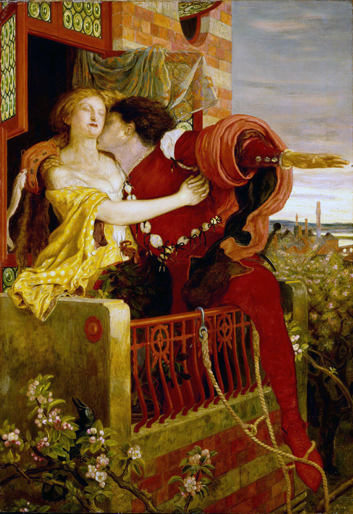
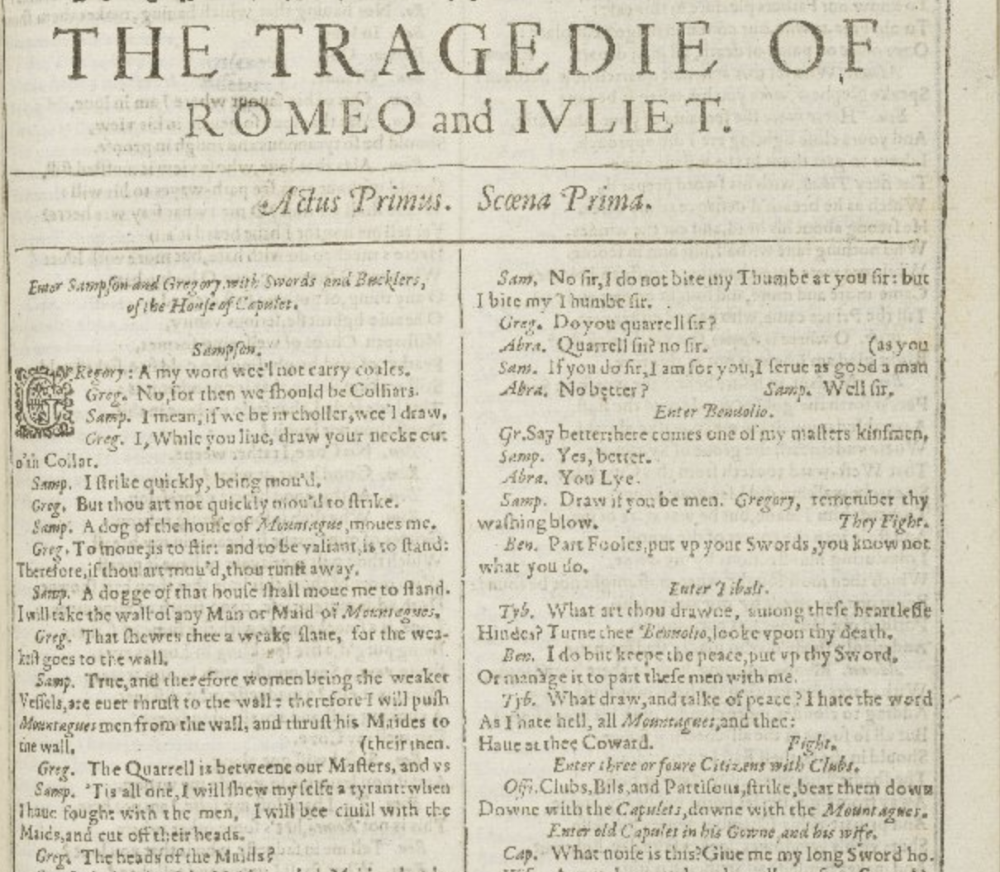
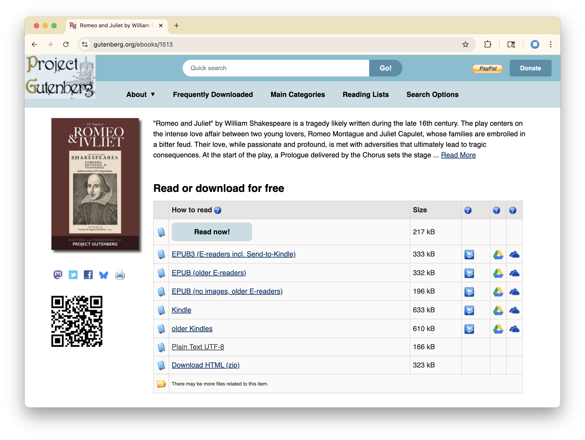
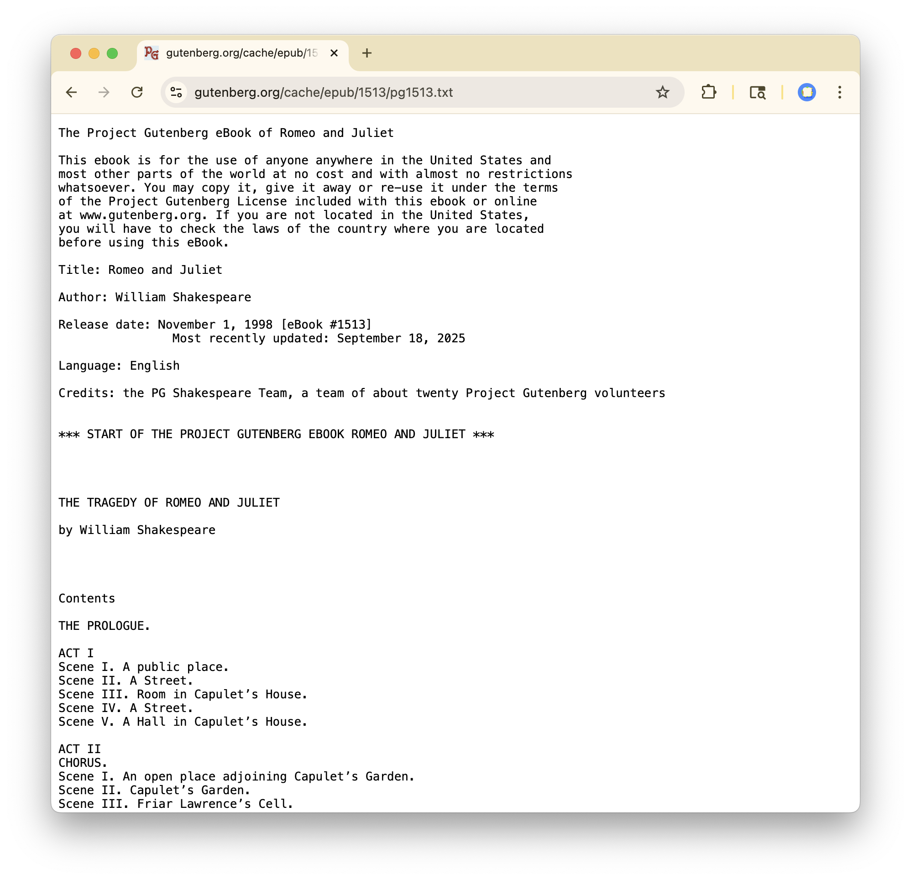
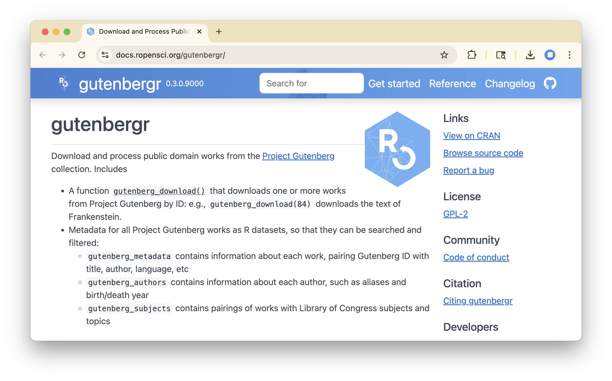
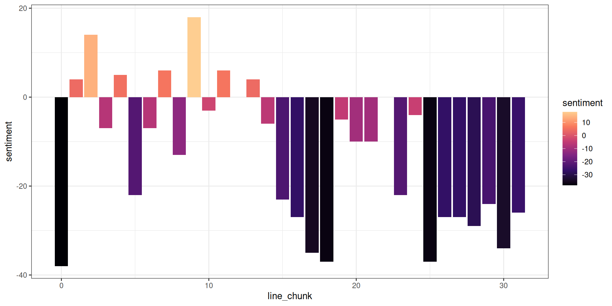

Text Analysis
Romeo and Juliet
Romeo and Juliet (Shakespeare, 1597)


Romeo and Juliet (Shakespeare, 1597)
Questions:
- What words are most commonly used?
- What is the emotional arc of the play?
Steps:
- Access text as computer file
- Read into R
- Data cleaning
- Summary statistics
- Visualization
Text analysis ideas:
- Tokens
- Sentiment


Read directly from txt file
[1] "The Project Gutenberg eBook of Romeo and Juliet"
[2] " "
[3] "This ebook is for the use of anyone anywhere in the United States and"
[4] "most other parts of the world at no cost and with almost no restrictions"
[5] "whatsoever. You may copy it, give it away or re-use it under the terms"
[6] "of the Project Gutenberg License included with this ebook or online"
[7] "at www.gutenberg.org. If you are not located in the United States,"
[8] "you will have to check the laws of the country where you are located"
[9] "before using this eBook."
[10] ""
[11] "Title: Romeo and Juliet"
[12] ""
[13] "Author: William Shakespeare"
[14] ""
[15] "Release date: November 1, 1998 [eBook #1513]"
[16] " Most recently updated: September 18, 2025"
[17] ""
[18] "Language: English"
[19] ""
[20] "Credits: the PG Shakespeare Team, a team of about twenty Project Gutenberg volunteers"
[21] ""
[22] ""
[23] "*** START OF THE PROJECT GUTENBERG EBOOK ROMEO AND JULIET ***"
[24] ""
[25] ""
[26] ""
[27] ""
[28] "THE TRAGEDY OF ROMEO AND JULIET"
[29] ""
[30] "by William Shakespeare"
[31] ""
[32] ""
[33] ""
[34] ""
[35] "Contents"
[36] ""
[37] "THE PROLOGUE."
[38] ""
[39] "ACT I"
[40] "Scene I. A public place."
[41] "Scene II. A Street."
[42] "Scene III. Room in Capulet’s House."
[43] "Scene IV. A Street."
[44] "Scene V. A Hall in Capulet’s House."
[45] ""
[46] "ACT II"
[47] "CHORUS."
[48] "Scene I. An open place adjoining Capulet’s Garden."
[49] "Scene II. Capulet’s Garden."
[50] "Scene III. Friar Lawrence’s Cell."
[51] "Scene IV. A Street."
[52] "Scene V. Capulet’s Garden."
[53] "Scene VI. Friar Lawrence’s Cell."
[54] ""
[55] "ACT III"
[56] "Scene I. A public Place."
[57] "Scene II. A Room in Capulet’s House."
[58] "Scene III. Friar Lawrence’s cell."
[59] "Scene IV. A Room in Capulet’s House."
[60] "Scene V. An open Gallery to Juliet’s Chamber, overlooking the Garden."
[61] ""
[62] "ACT IV"
[63] "Scene I. Friar Lawrence’s Cell."
[64] "Scene II. Hall in Capulet’s House."
[65] "Scene III. Juliet’s Chamber."
[66] "Scene IV. Hall in Capulet’s House."
[67] "Scene V. Juliet’s Chamber; Juliet on the bed."
[68] ""
[69] "ACT V"
[70] "Scene I. Mantua. A Street."
[71] "Scene II. Friar Lawrence’s Cell."
[72] "Scene III. A churchyard; in it a Monument belonging to the Capulets."
[73] ""
[74] ""
[75] ""
[76] ""
[77] " Dramatis Personæ"
[78] ""
[79] "ESCALUS, Prince of Verona."
[80] "MERCUTIO, kinsman to the Prince, and friend to Romeo."
[81] "PARIS, a young Nobleman, kinsman to the Prince."
[82] "Page to Paris."
[83] ""
[84] "MONTAGUE, head of a Veronese family at feud with the Capulets."
[85] "LADY MONTAGUE, wife to Montague."
[86] "ROMEO, son to Montague."
[87] "BENVOLIO, nephew to Montague, and friend to Romeo."
[88] "ABRAM, servant to Montague."
[89] "BALTHASAR, servant to Romeo."
[90] ""
[91] "CAPULET, head of a Veronese family at feud with the Montagues."
[92] "LADY CAPULET, wife to Capulet."
[93] "JULIET, daughter to Capulet."
[94] "TYBALT, nephew to Lady Capulet."
[95] "CAPULET’S COUSIN, an old man."
[96] "NURSE to Juliet."
[97] "PETER, servant to Juliet’s Nurse."
[98] "SAMPSON, servant to Capulet."
[99] "GREGORY, servant to Capulet."
[100] "Servants."
[101] ""
[102] "FRIAR LAWRENCE, a Franciscan."
[103] "FRIAR JOHN, of the same Order."
[104] "An Apothecary."
[105] "CHORUS."
[106] "Three Musicians."
[107] "An Officer."
[108] "Citizens of Verona; several Men and Women, relations to both houses;"
[109] "Maskers, Guards, Watchmen and Attendants."
[110] ""
[111] "SCENE. During the greater part of the Play in Verona; once, in the"
[112] "Fifth Act, at Mantua."
[113] ""
[114] ""
[115] ""
[116] ""
[117] "THE PROLOGUE"
[118] ""
[119] ""
[120] " Enter Chorus."
[121] ""
[122] "CHORUS."
[123] "Two households, both alike in dignity,"
[124] "In fair Verona, where we lay our scene,"
[125] "From ancient grudge break to new mutiny,"
[126] "Where civil blood makes civil hands unclean."
[127] "From forth the fatal loins of these two foes"
[128] "A pair of star-cross’d lovers take their life;"
[129] "Whose misadventur’d piteous overthrows"
[130] "Doth with their death bury their parents’ strife."
[131] "The fearful passage of their death-mark’d love,"
[132] "And the continuance of their parents’ rage,"
[133] "Which, but their children’s end, nought could remove,"
[134] "Is now the two hours’ traffic of our stage;"
[135] "The which, if you with patient ears attend,"
[136] "What here shall miss, our toil shall strive to mend."
[137] ""
[138] " [_Exit._]"
[139] ""
[140] ""
[141] ""
[142] ""
[143] "ACT I"
[144] ""
[145] "SCENE I. A public place."
[146] ""
[147] ""
[148] " Enter Sampson and Gregory armed with swords and bucklers."
[149] ""
[150] "SAMPSON."
[151] "Gregory, on my word, we’ll not carry coals."
[152] ""
[153] "GREGORY."
[154] "No, for then we should be colliers."
[155] ""
[156] "SAMPSON."
[157] "I mean, if we be in choler, we’ll draw."
[158] ""
[159] "GREGORY."
[160] "Ay, while you live, draw your neck out o’ the collar."
[161] ""
[162] "SAMPSON."
[163] "I strike quickly, being moved."
[164] ""
[165] "GREGORY."
[166] "But thou art not quickly moved to strike."
[167] ""
[168] "SAMPSON."
[169] "A dog of the house of Montague moves me."
[170] ""
[171] "GREGORY."
[172] "To move is to stir; and to be valiant is to stand: therefore, if thou"
[173] "art moved, thou runn’st away."
[174] ""
[175] "SAMPSON."
[176] "A dog of that house shall move me to stand."
[177] "I will take the wall of any man or maid of Montague’s."
[178] ""
[179] "GREGORY."
[180] "That shows thee a weak slave, for the weakest goes to the wall."
[181] ""
[182] "SAMPSON."
[183] "True, and therefore women, being the weaker vessels, are ever thrust to"
[184] "the wall: therefore I will push Montague’s men from the wall, and"
[185] "thrust his maids to the wall."
[186] ""
[187] "GREGORY."
[188] "The quarrel is between our masters and us their men."
[189] ""
[190] "SAMPSON."
[191] "’Tis all one, I will show myself a tyrant: when I have fought with the"
[192] "men I will be civil with the maids, I will cut off their heads."
[193] ""
[194] "GREGORY."
[195] "The heads of the maids?"
[196] ""
[197] "SAMPSON."
[198] "Ay, the heads of the maids, or their maidenheads; take it in what sense"
[199] "thou wilt."
[200] ""
[201] "GREGORY."
[202] "They must take it in sense that feel it."
[203] ""
[204] "SAMPSON."
[205] "Me they shall feel while I am able to stand: and ’tis known I am a"
[206] "pretty piece of flesh."
[207] ""
[208] "GREGORY."
[209] "’Tis well thou art not fish; if thou hadst, thou hadst been poor John."
[210] "Draw thy tool; here comes of the house of Montagues."
[211] ""
[212] " Enter Abram and Balthasar."
[213] ""
[214] "SAMPSON."
[215] "My naked weapon is out: quarrel, I will back thee."
[216] ""
[217] "GREGORY."
[218] "How? Turn thy back and run?"
[219] ""
[220] "SAMPSON."
[221] "Fear me not."
[222] ""
[223] "GREGORY."
[224] "No, marry; I fear thee!"
[225] ""
[226] "SAMPSON."
[227] "Let us take the law of our sides; let them begin."
[228] ""
[229] "GREGORY."
[230] "I will frown as I pass by, and let them take it as they list."
[231] ""
[232] "SAMPSON."
[233] "Nay, as they dare. I will bite my thumb at them, which is disgrace to"
[234] "them if they bear it."
[235] ""
[236] "ABRAM."
[237] "Do you bite your thumb at us, sir?"
[238] ""
[239] "SAMPSON."
[240] "I do bite my thumb, sir."
[241] ""
[242] "ABRAM."
[243] "Do you bite your thumb at us, sir?"
[244] ""
[245] "SAMPSON."
[246] "Is the law of our side if I say ay?"
[247] ""
[248] "GREGORY."
[249] "No."
[250] ""
[251] "SAMPSON."
[252] "No sir, I do not bite my thumb at you, sir; but I bite my thumb, sir."
[253] ""
[254] "GREGORY."
[255] "Do you quarrel, sir?"
[256] ""
[257] "ABRAM."
[258] "Quarrel, sir? No, sir."
[259] ""
[260] "SAMPSON."
[261] "But if you do, sir, I am for you. I serve as good a man as you."
[262] ""
[263] "ABRAM."
[264] "No better."
[265] ""
[266] "SAMPSON."
[267] "Well, sir."
[268] ""
[269] " Enter Benvolio."
[270] ""
[271] "GREGORY."
[272] "Say better; here comes one of my master’s kinsmen."
[273] ""
[274] "SAMPSON."
[275] "Yes, better, sir."
[276] ""
[277] "ABRAM."
[278] "You lie."
[279] ""
[280] "SAMPSON."
[281] "Draw, if you be men. Gregory, remember thy washing blow."
[282] ""
[283] " [_They fight._]"
[284] ""
[285] "BENVOLIO."
[286] "Part, fools! put up your swords, you know not what you do."
[287] ""
[288] " [_Beats down their swords._]"
[289] ""
[290] " Enter Tybalt."
[291] ""
[292] "TYBALT."
[293] "What, art thou drawn among these heartless hinds?"
[294] "Turn thee Benvolio, look upon thy death."
[295] ""
[296] "BENVOLIO."
[297] "I do but keep the peace, put up thy sword,"
[298] "Or manage it to part these men with me."
[299] ""
[300] "TYBALT."
[301] "What, drawn, and talk of peace? I hate the word"
[302] "As I hate hell, all Montagues, and thee:"
[303] "Have at thee, coward."
[304] ""
[305] " [_They fight._]"
[306] ""
[307] " Enter three or four Citizens with clubs."
[308] ""
[309] "FIRST CITIZEN."
[310] "Clubs, bills and partisans! Strike! Beat them down!"
[311] "Down with the Capulets! Down with the Montagues!"
[312] ""
[313] " Enter Capulet in his gown, and Lady Capulet."
[314] ""
[315] "CAPULET."
[316] "What noise is this? Give me my long sword, ho!"
[317] ""
[318] "LADY CAPULET."
[319] "A crutch, a crutch! Why call you for a sword?"
[320] ""
[321] "CAPULET."
[322] "My sword, I say! Old Montague is come,"
[323] "And flourishes his blade in spite of me."
[324] ""
[325] " Enter Montague and his Lady Montague."
[326] ""
[327] "MONTAGUE."
[328] "Thou villain Capulet! Hold me not, let me go."
[329] ""
[330] "LADY MONTAGUE."
[331] "Thou shalt not stir one foot to seek a foe."
[332] ""
[333] " Enter Prince Escalus, with Attendants."
[334] ""
[335] "PRINCE."
[336] "Rebellious subjects, enemies to peace,"
[337] "Profaners of this neighbour-stained steel,—"
[338] "Will they not hear? What, ho! You men, you beasts,"
[339] "That quench the fire of your pernicious rage"
[340] "With purple fountains issuing from your veins,"
[341] "On pain of torture, from those bloody hands"
[342] "Throw your mistemper’d weapons to the ground"
[343] "And hear the sentence of your moved prince."
[344] "Three civil brawls, bred of an airy word,"
[345] "By thee, old Capulet, and Montague,"
[346] "Have thrice disturb’d the quiet of our streets,"
[347] "And made Verona’s ancient citizens"
[348] "Cast by their grave beseeming ornaments,"
[349] "To wield old partisans, in hands as old,"
[350] "Canker’d with peace, to part your canker’d hate."
[351] "If ever you disturb our streets again,"
[352] "Your lives shall pay the forfeit of the peace."
[353] "For this time all the rest depart away:"
[354] "You, Capulet, shall go along with me,"
[355] "And Montague, come you this afternoon,"
[356] "To know our farther pleasure in this case,"
[357] "To old Free-town, our common judgement-place."
[358] "Once more, on pain of death, all men depart."
[359] ""
[360] " [_Exeunt Prince and Attendants; Capulet, Lady Capulet, Tybalt,"
[361] " Citizens and Servants._]"
[362] ""
[363] "MONTAGUE."
[364] "Who set this ancient quarrel new abroach?"
[365] "Speak, nephew, were you by when it began?"
[366] ""
[367] "BENVOLIO."
[368] "Here were the servants of your adversary"
[369] "And yours, close fighting ere I did approach."
[370] "I drew to part them, in the instant came"
[371] "The fiery Tybalt, with his sword prepar’d,"
[372] "Which, as he breath’d defiance to my ears,"
[373] "He swung about his head, and cut the winds,"
[374] "Who nothing hurt withal, hiss’d him in scorn."
[375] "While we were interchanging thrusts and blows"
[376] "Came more and more, and fought on part and part,"
[377] "Till the Prince came, who parted either part."
[378] ""
[379] "LADY MONTAGUE."
[380] "O where is Romeo, saw you him today?"
[381] "Right glad I am he was not at this fray."
[382] ""
[383] "BENVOLIO."
[384] "Madam, an hour before the worshipp’d sun"
[385] "Peer’d forth the golden window of the east,"
[386] "A troubled mind drave me to walk abroad,"
[387] "Where underneath the grove of sycamore"
[388] "That westward rooteth from this city side,"
[389] "So early walking did I see your son."
[390] "Towards him I made, but he was ware of me,"
[391] "And stole into the covert of the wood."
[392] "I, measuring his affections by my own,"
[393] "Which then most sought where most might not be found,"
[394] "Being one too many by my weary self,"
[395] "Pursu’d my humour, not pursuing his,"
[396] "And gladly shunn’d who gladly fled from me."
[397] ""
[398] "MONTAGUE."
[399] "Many a morning hath he there been seen,"
[400] "With tears augmenting the fresh morning’s dew,"
[401] "Adding to clouds more clouds with his deep sighs;"
[402] "But all so soon as the all-cheering sun"
[403] "Should in the farthest east begin to draw"
[404] "The shady curtains from Aurora’s bed,"
[405] "Away from light steals home my heavy son,"
[406] "And private in his chamber pens himself,"
[407] "Shuts up his windows, locks fair daylight out"
[408] "And makes himself an artificial night."
[409] "Black and portentous must this humour prove,"
[410] "Unless good counsel may the cause remove."
[411] ""
[412] "BENVOLIO."
[413] "My noble uncle, do you know the cause?"
[414] ""
[415] "MONTAGUE."
[416] "I neither know it nor can learn of him."
[417] ""
[418] "BENVOLIO."
[419] "Have you importun’d him by any means?"
[420] ""
[421] "MONTAGUE."
[422] "Both by myself and many other friends;"
[423] "But he, his own affections’ counsellor,"
[424] "Is to himself—I will not say how true—"
[425] "But to himself so secret and so close,"
[426] "So far from sounding and discovery,"
[427] "As is the bud bit with an envious worm"
[428] "Ere he can spread his sweet leaves to the air,"
[429] "Or dedicate his beauty to the sun."
[430] "Could we but learn from whence his sorrows grow,"
[431] "We would as willingly give cure as know."
[432] ""
[433] " Enter Romeo."
[434] ""
[435] "BENVOLIO."
[436] "See, where he comes. So please you step aside;"
[437] "I’ll know his grievance or be much denied."
[438] ""
[439] "MONTAGUE."
[440] "I would thou wert so happy by thy stay"
[441] "To hear true shrift. Come, madam, let’s away,"
[442] ""
[443] " [_Exeunt Montague and Lady Montague._]"
[444] ""
[445] "BENVOLIO."
[446] "Good morrow, cousin."
[447] ""
[448] "ROMEO."
[449] "Is the day so young?"
[450] ""
[451] "BENVOLIO."
[452] "But new struck nine."
[453] ""
[454] "ROMEO."
[455] "Ay me, sad hours seem long."
[456] "Was that my father that went hence so fast?"
[457] ""
[458] "BENVOLIO."
[459] "It was. What sadness lengthens Romeo’s hours?"
[460] ""
[461] "ROMEO."
[462] "Not having that which, having, makes them short."
[463] ""
[464] "BENVOLIO."
[465] "In love?"
[466] ""
[467] "ROMEO."
[468] "Out."
[469] ""
[470] "BENVOLIO."
[471] "Of love?"
[472] ""
[473] "ROMEO."
[474] "Out of her favour where I am in love."
[475] ""
[476] "BENVOLIO."
[477] "Alas that love so gentle in his view,"
[478] "Should be so tyrannous and rough in proof."
[479] ""
[480] "ROMEO."
[481] "Alas that love, whose view is muffled still,"
[482] "Should, without eyes, see pathways to his will!"
[483] "Where shall we dine? O me! What fray was here?"
[484] "Yet tell me not, for I have heard it all."
[485] "Here’s much to do with hate, but more with love:"
[486] "Why, then, O brawling love! O loving hate!"
[487] "O anything, of nothing first create!"
[488] "O heavy lightness! serious vanity!"
[489] "Misshapen chaos of well-seeming forms!"
[490] "Feather of lead, bright smoke, cold fire, sick health!"
[491] "Still-waking sleep, that is not what it is!"
[492] "This love feel I, that feel no love in this."
[493] "Dost thou not laugh?"
[494] ""
[495] "BENVOLIO."
[496] "No coz, I rather weep."
[497] ""
[498] "ROMEO."
[499] "Good heart, at what?"
[500] ""
[501] "BENVOLIO."
[502] "At thy good heart’s oppression."
[503] ""
[504] "ROMEO."
[505] "Why such is love’s transgression."
[506] "Griefs of mine own lie heavy in my breast,"
[507] "Which thou wilt propagate to have it prest"
[508] "With more of thine. This love that thou hast shown"
[509] "Doth add more grief to too much of mine own."
[510] "Love is a smoke made with the fume of sighs;"
[511] "Being purg’d, a fire sparkling in lovers’ eyes;"
[512] "Being vex’d, a sea nourish’d with lovers’ tears:"
[513] "What is it else? A madness most discreet,"
[514] "A choking gall, and a preserving sweet."
[515] "Farewell, my coz."
[516] ""
[517] " [_Going._]"
[518] ""
[519] "BENVOLIO."
[520] "Soft! I will go along:"
[521] "And if you leave me so, you do me wrong."
[522] ""
[523] "ROMEO."
[524] "Tut! I have lost myself; I am not here."
[525] "This is not Romeo, he’s some other where."
[526] ""
[527] "BENVOLIO."
[528] "Tell me in sadness who is that you love?"
[529] ""
[530] "ROMEO."
[531] "What, shall I groan and tell thee?"
[532] ""
[533] "BENVOLIO."
[534] "Groan! Why, no; but sadly tell me who."
[535] ""
[536] "ROMEO."
[537] "Bid a sick man in sadness make his will,"
[538] "A word ill urg’d to one that is so ill."
[539] "In sadness, cousin, I do love a woman."
[540] ""
[541] "BENVOLIO."
[542] "I aim’d so near when I suppos’d you lov’d."
[543] ""
[544] "ROMEO."
[545] "A right good markman, and she’s fair I love."
[546] ""
[547] "BENVOLIO."
[548] "A right fair mark, fair coz, is soonest hit."
[549] ""
[550] "ROMEO."
[551] "Well, in that hit you miss: she’ll not be hit"
[552] "With Cupid’s arrow, she hath Dian’s wit;"
[553] "And in strong proof of chastity well arm’d,"
[554] "From love’s weak childish bow she lives uncharm’d."
[555] "She will not stay the siege of loving terms"
[556] "Nor bide th’encounter of assailing eyes,"
[557] "Nor ope her lap to saint-seducing gold:"
[558] "O she’s rich in beauty, only poor"
[559] "That when she dies, with beauty dies her store."
[560] ""
[561] "BENVOLIO."
[562] "Then she hath sworn that she will still live chaste?"
[563] ""
[564] "ROMEO."
[565] "She hath, and in that sparing makes huge waste;"
[566] "For beauty starv’d with her severity,"
[567] "Cuts beauty off from all posterity."
[568] "She is too fair, too wise; wisely too fair,"
[569] "To merit bliss by making me despair."
[570] "She hath forsworn to love, and in that vow"
[571] "Do I live dead, that live to tell it now."
[572] ""
[573] "BENVOLIO."
[574] "Be rul’d by me, forget to think of her."
[575] ""
[576] "ROMEO."
[577] "O teach me how I should forget to think."
[578] ""
[579] "BENVOLIO."
[580] "By giving liberty unto thine eyes;"
[581] "Examine other beauties."
[582] ""
[583] "ROMEO."
[584] "’Tis the way"
[585] "To call hers, exquisite, in question more."
[586] "These happy masks that kiss fair ladies’ brows,"
[587] "Being black, puts us in mind they hide the fair;"
[588] "He that is strucken blind cannot forget"
[589] "The precious treasure of his eyesight lost."
[590] "Show me a mistress that is passing fair,"
[591] "What doth her beauty serve but as a note"
[592] "Where I may read who pass’d that passing fair?"
[593] "Farewell, thou canst not teach me to forget."
[594] ""
[595] "BENVOLIO."
[596] "I’ll pay that doctrine, or else die in debt."
[597] ""
[598] " [_Exeunt._]"
[599] ""
[600] "SCENE II. A Street."
[601] ""
[602] " Enter Capulet, Paris and Servant."
[603] ""
[604] "CAPULET."
[605] "But Montague is bound as well as I,"
[606] "In penalty alike; and ’tis not hard, I think,"
[607] "For men so old as we to keep the peace."
[608] ""
[609] "PARIS."
[610] "Of honourable reckoning are you both,"
[611] "And pity ’tis you liv’d at odds so long."
[612] "But now my lord, what say you to my suit?"
[613] ""
[614] "CAPULET."
[615] "But saying o’er what I have said before."
[616] "My child is yet a stranger in the world,"
[617] "She hath not seen the change of fourteen years;"
[618] "Let two more summers wither in their pride"
[619] "Ere we may think her ripe to be a bride."
[620] ""
[621] "PARIS."
[622] "Younger than she are happy mothers made."
[623] ""
[624] "CAPULET."
[625] "And too soon marr’d are those so early made."
[626] "The earth hath swallowed all my hopes but she,"
[627] "She is the hopeful lady of my earth:"
[628] "But woo her, gentle Paris, get her heart,"
[629] "My will to her consent is but a part;"
[630] "And she agree, within her scope of choice"
[631] "Lies my consent and fair according voice."
[632] "This night I hold an old accustom’d feast,"
[633] "Whereto I have invited many a guest,"
[634] "Such as I love, and you among the store,"
[635] "One more, most welcome, makes my number more."
[636] "At my poor house look to behold this night"
[637] "Earth-treading stars that make dark heaven light:"
[638] "Such comfort as do lusty young men feel"
[639] "When well apparell’d April on the heel"
[640] "Of limping winter treads, even such delight"
[641] "Among fresh female buds shall you this night"
[642] "Inherit at my house. Hear all, all see,"
[643] "And like her most whose merit most shall be:"
[644] "Which, on more view of many, mine, being one,"
[645] "May stand in number, though in reckoning none."
[646] "Come, go with me. Go, sirrah, trudge about"
[647] "Through fair Verona; find those persons out"
[648] "Whose names are written there, [_gives a paper_] and to them say,"
[649] "My house and welcome on their pleasure stay."
[650] ""
[651] " [_Exeunt Capulet and Paris._]"
[652] ""
[653] "SERVANT."
[654] "Find them out whose names are written here! It is written that the"
[655] "shoemaker should meddle with his yard and the tailor with his last, the"
[656] "fisher with his pencil, and the painter with his nets; but I am sent to"
[657] "find those persons whose names are here writ, and can never find what"
[658] "names the writing person hath here writ. I must to the learned. In good"
[659] "time!"
[660] ""
[661] " Enter Benvolio and Romeo."
[662] ""
[663] "BENVOLIO."
[664] "Tut, man, one fire burns out another’s burning,"
[665] "One pain is lessen’d by another’s anguish;"
[666] "Turn giddy, and be holp by backward turning;"
[667] "One desperate grief cures with another’s languish:"
[668] "Take thou some new infection to thy eye,"
[669] "And the rank poison of the old will die."
[670] ""
[671] "ROMEO."
[672] "Your plantain leaf is excellent for that."
[673] ""
[674] "BENVOLIO."
[675] "For what, I pray thee?"
[676] ""
[677] "ROMEO."
[678] "For your broken shin."
[679] ""
[680] "BENVOLIO."
[681] "Why, Romeo, art thou mad?"
[682] ""
[683] "ROMEO."
[684] "Not mad, but bound more than a madman is:"
[685] "Shut up in prison, kept without my food,"
[686] "Whipp’d and tormented and—God-den, good fellow."
[687] ""
[688] "SERVANT."
[689] "God gi’ go-den. I pray, sir, can you read?"
[690] ""
[691] "ROMEO."
[692] "Ay, mine own fortune in my misery."
[693] ""
[694] "SERVANT."
[695] "Perhaps you have learned it without book."
[696] "But I pray, can you read anything you see?"
[697] ""
[698] "ROMEO."
[699] "Ay, If I know the letters and the language."
[700] ""
[701] "SERVANT."
[702] "Ye say honestly, rest you merry!"
[703] ""
[704] "ROMEO."
[705] "Stay, fellow; I can read."
[706] ""
[707] " [_He reads the letter._]"
[708] ""
[709] "_Signior Martino and his wife and daughters;"
[710] "County Anselmo and his beauteous sisters;"
[711] "The lady widow of Utruvio;"
[712] "Signior Placentio and his lovely nieces;"
[713] "Mercutio and his brother Valentine;"
[714] "Mine uncle Capulet, his wife, and daughters;"
[715] "My fair niece Rosaline and Livia;"
[716] "Signior Valentio and his cousin Tybalt;"
[717] "Lucio and the lively Helena. _"
[718] ""
[719] ""
[720] "A fair assembly. [_Gives back the paper_] Whither should they come?"
[721] ""
[722] "SERVANT."
[723] "Up."
[724] ""
[725] "ROMEO."
[726] "Whither to supper?"
[727] ""
[728] "SERVANT."
[729] "To our house."
[730] ""
[731] "ROMEO."
[732] "Whose house?"
[733] ""
[734] "SERVANT."
[735] "My master’s."
[736] ""
[737] "ROMEO."
[738] "Indeed I should have ask’d you that before."
[739] ""
[740] "SERVANT."
[741] "Now I’ll tell you without asking. My master is the great rich Capulet,"
[742] "and if you be not of the house of Montagues, I pray come and crush a"
[743] "cup of wine. Rest you merry."
[744] ""
[745] " [_Exit._]"
[746] ""
[747] "BENVOLIO."
[748] "At this same ancient feast of Capulet’s"
[749] "Sups the fair Rosaline whom thou so lov’st;"
[750] "With all the admired beauties of Verona."
[751] "Go thither and with unattainted eye,"
[752] "Compare her face with some that I shall show,"
[753] "And I will make thee think thy swan a crow."
[754] ""
[755] "ROMEO."
[756] "When the devout religion of mine eye"
[757] "Maintains such falsehood, then turn tears to fire;"
[758] "And these who, often drown’d, could never die,"
[759] "Transparent heretics, be burnt for liars."
[760] "One fairer than my love? The all-seeing sun"
[761] "Ne’er saw her match since first the world begun."
[762] ""
[763] "BENVOLIO."
[764] "Tut, you saw her fair, none else being by,"
[765] "Herself pois’d with herself in either eye:"
[766] "But in that crystal scales let there be weigh’d"
[767] "Your lady’s love against some other maid"
[768] "That I will show you shining at this feast,"
[769] "And she shall scant show well that now shows best."
[770] ""
[771] "ROMEO."
[772] "I’ll go along, no such sight to be shown,"
[773] "But to rejoice in splendour of my own."
[774] ""
[775] " [_Exeunt._]"
[776] ""
[777] "SCENE III. Room in Capulet’s House."
[778] ""
[779] " Enter Lady Capulet and Nurse."
[780] ""
[781] "LADY CAPULET."
[782] "Nurse, where’s my daughter? Call her forth to me."
[783] ""
[784] "NURSE."
[785] "Now, by my maidenhead, at twelve year old,"
[786] "I bade her come. What, lamb! What ladybird!"
[787] "God forbid! Where’s this girl? What, Juliet!"
[788] ""
[789] " Enter Juliet."
[790] ""
[791] "JULIET."
[792] "How now, who calls?"
[793] ""
[794] "NURSE."
[795] "Your mother."
[796] ""
[797] "JULIET."
[798] "Madam, I am here. What is your will?"
[799] ""
[800] "LADY CAPULET."
[801] "This is the matter. Nurse, give leave awhile,"
[802] "We must talk in secret. Nurse, come back again,"
[803] "I have remember’d me, thou’s hear our counsel."
[804] "Thou knowest my daughter’s of a pretty age."
[805] ""
[806] "NURSE."
[807] "Faith, I can tell her age unto an hour."
[808] ""
[809] "LADY CAPULET."
[810] "She’s not fourteen."
[811] ""
[812] "NURSE."
[813] "I’ll lay fourteen of my teeth,"
[814] "And yet, to my teen be it spoken, I have but four,"
[815] "She is not fourteen. How long is it now"
[816] "To Lammas-tide?"
[817] ""
[818] "LADY CAPULET."
[819] "A fortnight and odd days."
[820] ""
[821] "NURSE."
[822] "Even or odd, of all days in the year,"
[823] "Come Lammas Eve at night shall she be fourteen."
[824] "Susan and she,—God rest all Christian souls!—"
[825] "Were of an age. Well, Susan is with God;"
[826] "She was too good for me. But as I said,"
[827] "On Lammas Eve at night shall she be fourteen;"
[828] "That shall she, marry; I remember it well."
[829] "’Tis since the earthquake now eleven years;"
[830] "And she was wean’d,—I never shall forget it—,"
[831] "Of all the days of the year, upon that day:"
[832] "For I had then laid wormwood to my dug,"
[833] "Sitting in the sun under the dovehouse wall;"
[834] "My lord and you were then at Mantua:"
[835] "Nay, I do bear a brain. But as I said,"
[836] "When it did taste the wormwood on the nipple"
[837] "Of my dug and felt it bitter, pretty fool,"
[838] "To see it tetchy, and fall out with the dug!"
[839] "Shake, quoth the dovehouse: ’twas no need, I trow,"
[840] "To bid me trudge."
[841] "And since that time it is eleven years;"
[842] "For then she could stand alone; nay, by th’rood"
[843] "She could have run and waddled all about;"
[844] "For even the day before she broke her brow,"
[845] "And then my husband,—God be with his soul!"
[846] "A was a merry man,—took up the child:"
[847] "‘Yea,’ quoth he, ‘dost thou fall upon thy face?"
[848] "Thou wilt fall backward when thou hast more wit;"
[849] "Wilt thou not, Jule?’ and, by my holidame,"
[850] "The pretty wretch left crying, and said ‘Ay’."
[851] "To see now how a jest shall come about."
[852] "I warrant, and I should live a thousand years,"
[853] "I never should forget it. ‘Wilt thou not, Jule?’ quoth he;"
[854] "And, pretty fool, it stinted, and said ‘Ay.’"
[855] ""
[856] "LADY CAPULET."
[857] "Enough of this; I pray thee hold thy peace."
[858] ""
[859] "NURSE."
[860] "Yes, madam, yet I cannot choose but laugh,"
[861] "To think it should leave crying, and say ‘Ay’;"
[862] "And yet I warrant it had upon it brow"
[863] "A bump as big as a young cockerel’s stone;"
[864] "A perilous knock, and it cried bitterly."
[865] "‘Yea,’ quoth my husband, ‘fall’st upon thy face?"
[866] "Thou wilt fall backward when thou comest to age;"
[867] "Wilt thou not, Jule?’ it stinted, and said ‘Ay’."
[868] ""
[869] "JULIET."
[870] "And stint thou too, I pray thee, Nurse, say I."
[871] ""
[872] "NURSE."
[873] "Peace, I have done. God mark thee to his grace"
[874] "Thou wast the prettiest babe that e’er I nurs’d:"
[875] "And I might live to see thee married once, I have my wish."
[876] ""
[877] "LADY CAPULET."
[878] "Marry, that marry is the very theme"
[879] "I came to talk of. Tell me, daughter Juliet,"
[880] "How stands your disposition to be married?"
[881] ""
[882] "JULIET."
[883] "It is an honour that I dream not of."
[884] ""
[885] "NURSE."
[886] "An honour! Were not I thine only nurse,"
[887] "I would say thou hadst suck’d wisdom from thy teat."
[888] ""
[889] "LADY CAPULET."
[890] "Well, think of marriage now: younger than you,"
[891] "Here in Verona, ladies of esteem,"
[892] "Are made already mothers. By my count"
[893] "I was your mother much upon these years"
[894] "That you are now a maid. Thus, then, in brief;"
[895] "The valiant Paris seeks you for his love."
[896] ""
[897] "NURSE."
[898] "A man, young lady! Lady, such a man"
[899] "As all the world—why he’s a man of wax."
[900] ""
[901] "LADY CAPULET."
[902] "Verona’s summer hath not such a flower."
[903] ""
[904] "NURSE."
[905] "Nay, he’s a flower, in faith a very flower."
[906] ""
[907] "LADY CAPULET."
[908] "What say you, can you love the gentleman?"
[909] "This night you shall behold him at our feast;"
[910] "Read o’er the volume of young Paris’ face,"
[911] "And find delight writ there with beauty’s pen."
[912] "Examine every married lineament,"
[913] "And see how one another lends content;"
[914] "And what obscur’d in this fair volume lies,"
[915] "Find written in the margent of his eyes."
[916] "This precious book of love, this unbound lover,"
[917] "To beautify him, only lacks a cover:"
[918] "The fish lives in the sea; and ’tis much pride"
[919] "For fair without the fair within to hide."
[920] "That book in many’s eyes doth share the glory,"
[921] "That in gold clasps locks in the golden story;"
[922] "So shall you share all that he doth possess,"
[923] "By having him, making yourself no less."
[924] ""
[925] "NURSE."
[926] "No less, nay bigger. Women grow by men."
[927] ""
[928] "LADY CAPULET."
[929] "Speak briefly, can you like of Paris’ love?"
[930] ""
[931] "JULIET."
[932] "I’ll look to like, if looking liking move:"
[933] "But no more deep will I endart mine eye"
[934] "Than your consent gives strength to make it fly."
[935] ""
[936] " Enter a Servant."
[937] ""
[938] "SERVANT."
[939] "Madam, the guests are come, supper served up, you called, my young lady"
[940] "asked for, the Nurse cursed in the pantry, and everything in extremity."
[941] "I must hence to wait, I beseech you follow straight."
[942] ""
[943] "LADY CAPULET."
[944] "We follow thee."
[945] ""
[946] " [_Exit Servant._]"
[947] ""
[948] "Juliet, the County stays."
[949] ""
[950] "NURSE."
[951] "Go, girl, seek happy nights to happy days."
[952] ""
[953] " [_Exeunt._]"
[954] ""
[955] "SCENE IV. A Street."
[956] ""
[957] " Enter Romeo, Mercutio, Benvolio, with five or six Maskers;"
[958] " Torch-bearers and others."
[959] ""
[960] "ROMEO."
[961] "What, shall this speech be spoke for our excuse?"
[962] "Or shall we on without apology?"
[963] ""
[964] "BENVOLIO."
[965] "The date is out of such prolixity:"
[966] "We’ll have no Cupid hoodwink’d with a scarf,"
[967] "Bearing a Tartar’s painted bow of lath,"
[968] "Scaring the ladies like a crow-keeper;"
[969] "Nor no without-book prologue, faintly spoke"
[970] "After the prompter, for our entrance:"
[971] "But let them measure us by what they will,"
[972] "We’ll measure them a measure, and be gone."
[973] ""
[974] "ROMEO."
[975] "Give me a torch, I am not for this ambling;"
[976] "Being but heavy I will bear the light."
[977] ""
[978] "MERCUTIO."
[979] "Nay, gentle Romeo, we must have you dance."
[980] ""
[981] "ROMEO."
[982] "Not I, believe me, you have dancing shoes,"
[983] "With nimble soles, I have a soul of lead"
[984] "So stakes me to the ground I cannot move."
[985] ""
[986] "MERCUTIO."
[987] "You are a lover, borrow Cupid’s wings,"
[988] "And soar with them above a common bound."
[989] ""
[990] "ROMEO."
[991] "I am too sore enpierced with his shaft"
[992] "To soar with his light feathers, and so bound,"
[993] "I cannot bound a pitch above dull woe."
[994] "Under love’s heavy burden do I sink."
[995] ""
[996] "MERCUTIO."
[997] "And, to sink in it, should you burden love;"
[998] "Too great oppression for a tender thing."
[999] ""
[1000] "ROMEO."
[1001] "Is love a tender thing? It is too rough,"
[1002] "Too rude, too boisterous; and it pricks like thorn."
[1003] ""
[1004] "MERCUTIO."
[1005] "If love be rough with you, be rough with love;"
[1006] "Prick love for pricking, and you beat love down."
[1007] "Give me a case to put my visage in: [_Putting on a mask._]"
[1008] "A visor for a visor. What care I"
[1009] "What curious eye doth quote deformities?"
[1010] "Here are the beetle-brows shall blush for me."
[1011] ""
[1012] "BENVOLIO."
[1013] "Come, knock and enter; and no sooner in"
[1014] "But every man betake him to his legs."
[1015] ""
[1016] "ROMEO."
[1017] "A torch for me: let wantons, light of heart,"
[1018] "Tickle the senseless rushes with their heels;"
[1019] "For I am proverb’d with a grandsire phrase,"
[1020] "I’ll be a candle-holder and look on,"
[1021] "The game was ne’er so fair, and I am done."
[1022] ""
[1023] "MERCUTIO."
[1024] "Tut, dun’s the mouse, the constable’s own word:"
[1025] "If thou art dun, we’ll draw thee from the mire"
[1026] "Or save your reverence love, wherein thou stickest"
[1027] "Up to the ears. Come, we burn daylight, ho."
[1028] ""
[1029] "ROMEO."
[1030] "Nay, that’s not so."
[1031] ""
[1032] "MERCUTIO."
[1033] "I mean sir, in delay"
[1034] "We waste our lights in vain, light lights by day."
[1035] "Take our good meaning, for our judgment sits"
[1036] "Five times in that ere once in our five wits."
[1037] ""
[1038] "ROMEO."
[1039] "And we mean well in going to this mask;"
[1040] "But ’tis no wit to go."
[1041] ""
[1042] "MERCUTIO."
[1043] "Why, may one ask?"
[1044] ""
[1045] "ROMEO."
[1046] "I dreamt a dream tonight."
[1047] ""
[1048] "MERCUTIO."
[1049] "And so did I."
[1050] ""
[1051] "ROMEO."
[1052] "Well what was yours?"
[1053] ""
[1054] "MERCUTIO."
[1055] "That dreamers often lie."
[1056] ""
[1057] "ROMEO."
[1058] "In bed asleep, while they do dream things true."
[1059] ""
[1060] "MERCUTIO."
[1061] "O, then, I see Queen Mab hath been with you."
[1062] "She is the fairies’ midwife, and she comes"
[1063] "In shape no bigger than an agate-stone"
[1064] "On the fore-finger of an alderman,"
[1065] "Drawn with a team of little atomies"
[1066] "Over men’s noses as they lie asleep:"
[1067] "Her waggon-spokes made of long spinners’ legs;"
[1068] "The cover, of the wings of grasshoppers;"
[1069] "Her traces, of the smallest spider’s web;"
[1070] "The collars, of the moonshine’s watery beams;"
[1071] "Her whip of cricket’s bone; the lash, of film;"
[1072] "Her waggoner, a small grey-coated gnat,"
[1073] "Not half so big as a round little worm"
[1074] "Prick’d from the lazy finger of a maid:"
[1075] "Her chariot is an empty hazelnut,"
[1076] "Made by the joiner squirrel or old grub,"
[1077] "Time out o’ mind the fairies’ coachmakers."
[1078] "And in this state she gallops night by night"
[1079] "Through lovers’ brains, and then they dream of love;"
[1080] "O’er courtiers’ knees, that dream on curtsies straight;"
[1081] "O’er lawyers’ fingers, who straight dream on fees;"
[1082] "O’er ladies’ lips, who straight on kisses dream,"
[1083] "Which oft the angry Mab with blisters plagues,"
[1084] "Because their breaths with sweetmeats tainted are:"
[1085] "Sometime she gallops o’er a courtier’s nose,"
[1086] "And then dreams he of smelling out a suit;"
[1087] "And sometime comes she with a tithe-pig’s tail,"
[1088] "Tickling a parson’s nose as a lies asleep,"
[1089] "Then dreams he of another benefice:"
[1090] "Sometime she driveth o’er a soldier’s neck,"
[1091] "And then dreams he of cutting foreign throats,"
[1092] "Of breaches, ambuscados, Spanish blades,"
[1093] "Of healths five fathom deep; and then anon"
[1094] "Drums in his ear, at which he starts and wakes;"
[1095] "And, being thus frighted, swears a prayer or two,"
[1096] "And sleeps again. This is that very Mab"
[1097] "That plats the manes of horses in the night;"
[1098] "And bakes the elf-locks in foul sluttish hairs,"
[1099] "Which, once untangled, much misfortune bodes:"
[1100] "This is the hag, when maids lie on their backs,"
[1101] "That presses them, and learns them first to bear,"
[1102] "Making them women of good carriage:"
[1103] "This is she,—"
[1104] ""
[1105] "ROMEO."
[1106] "Peace, peace, Mercutio, peace,"
[1107] "Thou talk’st of nothing."
[1108] ""
[1109] "MERCUTIO."
[1110] "True, I talk of dreams,"
[1111] "Which are the children of an idle brain,"
[1112] "Begot of nothing but vain fantasy,"
[1113] "Which is as thin of substance as the air,"
[1114] "And more inconstant than the wind, who woos"
[1115] "Even now the frozen bosom of the north,"
[1116] "And, being anger’d, puffs away from thence,"
[1117] "Turning his side to the dew-dropping south."
[1118] ""
[1119] "BENVOLIO."
[1120] "This wind you talk of blows us from ourselves:"
[1121] "Supper is done, and we shall come too late."
[1122] ""
[1123] "ROMEO."
[1124] "I fear too early: for my mind misgives"
[1125] "Some consequence yet hanging in the stars,"
[1126] "Shall bitterly begin his fearful date"
[1127] "With this night’s revels; and expire the term"
[1128] "Of a despised life, clos’d in my breast"
[1129] "By some vile forfeit of untimely death."
[1130] "But he that hath the steerage of my course"
[1131] "Direct my suit. On, lusty gentlemen!"
[1132] ""
[1133] "BENVOLIO."
[1134] "Strike, drum."
[1135] ""
[1136] " [_Exeunt._]"
[1137] ""
[1138] "SCENE V. A Hall in Capulet’s House."
[1139] ""
[1140] " Musicians waiting. Enter Servants."
[1141] ""
[1142] "FIRST SERVANT."
[1143] "Where’s Potpan, that he helps not to take away?"
[1144] "He shift a trencher! He scrape a trencher!"
[1145] ""
[1146] "SECOND SERVANT."
[1147] "When good manners shall lie all in one or two men’s hands, and they"
[1148] "unwash’d too, ’tis a foul thing."
[1149] ""
[1150] "FIRST SERVANT."
[1151] "Away with the join-stools, remove the court-cupboard, look to the"
[1152] "plate. Good thou, save me a piece of marchpane; and as thou loves me,"
[1153] "let the porter let in Susan Grindstone and Nell. Antony and Potpan!"
[1154] ""
[1155] "SECOND SERVANT."
[1156] "Ay, boy, ready."
[1157] ""
[1158] "FIRST SERVANT."
[1159] "You are looked for and called for, asked for and sought for, in the"
[1160] "great chamber."
[1161] ""
[1162] "SECOND SERVANT."
[1163] "We cannot be here and there too. Cheerly, boys. Be brisk awhile, and"
[1164] "the longer liver take all."
[1165] ""
[1166] " [_Exeunt._]"
[1167] ""
[1168] " Enter Capulet, &c. with the Guests and Gentlewomen to the Maskers."
[1169] ""
[1170] "CAPULET."
[1171] "Welcome, gentlemen, ladies that have their toes"
[1172] "Unplagu’d with corns will have a bout with you."
[1173] "Ah my mistresses, which of you all"
[1174] "Will now deny to dance? She that makes dainty,"
[1175] "She I’ll swear hath corns. Am I come near ye now?"
[1176] "Welcome, gentlemen! I have seen the day"
[1177] "That I have worn a visor, and could tell"
[1178] "A whispering tale in a fair lady’s ear,"
[1179] "Such as would please; ’tis gone, ’tis gone, ’tis gone,"
[1180] "You are welcome, gentlemen! Come, musicians, play."
[1181] "A hall, a hall, give room! And foot it, girls."
[1182] ""
[1183] " [_Music plays, and they dance._]"
[1184] ""
[1185] "More light, you knaves; and turn the tables up,"
[1186] "And quench the fire, the room is grown too hot."
[1187] "Ah sirrah, this unlook’d-for sport comes well."
[1188] "Nay sit, nay sit, good cousin Capulet,"
[1189] "For you and I are past our dancing days;"
[1190] "How long is’t now since last yourself and I"
[1191] "Were in a mask?"
[1192] ""
[1193] "CAPULET’S COUSIN."
[1194] "By’r Lady, thirty years."
[1195] ""
[1196] "CAPULET."
[1197] "What, man, ’tis not so much, ’tis not so much:"
[1198] "’Tis since the nuptial of Lucentio,"
[1199] "Come Pentecost as quickly as it will,"
[1200] "Some five and twenty years; and then we mask’d."
[1201] ""
[1202] "CAPULET’S COUSIN."
[1203] "’Tis more, ’tis more, his son is elder, sir;"
[1204] "His son is thirty."
[1205] ""
[1206] "CAPULET."
[1207] "Will you tell me that?"
[1208] "His son was but a ward two years ago."
[1209] ""
[1210] "ROMEO."
[1211] "What lady is that, which doth enrich the hand"
[1212] "Of yonder knight?"
[1213] ""
[1214] "SERVANT."
[1215] "I know not, sir."
[1216] ""
[1217] "ROMEO."
[1218] "O, she doth teach the torches to burn bright!"
[1219] "It seems she hangs upon the cheek of night"
[1220] "As a rich jewel in an Ethiop’s ear;"
[1221] "Beauty too rich for use, for earth too dear!"
[1222] "So shows a snowy dove trooping with crows"
[1223] "As yonder lady o’er her fellows shows."
[1224] "The measure done, I’ll watch her place of stand,"
[1225] "And touching hers, make blessed my rude hand."
[1226] "Did my heart love till now? Forswear it, sight!"
[1227] "For I ne’er saw true beauty till this night."
[1228] ""
[1229] "TYBALT."
[1230] "This by his voice, should be a Montague."
[1231] "Fetch me my rapier, boy. What, dares the slave"
[1232] "Come hither, cover’d with an antic face,"
[1233] "To fleer and scorn at our solemnity?"
[1234] "Now by the stock and honour of my kin,"
[1235] "To strike him dead I hold it not a sin."
[1236] ""
[1237] "CAPULET."
[1238] "Why how now, kinsman!"
[1239] "Wherefore storm you so?"
[1240] ""
[1241] "TYBALT."
[1242] "Uncle, this is a Montague, our foe;"
[1243] "A villain that is hither come in spite,"
[1244] "To scorn at our solemnity this night."
[1245] ""
[1246] "CAPULET."
[1247] "Young Romeo, is it?"
[1248] ""
[1249] "TYBALT."
[1250] "’Tis he, that villain Romeo."
[1251] ""
[1252] "CAPULET."
[1253] "Content thee, gentle coz, let him alone,"
[1254] "A bears him like a portly gentleman;"
[1255] "And, to say truth, Verona brags of him"
[1256] "To be a virtuous and well-govern’d youth."
[1257] "I would not for the wealth of all the town"
[1258] "Here in my house do him disparagement."
[1259] "Therefore be patient, take no note of him,"
[1260] "It is my will; the which if thou respect,"
[1261] "Show a fair presence and put off these frowns,"
[1262] "An ill-beseeming semblance for a feast."
[1263] ""
[1264] "TYBALT."
[1265] "It fits when such a villain is a guest:"
[1266] "I’ll not endure him."
[1267] ""
[1268] "CAPULET."
[1269] "He shall be endur’d."
[1270] "What, goodman boy! I say he shall, go to;"
[1271] "Am I the master here, or you? Go to."
[1272] "You’ll not endure him! God shall mend my soul,"
[1273] "You’ll make a mutiny among my guests!"
[1274] "You will set cock-a-hoop, you’ll be the man!"
[1275] ""
[1276] "TYBALT."
[1277] "Why, uncle, ’tis a shame."
[1278] ""
[1279] "CAPULET."
[1280] "Go to, go to!"
[1281] "You are a saucy boy. Is’t so, indeed?"
[1282] "This trick may chance to scathe you, I know what."
[1283] "You must contrary me! Marry, ’tis time."
[1284] "Well said, my hearts!—You are a princox; go:"
[1285] "Be quiet, or—More light, more light!—For shame!"
[1286] "I’ll make you quiet. What, cheerly, my hearts."
[1287] ""
[1288] "TYBALT."
[1289] "Patience perforce with wilful choler meeting"
[1290] "Makes my flesh tremble in their different greeting."
[1291] "I will withdraw: but this intrusion shall,"
[1292] "Now seeming sweet, convert to bitter gall."
[1293] ""
[1294] " [_Exit._]"
[1295] ""
[1296] "ROMEO."
[1297] "[_To Juliet._] If I profane with my unworthiest hand"
[1298] "This holy shrine, the gentle sin is this,"
[1299] "My lips, two blushing pilgrims, ready stand"
[1300] "To smooth that rough touch with a tender kiss."
[1301] ""
[1302] "JULIET."
[1303] "Good pilgrim, you do wrong your hand too much,"
[1304] "Which mannerly devotion shows in this;"
[1305] "For saints have hands that pilgrims’ hands do touch,"
[1306] "And palm to palm is holy palmers’ kiss."
[1307] ""
[1308] "ROMEO."
[1309] "Have not saints lips, and holy palmers too?"
[1310] ""
[1311] "JULIET."
[1312] "Ay, pilgrim, lips that they must use in prayer."
[1313] ""
[1314] "ROMEO."
[1315] "O, then, dear saint, let lips do what hands do:"
[1316] "They pray, grant thou, lest faith turn to despair."
[1317] ""
[1318] "JULIET."
[1319] "Saints do not move, though grant for prayers’ sake."
[1320] ""
[1321] "ROMEO."
[1322] "Then move not while my prayer’s effect I take."
[1323] "Thus from my lips, by thine my sin is purg’d."
[1324] "[_Kissing her._]"
[1325] ""
[1326] "JULIET."
[1327] "Then have my lips the sin that they have took."
[1328] ""
[1329] "ROMEO."
[1330] "Sin from my lips? O trespass sweetly urg’d!"
[1331] "Give me my sin again."
[1332] ""
[1333] "JULIET."
[1334] "You kiss by the book."
[1335] ""
[1336] "NURSE."
[1337] "Madam, your mother craves a word with you."
[1338] ""
[1339] "ROMEO."
[1340] "What is her mother?"
[1341] ""
[1342] "NURSE."
[1343] "Marry, bachelor,"
[1344] "Her mother is the lady of the house,"
[1345] "And a good lady, and a wise and virtuous."
[1346] "I nurs’d her daughter that you talk’d withal."
[1347] "I tell you, he that can lay hold of her"
[1348] "Shall have the chinks."
[1349] ""
[1350] "ROMEO."
[1351] "Is she a Capulet?"
[1352] "O dear account! My life is my foe’s debt."
[1353] ""
[1354] "BENVOLIO."
[1355] "Away, be gone; the sport is at the best."
[1356] ""
[1357] "ROMEO."
[1358] "Ay, so I fear; the more is my unrest."
[1359] ""
[1360] "CAPULET."
[1361] "Nay, gentlemen, prepare not to be gone,"
[1362] "We have a trifling foolish banquet towards."
[1363] "Is it e’en so? Why then, I thank you all;"
[1364] "I thank you, honest gentlemen; good night."
[1365] "More torches here! Come on then, let’s to bed."
[1366] "Ah, sirrah, by my fay, it waxes late,"
[1367] "I’ll to my rest."
[1368] ""
[1369] " [_Exeunt all but Juliet and Nurse._]"
[1370] ""
[1371] "JULIET."
[1372] "Come hither, Nurse. What is yond gentleman?"
[1373] ""
[1374] "NURSE."
[1375] "The son and heir of old Tiberio."
[1376] ""
[1377] "JULIET."
[1378] "What’s he that now is going out of door?"
[1379] ""
[1380] "NURSE."
[1381] "Marry, that I think be young Petruchio."
[1382] ""
[1383] "JULIET."
[1384] "What’s he that follows here, that would not dance?"
[1385] ""
[1386] "NURSE."
[1387] "I know not."
[1388] ""
[1389] "JULIET."
[1390] "Go ask his name. If he be married,"
[1391] "My grave is like to be my wedding bed."
[1392] ""
[1393] "NURSE."
[1394] "His name is Romeo, and a Montague,"
[1395] "The only son of your great enemy."
[1396] ""
[1397] "JULIET."
[1398] "My only love sprung from my only hate!"
[1399] "Too early seen unknown, and known too late!"
[1400] "Prodigious birth of love it is to me,"
[1401] "That I must love a loathed enemy."
[1402] ""
[1403] "NURSE."
[1404] "What’s this? What’s this?"
[1405] ""
[1406] "JULIET."
[1407] "A rhyme I learn’d even now"
[1408] "Of one I danc’d withal."
[1409] ""
[1410] " [_One calls within, ‘Juliet’._]"
[1411] ""
[1412] "NURSE."
[1413] "Anon, anon!"
[1414] "Come let’s away, the strangers all are gone."
[1415] ""
[1416] " [_Exeunt._]"
[1417] ""
[1418] ""
[1419] ""
[1420] ""
[1421] "ACT II"
[1422] ""
[1423] ""
[1424] " Enter Chorus."
[1425] ""
[1426] "CHORUS."
[1427] "Now old desire doth in his deathbed lie,"
[1428] "And young affection gapes to be his heir;"
[1429] "That fair for which love groan’d for and would die,"
[1430] "With tender Juliet match’d, is now not fair."
[1431] "Now Romeo is belov’d, and loves again,"
[1432] "Alike bewitched by the charm of looks;"
[1433] "But to his foe suppos’d he must complain,"
[1434] "And she steal love’s sweet bait from fearful hooks:"
[1435] "Being held a foe, he may not have access"
[1436] "To breathe such vows as lovers use to swear;"
[1437] "And she as much in love, her means much less"
[1438] "To meet her new beloved anywhere."
[1439] "But passion lends them power, time means, to meet,"
[1440] "Tempering extremities with extreme sweet."
[1441] ""
[1442] " [_Exit._]"
[1443] ""
[1444] "SCENE I. An open place adjoining Capulet’s Garden."
[1445] ""
[1446] " Enter Romeo."
[1447] ""
[1448] "ROMEO."
[1449] "Can I go forward when my heart is here?"
[1450] "Turn back, dull earth, and find thy centre out."
[1451] ""
[1452] " [_He climbs the wall and leaps down within it._]"
[1453] ""
[1454] " Enter Benvolio and Mercutio."
[1455] ""
[1456] "BENVOLIO."
[1457] "Romeo! My cousin Romeo! Romeo!"
[1458] ""
[1459] "MERCUTIO."
[1460] "He is wise,"
[1461] "And on my life hath stol’n him home to bed."
[1462] ""
[1463] "BENVOLIO."
[1464] "He ran this way, and leap’d this orchard wall:"
[1465] "Call, good Mercutio."
[1466] ""
[1467] "MERCUTIO."
[1468] "Nay, I’ll conjure too."
[1469] "Romeo! Humours! Madman! Passion! Lover!"
[1470] "Appear thou in the likeness of a sigh,"
[1471] "Speak but one rhyme, and I am satisfied;"
[1472] "Cry but ‘Ah me!’ Pronounce but Love and dove;"
[1473] "Speak to my gossip Venus one fair word,"
[1474] "One nickname for her purblind son and heir,"
[1475] "Young Abraham Cupid, he that shot so trim"
[1476] "When King Cophetua lov’d the beggar-maid."
[1477] "He heareth not, he stirreth not, he moveth not;"
[1478] "The ape is dead, and I must conjure him."
[1479] "I conjure thee by Rosaline’s bright eyes,"
[1480] "By her high forehead and her scarlet lip,"
[1481] "By her fine foot, straight leg, and quivering thigh,"
[1482] "And the demesnes that there adjacent lie,"
[1483] "That in thy likeness thou appear to us."
[1484] ""
[1485] "BENVOLIO."
[1486] "An if he hear thee, thou wilt anger him."
[1487] ""
[1488] "MERCUTIO."
[1489] "This cannot anger him. ’Twould anger him"
[1490] "To raise a spirit in his mistress’ circle,"
[1491] "Of some strange nature, letting it there stand"
[1492] "Till she had laid it, and conjur’d it down;"
[1493] "That were some spite. My invocation"
[1494] "Is fair and honest, and, in his mistress’ name,"
[1495] "I conjure only but to raise up him."
[1496] ""
[1497] "BENVOLIO."
[1498] "Come, he hath hid himself among these trees"
[1499] "To be consorted with the humorous night."
[1500] "Blind is his love, and best befits the dark."
[1501] ""
[1502] "MERCUTIO."
[1503] "If love be blind, love cannot hit the mark."
[1504] "Now will he sit under a medlar tree,"
[1505] "And wish his mistress were that kind of fruit"
[1506] "As maids call medlars when they laugh alone."
[1507] "O Romeo, that she were, O that she were"
[1508] "An open-arse and thou a poperin pear!"
[1509] "Romeo, good night. I’ll to my truckle-bed."
[1510] "This field-bed is too cold for me to sleep."
[1511] "Come, shall we go?"
[1512] ""
[1513] "BENVOLIO."
[1514] "Go then; for ’tis in vain"
[1515] "To seek him here that means not to be found."
[1516] ""
[1517] " [_Exeunt._]"
[1518] ""
[1519] "SCENE II. Capulet’s Garden."
[1520] ""
[1521] " Enter Romeo."
[1522] ""
[1523] "ROMEO."
[1524] "He jests at scars that never felt a wound."
[1525] ""
[1526] " Juliet appears above at a window."
[1527] ""
[1528] "But soft, what light through yonder window breaks?"
[1529] "It is the east, and Juliet is the sun!"
[1530] "Arise fair sun and kill the envious moon,"
[1531] "Who is already sick and pale with grief,"
[1532] "That thou her maid art far more fair than she."
[1533] "Be not her maid since she is envious;"
[1534] "Her vestal livery is but sick and green,"
[1535] "And none but fools do wear it; cast it off."
[1536] "It is my lady, O it is my love!"
[1537] "O, that she knew she were!"
[1538] "She speaks, yet she says nothing. What of that?"
[1539] "Her eye discourses, I will answer it."
[1540] "I am too bold, ’tis not to me she speaks."
[1541] "Two of the fairest stars in all the heaven,"
[1542] "Having some business, do entreat her eyes"
[1543] "To twinkle in their spheres till they return."
[1544] "What if her eyes were there, they in her head?"
[1545] "The brightness of her cheek would shame those stars,"
[1546] "As daylight doth a lamp; her eyes in heaven"
[1547] "Would through the airy region stream so bright"
[1548] "That birds would sing and think it were not night."
[1549] "See how she leans her cheek upon her hand."
[1550] "O that I were a glove upon that hand,"
[1551] "That I might touch that cheek."
[1552] ""
[1553] "JULIET."
[1554] "Ay me."
[1555] ""
[1556] "ROMEO."
[1557] "She speaks."
[1558] "O speak again bright angel, for thou art"
[1559] "As glorious to this night, being o’er my head,"
[1560] "As is a winged messenger of heaven"
[1561] "Unto the white-upturned wondering eyes"
[1562] "Of mortals that fall back to gaze on him"
[1563] "When he bestrides the lazy-puffing clouds"
[1564] "And sails upon the bosom of the air."
[1565] ""
[1566] "JULIET."
[1567] "O Romeo, Romeo, wherefore art thou Romeo?"
[1568] "Deny thy father and refuse thy name."
[1569] "Or if thou wilt not, be but sworn my love,"
[1570] "And I’ll no longer be a Capulet."
[1571] ""
[1572] "ROMEO."
[1573] "[_Aside._] Shall I hear more, or shall I speak at this?"
[1574] ""
[1575] "JULIET."
[1576] "’Tis but thy name that is my enemy;"
[1577] "Thou art thyself, though not a Montague."
[1578] "What’s Montague? It is nor hand nor foot,"
[1579] "Nor arm, nor face, nor any other part"
[1580] "Belonging to a man. O be some other name."
[1581] "What’s in a name? That which we call a rose"
[1582] "By any other name would smell as sweet;"
[1583] "So Romeo would, were he not Romeo call’d,"
[1584] "Retain that dear perfection which he owes"
[1585] "Without that title. Romeo, doff thy name,"
[1586] "And for thy name, which is no part of thee,"
[1587] "Take all myself."
[1588] ""
[1589] "ROMEO."
[1590] "I take thee at thy word."
[1591] "Call me but love, and I’ll be new baptis’d;"
[1592] "Henceforth I never will be Romeo."
[1593] ""
[1594] "JULIET."
[1595] "What man art thou that, thus bescreen’d in night"
[1596] "So stumblest on my counsel?"
[1597] ""
[1598] "ROMEO."
[1599] "By a name"
[1600] "I know not how to tell thee who I am:"
[1601] "My name, dear saint, is hateful to myself,"
[1602] "Because it is an enemy to thee."
[1603] "Had I it written, I would tear the word."
[1604] ""
[1605] "JULIET."
[1606] "My ears have yet not drunk a hundred words"
[1607] "Of thy tongue’s utterance, yet I know the sound."
[1608] "Art thou not Romeo, and a Montague?"
[1609] ""
[1610] "ROMEO."
[1611] "Neither, fair maid, if either thee dislike."
[1612] ""
[1613] "JULIET."
[1614] "How cam’st thou hither, tell me, and wherefore?"
[1615] "The orchard walls are high and hard to climb,"
[1616] "And the place death, considering who thou art,"
[1617] "If any of my kinsmen find thee here."
[1618] ""
[1619] "ROMEO."
[1620] "With love’s light wings did I o’erperch these walls,"
[1621] "For stony limits cannot hold love out,"
[1622] "And what love can do, that dares love attempt:"
[1623] "Therefore thy kinsmen are no stop to me."
[1624] ""
[1625] "JULIET."
[1626] "If they do see thee, they will murder thee."
[1627] ""
[1628] "ROMEO."
[1629] "Alack, there lies more peril in thine eye"
[1630] "Than twenty of their swords. Look thou but sweet,"
[1631] "And I am proof against their enmity."
[1632] ""
[1633] "JULIET."
[1634] "I would not for the world they saw thee here."
[1635] ""
[1636] "ROMEO."
[1637] "I have night’s cloak to hide me from their eyes,"
[1638] "And but thou love me, let them find me here."
[1639] "My life were better ended by their hate"
[1640] "Than death prorogued, wanting of thy love."
[1641] ""
[1642] "JULIET."
[1643] "By whose direction found’st thou out this place?"
[1644] ""
[1645] "ROMEO."
[1646] "By love, that first did prompt me to enquire;"
[1647] "He lent me counsel, and I lent him eyes."
[1648] "I am no pilot; yet wert thou as far"
[1649] "As that vast shore wash’d with the farthest sea,"
[1650] "I should adventure for such merchandise."
[1651] ""
[1652] "JULIET."
[1653] "Thou knowest the mask of night is on my face,"
[1654] "Else would a maiden blush bepaint my cheek"
[1655] "For that which thou hast heard me speak tonight."
[1656] "Fain would I dwell on form, fain, fain deny"
[1657] "What I have spoke; but farewell compliment."
[1658] "Dost thou love me? I know thou wilt say Ay,"
[1659] "And I will take thy word. Yet, if thou swear’st,"
[1660] "Thou mayst prove false. At lovers’ perjuries,"
[1661] "They say Jove laughs. O gentle Romeo,"
[1662] "If thou dost love, pronounce it faithfully."
[1663] "Or if thou thinkest I am too quickly won,"
[1664] "I’ll frown and be perverse, and say thee nay,"
[1665] "So thou wilt woo. But else, not for the world."
[1666] "In truth, fair Montague, I am too fond;"
[1667] "And therefore thou mayst think my ’haviour light:"
[1668] "But trust me, gentleman, I’ll prove more true"
[1669] "Than those that have more cunning to be strange."
[1670] "I should have been more strange, I must confess,"
[1671] "But that thou overheard’st, ere I was ’ware,"
[1672] "My true-love passion; therefore pardon me,"
[1673] "And not impute this yielding to light love,"
[1674] "Which the dark night hath so discovered."
[1675] ""
[1676] "ROMEO."
[1677] "Lady, by yonder blessed moon I vow,"
[1678] "That tips with silver all these fruit-tree tops,—"
[1679] ""
[1680] "JULIET."
[1681] "O swear not by the moon, th’inconstant moon,"
[1682] "That monthly changes in her circled orb,"
[1683] "Lest that thy love prove likewise variable."
[1684] ""
[1685] "ROMEO."
[1686] "What shall I swear by?"
[1687] ""
[1688] "JULIET."
[1689] "Do not swear at all."
[1690] "Or if thou wilt, swear by thy gracious self,"
[1691] "Which is the god of my idolatry,"
[1692] "And I’ll believe thee."
[1693] ""
[1694] "ROMEO."
[1695] "If my heart’s dear love,—"
[1696] ""
[1697] "JULIET."
[1698] "Well, do not swear. Although I joy in thee,"
[1699] "I have no joy of this contract tonight;"
[1700] "It is too rash, too unadvis’d, too sudden,"
[1701] "Too like the lightning, which doth cease to be"
[1702] "Ere one can say “It lightens.” Sweet, good night."
[1703] "This bud of love, by summer’s ripening breath,"
[1704] "May prove a beauteous flower when next we meet."
[1705] "Good night, good night. As sweet repose and rest"
[1706] "Come to thy heart as that within my breast."
[1707] ""
[1708] "ROMEO."
[1709] "O wilt thou leave me so unsatisfied?"
[1710] ""
[1711] "JULIET."
[1712] "What satisfaction canst thou have tonight?"
[1713] ""
[1714] "ROMEO."
[1715] "Th’exchange of thy love’s faithful vow for mine."
[1716] ""
[1717] "JULIET."
[1718] "I gave thee mine before thou didst request it;"
[1719] "And yet I would it were to give again."
[1720] ""
[1721] "ROMEO."
[1722] "Would’st thou withdraw it? For what purpose, love?"
[1723] ""
[1724] "JULIET."
[1725] "But to be frank and give it thee again."
[1726] "And yet I wish but for the thing I have;"
[1727] "My bounty is as boundless as the sea,"
[1728] "My love as deep; the more I give to thee,"
[1729] "The more I have, for both are infinite."
[1730] "I hear some noise within. Dear love, adieu."
[1731] "[_Nurse calls within._]"
[1732] "Anon, good Nurse!—Sweet Montague be true."
[1733] "Stay but a little, I will come again."
[1734] ""
[1735] " [_Exit._]"
[1736] ""
[1737] "ROMEO."
[1738] "O blessed, blessed night. I am afeard,"
[1739] "Being in night, all this is but a dream,"
[1740] "Too flattering sweet to be substantial."
[1741] ""
[1742] " Enter Juliet above."
[1743] ""
[1744] "JULIET."
[1745] "Three words, dear Romeo, and good night indeed."
[1746] "If that thy bent of love be honourable,"
[1747] "Thy purpose marriage, send me word tomorrow,"
[1748] "By one that I’ll procure to come to thee,"
[1749] "Where and what time thou wilt perform the rite,"
[1750] "And all my fortunes at thy foot I’ll lay"
[1751] "And follow thee my lord throughout the world."
[1752] ""
[1753] "NURSE."
[1754] "[_Within._] Madam."
[1755] ""
[1756] "JULIET."
[1757] "I come, anon.— But if thou meanest not well,"
[1758] "I do beseech thee,—"
[1759] ""
[1760] "NURSE."
[1761] "[_Within._] Madam."
[1762] ""
[1763] "JULIET."
[1764] "By and by I come—"
[1765] "To cease thy strife and leave me to my grief."
[1766] "Tomorrow will I send."
[1767] ""
[1768] "ROMEO."
[1769] "So thrive my soul,—"
[1770] ""
[1771] "JULIET."
[1772] "A thousand times good night."
[1773] ""
[1774] " [_Exit._]"
[1775] ""
[1776] "ROMEO."
[1777] "A thousand times the worse, to want thy light."
[1778] "Love goes toward love as schoolboys from their books,"
[1779] "But love from love, towards school with heavy looks."
[1780] ""
[1781] " [_Retiring slowly._]"
[1782] ""
[1783] " Re-enter Juliet, above."
[1784] ""
[1785] "JULIET."
[1786] "Hist! Romeo, hist! O for a falconer’s voice"
[1787] "To lure this tassel-gentle back again."
[1788] "Bondage is hoarse and may not speak aloud,"
[1789] "Else would I tear the cave where Echo lies,"
[1790] "And make her airy tongue more hoarse than mine"
[1791] "With repetition of my Romeo’s name."
[1792] ""
[1793] "ROMEO."
[1794] "It is my soul that calls upon my name."
[1795] "How silver-sweet sound lovers’ tongues by night,"
[1796] "Like softest music to attending ears."
[1797] ""
[1798] "JULIET."
[1799] "Romeo."
[1800] ""
[1801] "ROMEO."
[1802] "My dear?"
[1803] ""
[1804] "JULIET."
[1805] "What o’clock tomorrow"
[1806] "Shall I send to thee?"
[1807] ""
[1808] "ROMEO."
[1809] "By the hour of nine."
[1810] ""
[1811] "JULIET."
[1812] "I will not fail. ’Tis twenty years till then."
[1813] "I have forgot why I did call thee back."
[1814] ""
[1815] "ROMEO."
[1816] "Let me stand here till thou remember it."
[1817] ""
[1818] "JULIET."
[1819] "I shall forget, to have thee still stand there,"
[1820] "Remembering how I love thy company."
[1821] ""
[1822] "ROMEO."
[1823] "And I’ll still stay, to have thee still forget,"
[1824] "Forgetting any other home but this."
[1825] ""
[1826] "JULIET."
[1827] "’Tis almost morning; I would have thee gone,"
[1828] "And yet no farther than a wanton’s bird,"
[1829] "That lets it hop a little from her hand,"
[1830] "Like a poor prisoner in his twisted gyves,"
[1831] "And with a silk thread plucks it back again,"
[1832] "So loving-jealous of his liberty."
[1833] ""
[1834] "ROMEO."
[1835] "I would I were thy bird."
[1836] ""
[1837] "JULIET."
[1838] "Sweet, so would I:"
[1839] "Yet I should kill thee with much cherishing."
[1840] "Good night, good night. Parting is such sweet sorrow"
[1841] "That I shall say good night till it be morrow."
[1842] ""
[1843] " [_Exit._]"
[1844] ""
[1845] "ROMEO."
[1846] "Sleep dwell upon thine eyes, peace in thy breast."
[1847] "Would I were sleep and peace, so sweet to rest."
[1848] "Hence will I to my ghostly Sire’s cell,"
[1849] "His help to crave and my dear hap to tell."
[1850] ""
[1851] " [_Exit._]"
[1852] ""
[1853] "SCENE III. Friar Lawrence’s Cell."
[1854] ""
[1855] " Enter Friar Lawrence with a basket."
[1856] ""
[1857] "FRIAR LAWRENCE."
[1858] "The grey-ey’d morn smiles on the frowning night,"
[1859] "Chequering the eastern clouds with streaks of light;"
[1860] "And fleckled darkness like a drunkard reels"
[1861] "From forth day’s pathway, made by Titan’s fiery wheels"
[1862] "Now, ere the sun advance his burning eye,"
[1863] "The day to cheer, and night’s dank dew to dry,"
[1864] "I must upfill this osier cage of ours"
[1865] "With baleful weeds and precious-juiced flowers."
[1866] "The earth that’s nature’s mother, is her tomb;"
[1867] "What is her burying grave, that is her womb:"
[1868] "And from her womb children of divers kind"
[1869] "We sucking on her natural bosom find."
[1870] "Many for many virtues excellent,"
[1871] "None but for some, and yet all different."
[1872] "O, mickle is the powerful grace that lies"
[1873] "In plants, herbs, stones, and their true qualities."
[1874] "For naught so vile that on the earth doth live"
[1875] "But to the earth some special good doth give;"
[1876] "Nor aught so good but, strain’d from that fair use,"
[1877] "Revolts from true birth, stumbling on abuse."
[1878] "Virtue itself turns vice being misapplied,"
[1879] "And vice sometime’s by action dignified."
[1880] ""
[1881] " Enter Romeo."
[1882] ""
[1883] "Within the infant rind of this weak flower"
[1884] "Poison hath residence, and medicine power:"
[1885] "For this, being smelt, with that part cheers each part;"
[1886] "Being tasted, slays all senses with the heart."
[1887] "Two such opposed kings encamp them still"
[1888] "In man as well as herbs,—grace and rude will;"
[1889] "And where the worser is predominant,"
[1890] "Full soon the canker death eats up that plant."
[1891] ""
[1892] "ROMEO."
[1893] "Good morrow, father."
[1894] ""
[1895] "FRIAR LAWRENCE."
[1896] "Benedicite!"
[1897] "What early tongue so sweet saluteth me?"
[1898] "Young son, it argues a distemper’d head"
[1899] "So soon to bid good morrow to thy bed."
[1900] "Care keeps his watch in every old man’s eye,"
[1901] "And where care lodges sleep will never lie;"
[1902] "But where unbruised youth with unstuff’d brain"
[1903] "Doth couch his limbs, there golden sleep doth reign."
[1904] "Therefore thy earliness doth me assure"
[1905] "Thou art uprous’d with some distemperature;"
[1906] "Or if not so, then here I hit it right,"
[1907] "Our Romeo hath not been in bed tonight."
[1908] ""
[1909] "ROMEO."
[1910] "That last is true; the sweeter rest was mine."
[1911] ""
[1912] "FRIAR LAWRENCE."
[1913] "God pardon sin. Wast thou with Rosaline?"
[1914] ""
[1915] "ROMEO."
[1916] "With Rosaline, my ghostly father? No."
[1917] "I have forgot that name, and that name’s woe."
[1918] ""
[1919] "FRIAR LAWRENCE."
[1920] "That’s my good son. But where hast thou been then?"
[1921] ""
[1922] "ROMEO."
[1923] "I’ll tell thee ere thou ask it me again."
[1924] "I have been feasting with mine enemy,"
[1925] "Where on a sudden one hath wounded me"
[1926] "That’s by me wounded. Both our remedies"
[1927] "Within thy help and holy physic lies."
[1928] "I bear no hatred, blessed man; for lo,"
[1929] "My intercession likewise steads my foe."
[1930] ""
[1931] "FRIAR LAWRENCE."
[1932] "Be plain, good son, and homely in thy drift;"
[1933] "Riddling confession finds but riddling shrift."
[1934] ""
[1935] "ROMEO."
[1936] "Then plainly know my heart’s dear love is set"
[1937] "On the fair daughter of rich Capulet."
[1938] "As mine on hers, so hers is set on mine;"
[1939] "And all combin’d, save what thou must combine"
[1940] "By holy marriage. When, and where, and how"
[1941] "We met, we woo’d, and made exchange of vow,"
[1942] "I’ll tell thee as we pass; but this I pray,"
[1943] "That thou consent to marry us today."
[1944] ""
[1945] "FRIAR LAWRENCE."
[1946] "Holy Saint Francis! What a change is here!"
[1947] "Is Rosaline, that thou didst love so dear,"
[1948] "So soon forsaken? Young men’s love then lies"
[1949] "Not truly in their hearts, but in their eyes."
[1950] "Jesu Maria, what a deal of brine"
[1951] "Hath wash’d thy sallow cheeks for Rosaline!"
[1952] "How much salt water thrown away in waste,"
[1953] "To season love, that of it doth not taste."
[1954] "The sun not yet thy sighs from heaven clears,"
[1955] "Thy old groans yet ring in mine ancient ears."
[1956] "Lo here upon thy cheek the stain doth sit"
[1957] "Of an old tear that is not wash’d off yet."
[1958] "If ere thou wast thyself, and these woes thine,"
[1959] "Thou and these woes were all for Rosaline,"
[1960] "And art thou chang’d? Pronounce this sentence then,"
[1961] "Women may fall, when there’s no strength in men."
[1962] ""
[1963] "ROMEO."
[1964] "Thou chidd’st me oft for loving Rosaline."
[1965] ""
[1966] "FRIAR LAWRENCE."
[1967] "For doting, not for loving, pupil mine."
[1968] ""
[1969] "ROMEO."
[1970] "And bad’st me bury love."
[1971] ""
[1972] "FRIAR LAWRENCE."
[1973] "Not in a grave"
[1974] "To lay one in, another out to have."
[1975] ""
[1976] "ROMEO."
[1977] "I pray thee chide me not, her I love now"
[1978] "Doth grace for grace and love for love allow."
[1979] "The other did not so."
[1980] ""
[1981] "FRIAR LAWRENCE."
[1982] "O, she knew well"
[1983] "Thy love did read by rote, that could not spell."
[1984] "But come young waverer, come go with me,"
[1985] "In one respect I’ll thy assistant be;"
[1986] "For this alliance may so happy prove,"
[1987] "To turn your households’ rancour to pure love."
[1988] ""
[1989] "ROMEO."
[1990] "O let us hence; I stand on sudden haste."
[1991] ""
[1992] "FRIAR LAWRENCE."
[1993] "Wisely and slow; they stumble that run fast."
[1994] ""
[1995] " [_Exeunt._]"
[1996] ""
[1997] "SCENE IV. A Street."
[1998] ""
[1999] " Enter Benvolio and Mercutio."
[2000] ""
[2001] "MERCUTIO."
[2002] "Where the devil should this Romeo be? Came he not home tonight?"
[2003] ""
[2004] "BENVOLIO."
[2005] "Not to his father’s; I spoke with his man."
[2006] ""
[2007] "MERCUTIO."
[2008] "Why, that same pale hard-hearted wench, that Rosaline, torments him so"
[2009] "that he will sure run mad."
[2010] ""
[2011] "BENVOLIO."
[2012] "Tybalt, the kinsman to old Capulet, hath sent a letter to his father’s"
[2013] "house."
[2014] ""
[2015] "MERCUTIO."
[2016] "A challenge, on my life."
[2017] ""
[2018] "BENVOLIO."
[2019] "Romeo will answer it."
[2020] ""
[2021] "MERCUTIO."
[2022] "Any man that can write may answer a letter."
[2023] ""
[2024] "BENVOLIO."
[2025] "Nay, he will answer the letter’s master, how he dares, being dared."
[2026] ""
[2027] "MERCUTIO."
[2028] "Alas poor Romeo, he is already dead, stabbed with a white wench’s black"
[2029] "eye; run through the ear with a love song, the very pin of his heart"
[2030] "cleft with the blind bow-boy’s butt-shaft. And is he a man to encounter"
[2031] "Tybalt?"
[2032] ""
[2033] "BENVOLIO."
[2034] "Why, what is Tybalt?"
[2035] ""
[2036] "MERCUTIO."
[2037] "More than Prince of cats. O, he’s the courageous captain of"
[2038] "compliments. He fights as you sing prick-song, keeps time, distance,"
[2039] "and proportion. He rests his minim rest, one, two, and the third in"
[2040] "your bosom: the very butcher of a silk button, a duellist, a duellist;"
[2041] "a gentleman of the very first house, of the first and second cause. Ah,"
[2042] "the immortal passado, the punto reverso, the hay."
[2043] ""
[2044] "BENVOLIO."
[2045] "The what?"
[2046] ""
[2047] "MERCUTIO."
[2048] "The pox of such antic lisping, affecting phantasies; these new tuners"
[2049] "of accent. By Jesu, a very good blade, a very tall man, a very good"
[2050] "whore. Why, is not this a lamentable thing, grandsire, that we should"
[2051] "be thus afflicted with these strange flies, these fashion-mongers,"
[2052] "these pardon-me’s, who stand so much on the new form that they cannot"
[2053] "sit at ease on the old bench? O their bones, their bones!"
[2054] ""
[2055] " Enter Romeo."
[2056] ""
[2057] "BENVOLIO."
[2058] "Here comes Romeo, here comes Romeo!"
[2059] ""
[2060] "MERCUTIO."
[2061] "Without his roe, like a dried herring. O flesh, flesh, how art thou"
[2062] "fishified! Now is he for the numbers that Petrarch flowed in. Laura, to"
[2063] "his lady, was but a kitchen wench,—marry, she had a better love to"
[2064] "berhyme her: Dido a dowdy; Cleopatra a gypsy; Helen and Hero hildings"
[2065] "and harlots; Thisbe a grey eye or so, but not to the purpose. Signior"
[2066] "Romeo, bonjour! There’s a French salutation to your French slop. You"
[2067] "gave us the counterfeit fairly last night."
[2068] ""
[2069] "ROMEO."
[2070] "Good morrow to you both. What counterfeit did I give you?"
[2071] ""
[2072] "MERCUTIO."
[2073] "The slip sir, the slip; can you not conceive?"
[2074] ""
[2075] "ROMEO."
[2076] "Pardon, good Mercutio, my business was great, and in such a case as"
[2077] "mine a man may strain courtesy."
[2078] ""
[2079] "MERCUTIO."
[2080] "That’s as much as to say, such a case as yours constrains a man to bow"
[2081] "in the hams."
[2082] ""
[2083] "ROMEO."
[2084] "Meaning, to curtsy."
[2085] ""
[2086] "MERCUTIO."
[2087] "Thou hast most kindly hit it."
[2088] ""
[2089] "ROMEO."
[2090] "A most courteous exposition."
[2091] ""
[2092] "MERCUTIO."
[2093] "Nay, I am the very pink of courtesy."
[2094] ""
[2095] "ROMEO."
[2096] "Pink for flower."
[2097] ""
[2098] "MERCUTIO."
[2099] "Right."
[2100] ""
[2101] "ROMEO."
[2102] "Why, then is my pump well flowered."
[2103] ""
[2104] "MERCUTIO."
[2105] "Sure wit, follow me this jest now, till thou hast worn out thy pump,"
[2106] "that when the single sole of it is worn, the jest may remain after the"
[2107] "wearing, solely singular."
[2108] ""
[2109] "ROMEO."
[2110] "O single-soled jest, solely singular for the singleness!"
[2111] ""
[2112] "MERCUTIO."
[2113] "Come between us, good Benvolio; my wits faint."
[2114] ""
[2115] "ROMEO."
[2116] "Swits and spurs, swits and spurs; or I’ll cry a match."
[2117] ""
[2118] "MERCUTIO."
[2119] "Nay, if thy wits run the wild-goose chase, I am done. For thou hast"
[2120] "more of the wild-goose in one of thy wits, than I am sure, I have in my"
[2121] "whole five. Was I with you there for the goose?"
[2122] ""
[2123] "ROMEO."
[2124] "Thou wast never with me for anything, when thou wast not there for the"
[2125] "goose."
[2126] ""
[2127] "MERCUTIO."
[2128] "I will bite thee by the ear for that jest."
[2129] ""
[2130] "ROMEO."
[2131] "Nay, good goose, bite not."
[2132] ""
[2133] "MERCUTIO."
[2134] "Thy wit is a very bitter sweeting, it is a most sharp sauce."
[2135] ""
[2136] "ROMEO."
[2137] "And is it not then well served in to a sweet goose?"
[2138] ""
[2139] "MERCUTIO."
[2140] "O here’s a wit of cheveril, that stretches from an inch narrow to an"
[2141] "ell broad."
[2142] ""
[2143] "ROMEO."
[2144] "I stretch it out for that word broad, which added to the goose, proves"
[2145] "thee far and wide a broad goose."
[2146] ""
[2147] "MERCUTIO."
[2148] "Why, is not this better now than groaning for love? Now art thou"
[2149] "sociable, now art thou Romeo; now art thou what thou art, by art as"
[2150] "well as by nature. For this drivelling love is like a great natural,"
[2151] "that runs lolling up and down to hide his bauble in a hole."
[2152] ""
[2153] "BENVOLIO."
[2154] "Stop there, stop there."
[2155] ""
[2156] "MERCUTIO."
[2157] "Thou desirest me to stop in my tale against the hair."
[2158] ""
[2159] "BENVOLIO."
[2160] "Thou wouldst else have made thy tale large."
[2161] ""
[2162] "MERCUTIO."
[2163] "O, thou art deceived; I would have made it short, for I was come to the"
[2164] "whole depth of my tale, and meant indeed to occupy the argument no"
[2165] "longer."
[2166] ""
[2167] " Enter Nurse and Peter."
[2168] ""
[2169] "ROMEO."
[2170] "Here’s goodly gear!"
[2171] "A sail, a sail!"
[2172] ""
[2173] "MERCUTIO."
[2174] "Two, two; a shirt and a smock."
[2175] ""
[2176] "NURSE."
[2177] "Peter!"
[2178] ""
[2179] "PETER."
[2180] "Anon."
[2181] ""
[2182] "NURSE."
[2183] "My fan, Peter."
[2184] ""
[2185] "MERCUTIO."
[2186] "Good Peter, to hide her face; for her fan’s the fairer face."
[2187] ""
[2188] "NURSE."
[2189] "God ye good morrow, gentlemen."
[2190] ""
[2191] "MERCUTIO."
[2192] "God ye good-den, fair gentlewoman."
[2193] ""
[2194] "NURSE."
[2195] "Is it good-den?"
[2196] ""
[2197] "MERCUTIO."
[2198] "’Tis no less, I tell ye; for the bawdy hand of the dial is now upon the"
[2199] "prick of noon."
[2200] ""
[2201] "NURSE."
[2202] "Out upon you! What a man are you?"
[2203] ""
[2204] "ROMEO."
[2205] "One, gentlewoman, that God hath made for himself to mar."
[2206] ""
[2207] "NURSE."
[2208] "By my troth, it is well said; for himself to mar, quoth a? Gentlemen,"
[2209] "can any of you tell me where I may find the young Romeo?"
[2210] ""
[2211] "ROMEO."
[2212] "I can tell you: but young Romeo will be older when you have found him"
[2213] "than he was when you sought him. I am the youngest of that name, for"
[2214] "fault of a worse."
[2215] ""
[2216] "NURSE."
[2217] "You say well."
[2218] ""
[2219] "MERCUTIO."
[2220] "Yea, is the worst well? Very well took, i’faith; wisely, wisely."
[2221] ""
[2222] "NURSE."
[2223] "If you be he, sir, I desire some confidence with you."
[2224] ""
[2225] "BENVOLIO."
[2226] "She will endite him to some supper."
[2227] ""
[2228] "MERCUTIO."
[2229] "A bawd, a bawd, a bawd! So ho!"
[2230] ""
[2231] "ROMEO."
[2232] "What hast thou found?"
[2233] ""
[2234] "MERCUTIO."
[2235] "No hare, sir; unless a hare, sir, in a lenten pie, that is something"
[2236] "stale and hoar ere it be spent."
[2237] "[_Sings._]"
[2238] " An old hare hoar,"
[2239] " And an old hare hoar,"
[2240] " Is very good meat in Lent;"
[2241] " But a hare that is hoar"
[2242] " Is too much for a score"
[2243] " When it hoars ere it be spent."
[2244] "Romeo, will you come to your father’s? We’ll to dinner thither."
[2245] ""
[2246] "ROMEO."
[2247] "I will follow you."
[2248] ""
[2249] "MERCUTIO."
[2250] "Farewell, ancient lady; farewell, lady, lady, lady."
[2251] ""
[2252] " [_Exeunt Mercutio and Benvolio._]"
[2253] ""
[2254] "NURSE."
[2255] "I pray you, sir, what saucy merchant was this that was so full of his"
[2256] "ropery?"
[2257] ""
[2258] "ROMEO."
[2259] "A gentleman, Nurse, that loves to hear himself talk, and will speak"
[2260] "more in a minute than he will stand to in a month."
[2261] ""
[2262] "NURSE."
[2263] "And a speak anything against me, I’ll take him down, and a were lustier"
[2264] "than he is, and twenty such Jacks. And if I cannot, I’ll find those"
[2265] "that shall. Scurvy knave! I am none of his flirt-gills; I am none of"
[2266] "his skains-mates.—And thou must stand by too and suffer every knave to"
[2267] "use me at his pleasure!"
[2268] ""
[2269] "PETER."
[2270] "I saw no man use you at his pleasure; if I had, my weapon should"
[2271] "quickly have been out. I warrant you, I dare draw as soon as another"
[2272] "man, if I see occasion in a good quarrel, and the law on my side."
[2273] ""
[2274] "NURSE."
[2275] "Now, afore God, I am so vexed that every part about me quivers. Scurvy"
[2276] "knave. Pray you, sir, a word: and as I told you, my young lady bid me"
[2277] "enquire you out; what she bade me say, I will keep to myself. But first"
[2278] "let me tell ye, if ye should lead her in a fool’s paradise, as they"
[2279] "say, it were a very gross kind of behaviour, as they say; for the"
[2280] "gentlewoman is young. And therefore, if you should deal double with"
[2281] "her, truly it were an ill thing to be offered to any gentlewoman, and"
[2282] "very weak dealing."
[2283] ""
[2284] "ROMEO. Nurse, commend me to thy lady and mistress. I protest unto"
[2285] "thee,—"
[2286] ""
[2287] "NURSE."
[2288] "Good heart, and i’faith I will tell her as much. Lord, Lord, she will"
[2289] "be a joyful woman."
[2290] ""
[2291] "ROMEO."
[2292] "What wilt thou tell her, Nurse? Thou dost not mark me."
[2293] ""
[2294] "NURSE."
[2295] "I will tell her, sir, that you do protest, which, as I take it, is a"
[2296] "gentlemanlike offer."
[2297] ""
[2298] "ROMEO."
[2299] "Bid her devise"
[2300] "Some means to come to shrift this afternoon,"
[2301] "And there she shall at Friar Lawrence’ cell"
[2302] "Be shriv’d and married. Here is for thy pains."
[2303] ""
[2304] "NURSE."
[2305] "No truly, sir; not a penny."
[2306] ""
[2307] "ROMEO."
[2308] "Go to; I say you shall."
[2309] ""
[2310] "NURSE."
[2311] "This afternoon, sir? Well, she shall be there."
[2312] ""
[2313] "ROMEO."
[2314] "And stay, good Nurse, behind the abbey wall."
[2315] "Within this hour my man shall be with thee,"
[2316] "And bring thee cords made like a tackled stair,"
[2317] "Which to the high topgallant of my joy"
[2318] "Must be my convoy in the secret night."
[2319] "Farewell, be trusty, and I’ll quit thy pains;"
[2320] "Farewell; commend me to thy mistress."
[2321] ""
[2322] "NURSE."
[2323] "Now God in heaven bless thee. Hark you, sir."
[2324] ""
[2325] "ROMEO."
[2326] "What say’st thou, my dear Nurse?"
[2327] ""
[2328] "NURSE."
[2329] "Is your man secret? Did you ne’er hear say,"
[2330] "Two may keep counsel, putting one away?"
[2331] ""
[2332] "ROMEO."
[2333] "I warrant thee my man’s as true as steel."
[2334] ""
[2335] "NURSE."
[2336] "Well, sir, my mistress is the sweetest lady. Lord, Lord! When ’twas a"
[2337] "little prating thing,—O, there is a nobleman in town, one Paris, that"
[2338] "would fain lay knife aboard; but she, good soul, had as lief see a"
[2339] "toad, a very toad, as see him. I anger her sometimes, and tell her that"
[2340] "Paris is the properer man, but I’ll warrant you, when I say so, she"
[2341] "looks as pale as any clout in the versal world. Doth not rosemary and"
[2342] "Romeo begin both with a letter?"
[2343] ""
[2344] "ROMEO."
[2345] "Ay, Nurse; what of that? Both with an R."
[2346] ""
[2347] "NURSE."
[2348] "Ah, mocker! That’s the dog’s name. R is for the—no, I know it begins"
[2349] "with some other letter, and she hath the prettiest sententious of it,"
[2350] "of you and rosemary, that it would do you good to hear it."
[2351] ""
[2352] "ROMEO."
[2353] "Commend me to thy lady."
[2354] ""
[2355] "NURSE."
[2356] "Ay, a thousand times. Peter!"
[2357] ""
[2358] " [_Exit Romeo._]"
[2359] ""
[2360] "PETER."
[2361] "Anon."
[2362] ""
[2363] "NURSE."
[2364] "Before and apace."
[2365] ""
[2366] " [_Exeunt._]"
[2367] ""
[2368] "SCENE V. Capulet’s Garden."
[2369] ""
[2370] " Enter Juliet."
[2371] ""
[2372] "JULIET."
[2373] "The clock struck nine when I did send the Nurse,"
[2374] "In half an hour she promised to return."
[2375] "Perchance she cannot meet him. That’s not so."
[2376] "O, she is lame. Love’s heralds should be thoughts,"
[2377] "Which ten times faster glides than the sun’s beams,"
[2378] "Driving back shadows over lowering hills:"
[2379] "Therefore do nimble-pinion’d doves draw love,"
[2380] "And therefore hath the wind-swift Cupid wings."
[2381] "Now is the sun upon the highmost hill"
[2382] "Of this day’s journey, and from nine till twelve"
[2383] "Is three long hours, yet she is not come."
[2384] "Had she affections and warm youthful blood,"
[2385] "She’d be as swift in motion as a ball;"
[2386] "My words would bandy her to my sweet love,"
[2387] "And his to me."
[2388] "But old folks, many feign as they were dead;"
[2389] "Unwieldy, slow, heavy and pale as lead."
[2390] ""
[2391] " Enter Nurse and Peter."
[2392] ""
[2393] "O God, she comes. O honey Nurse, what news?"
[2394] "Hast thou met with him? Send thy man away."
[2395] ""
[2396] "NURSE."
[2397] "Peter, stay at the gate."
[2398] ""
[2399] " [_Exit Peter._]"
[2400] ""
[2401] "JULIET."
[2402] "Now, good sweet Nurse,—O Lord, why look’st thou sad?"
[2403] "Though news be sad, yet tell them merrily;"
[2404] "If good, thou sham’st the music of sweet news"
[2405] "By playing it to me with so sour a face."
[2406] ""
[2407] "NURSE."
[2408] "I am aweary, give me leave awhile;"
[2409] "Fie, how my bones ache! What a jaunt have I had!"
[2410] ""
[2411] "JULIET."
[2412] "I would thou hadst my bones, and I thy news:"
[2413] "Nay come, I pray thee speak; good, good Nurse, speak."
[2414] ""
[2415] "NURSE."
[2416] "Jesu, what haste? Can you not stay a while? Do you not see that I am"
[2417] "out of breath?"
[2418] ""
[2419] "JULIET."
[2420] "How art thou out of breath, when thou hast breath"
[2421] "To say to me that thou art out of breath?"
[2422] "The excuse that thou dost make in this delay"
[2423] "Is longer than the tale thou dost excuse."
[2424] "Is thy news good or bad? Answer to that;"
[2425] "Say either, and I’ll stay the circumstance."
[2426] "Let me be satisfied, is’t good or bad?"
[2427] ""
[2428] "NURSE."
[2429] "Well, you have made a simple choice; you know not how to choose a man."
[2430] "Romeo? No, not he. Though his face be better than any man’s, yet his"
[2431] "leg excels all men’s, and for a hand and a foot, and a body, though"
[2432] "they be not to be talked on, yet they are past compare. He is not the"
[2433] "flower of courtesy, but I’ll warrant him as gentle as a lamb. Go thy"
[2434] "ways, wench, serve God. What, have you dined at home?"
[2435] ""
[2436] "JULIET."
[2437] "No, no. But all this did I know before."
[2438] "What says he of our marriage? What of that?"
[2439] ""
[2440] "NURSE."
[2441] "Lord, how my head aches! What a head have I!"
[2442] "It beats as it would fall in twenty pieces."
[2443] "My back o’ t’other side,—O my back, my back!"
[2444] "Beshrew your heart for sending me about"
[2445] "To catch my death with jauncing up and down."
[2446] ""
[2447] "JULIET."
[2448] "I’faith, I am sorry that thou art not well."
[2449] "Sweet, sweet, sweet Nurse, tell me, what says my love?"
[2450] ""
[2451] "NURSE."
[2452] "Your love says like an honest gentleman,"
[2453] "And a courteous, and a kind, and a handsome,"
[2454] "And I warrant a virtuous,—Where is your mother?"
[2455] ""
[2456] "JULIET."
[2457] "Where is my mother? Why, she is within."
[2458] "Where should she be? How oddly thou repliest."
[2459] "‘Your love says, like an honest gentleman,"
[2460] "‘Where is your mother?’"
[2461] ""
[2462] "NURSE."
[2463] "O God’s lady dear,"
[2464] "Are you so hot? Marry, come up, I trow."
[2465] "Is this the poultice for my aching bones?"
[2466] "Henceforward do your messages yourself."
[2467] ""
[2468] "JULIET."
[2469] "Here’s such a coil. Come, what says Romeo?"
[2470] ""
[2471] "NURSE."
[2472] "Have you got leave to go to shrift today?"
[2473] ""
[2474] "JULIET."
[2475] "I have."
[2476] ""
[2477] "NURSE."
[2478] "Then hie you hence to Friar Lawrence’ cell;"
[2479] "There stays a husband to make you a wife."
[2480] "Now comes the wanton blood up in your cheeks,"
[2481] "They’ll be in scarlet straight at any news."
[2482] "Hie you to church. I must another way,"
[2483] "To fetch a ladder by the which your love"
[2484] "Must climb a bird’s nest soon when it is dark."
[2485] "I am the drudge, and toil in your delight;"
[2486] "But you shall bear the burden soon at night."
[2487] "Go. I’ll to dinner; hie you to the cell."
[2488] ""
[2489] "JULIET."
[2490] "Hie to high fortune! Honest Nurse, farewell."
[2491] ""
[2492] " [_Exeunt._]"
[2493] ""
[2494] "SCENE VI. Friar Lawrence’s Cell."
[2495] ""
[2496] " Enter Friar Lawrence and Romeo."
[2497] ""
[2498] "FRIAR LAWRENCE."
[2499] "So smile the heavens upon this holy act"
[2500] "That after-hours with sorrow chide us not."
[2501] ""
[2502] "ROMEO."
[2503] "Amen, amen, but come what sorrow can,"
[2504] "It cannot countervail the exchange of joy"
[2505] "That one short minute gives me in her sight."
[2506] "Do thou but close our hands with holy words,"
[2507] "Then love-devouring death do what he dare,"
[2508] "It is enough I may but call her mine."
[2509] ""
[2510] "FRIAR LAWRENCE."
[2511] "These violent delights have violent ends,"
[2512] "And in their triumph die; like fire and powder,"
[2513] "Which as they kiss consume. The sweetest honey"
[2514] "Is loathsome in his own deliciousness,"
[2515] "And in the taste confounds the appetite."
[2516] "Therefore love moderately: long love doth so;"
[2517] "Too swift arrives as tardy as too slow."
[2518] ""
[2519] " Enter Juliet."
[2520] ""
[2521] "Here comes the lady. O, so light a foot"
[2522] "Will ne’er wear out the everlasting flint."
[2523] "A lover may bestride the gossamers"
[2524] "That idles in the wanton summer air"
[2525] "And yet not fall; so light is vanity."
[2526] ""
[2527] "JULIET."
[2528] "Good even to my ghostly confessor."
[2529] ""
[2530] "FRIAR LAWRENCE."
[2531] "Romeo shall thank thee, daughter, for us both."
[2532] ""
[2533] "JULIET."
[2534] "As much to him, else is his thanks too much."
[2535] ""
[2536] "ROMEO."
[2537] "Ah, Juliet, if the measure of thy joy"
[2538] "Be heap’d like mine, and that thy skill be more"
[2539] "To blazon it, then sweeten with thy breath"
[2540] "This neighbour air, and let rich music’s tongue"
[2541] "Unfold the imagin’d happiness that both"
[2542] "Receive in either by this dear encounter."
[2543] ""
[2544] "JULIET."
[2545] "Conceit more rich in matter than in words,"
[2546] "Brags of his substance, not of ornament."
[2547] "They are but beggars that can count their worth;"
[2548] "But my true love is grown to such excess,"
[2549] "I cannot sum up sum of half my wealth."
[2550] ""
[2551] "FRIAR LAWRENCE."
[2552] "Come, come with me, and we will make short work,"
[2553] "For, by your leaves, you shall not stay alone"
[2554] "Till holy church incorporate two in one."
[2555] ""
[2556] " [_Exeunt._]"
[2557] ""
[2558] ""
[2559] ""
[2560] ""
[2561] "ACT III"
[2562] ""
[2563] "SCENE I. A public Place."
[2564] ""
[2565] ""
[2566] " Enter Mercutio, Benvolio, Page and Servants."
[2567] ""
[2568] "BENVOLIO."
[2569] "I pray thee, good Mercutio, let’s retire:"
[2570] "The day is hot, the Capulets abroad,"
[2571] "And if we meet, we shall not scape a brawl,"
[2572] "For now these hot days, is the mad blood stirring."
[2573] ""
[2574] "MERCUTIO."
[2575] "Thou art like one of these fellows that, when he enters the confines of"
[2576] "a tavern, claps me his sword upon the table, and says ‘God send me no"
[2577] "need of thee!’ and by the operation of the second cup draws him on the"
[2578] "drawer, when indeed there is no need."
[2579] ""
[2580] "BENVOLIO."
[2581] "Am I like such a fellow?"
[2582] ""
[2583] "MERCUTIO."
[2584] "Come, come, thou art as hot a Jack in thy mood as any in Italy; and as"
[2585] "soon moved to be moody, and as soon moody to be moved."
[2586] ""
[2587] "BENVOLIO."
[2588] "And what to?"
[2589] ""
[2590] "MERCUTIO."
[2591] "Nay, an there were two such, we should have none shortly, for one would"
[2592] "kill the other. Thou? Why, thou wilt quarrel with a man that hath a"
[2593] "hair more or a hair less in his beard than thou hast. Thou wilt quarrel"
[2594] "with a man for cracking nuts, having no other reason but because thou"
[2595] "hast hazel eyes. What eye but such an eye would spy out such a quarrel?"
[2596] "Thy head is as full of quarrels as an egg is full of meat, and yet thy"
[2597] "head hath been beaten as addle as an egg for quarrelling. Thou hast"
[2598] "quarrelled with a man for coughing in the street, because he hath"
[2599] "wakened thy dog that hath lain asleep in the sun. Didst thou not fall"
[2600] "out with a tailor for wearing his new doublet before Easter? with"
[2601] "another for tying his new shoes with an old riband? And yet thou wilt"
[2602] "tutor me from quarrelling!"
[2603] ""
[2604] "BENVOLIO."
[2605] "And I were so apt to quarrel as thou art, any man should buy the fee"
[2606] "simple of my life for an hour and a quarter."
[2607] ""
[2608] "MERCUTIO."
[2609] "The fee simple! O simple!"
[2610] ""
[2611] " Enter Tybalt and others."
[2612] ""
[2613] "BENVOLIO."
[2614] "By my head, here comes the Capulets."
[2615] ""
[2616] "MERCUTIO."
[2617] "By my heel, I care not."
[2618] ""
[2619] "TYBALT."
[2620] "Follow me close, for I will speak to them."
[2621] "Gentlemen, good-den: a word with one of you."
[2622] ""
[2623] "MERCUTIO."
[2624] "And but one word with one of us? Couple it with something; make it a"
[2625] "word and a blow."
[2626] ""
[2627] "TYBALT."
[2628] "You shall find me apt enough to that, sir, and you will give me"
[2629] "occasion."
[2630] ""
[2631] "MERCUTIO."
[2632] "Could you not take some occasion without giving?"
[2633] ""
[2634] "TYBALT."
[2635] "Mercutio, thou consortest with Romeo."
[2636] ""
[2637] "MERCUTIO."
[2638] "Consort? What, dost thou make us minstrels? And thou make minstrels of"
[2639] "us, look to hear nothing but discords. Here’s my fiddlestick, here’s"
[2640] "that shall make you dance. Zounds, consort!"
[2641] ""
[2642] "BENVOLIO."
[2643] "We talk here in the public haunt of men."
[2644] "Either withdraw unto some private place,"
[2645] "And reason coldly of your grievances,"
[2646] "Or else depart; here all eyes gaze on us."
[2647] ""
[2648] "MERCUTIO."
[2649] "Men’s eyes were made to look, and let them gaze."
[2650] "I will not budge for no man’s pleasure, I."
[2651] ""
[2652] " Enter Romeo."
[2653] ""
[2654] "TYBALT."
[2655] "Well, peace be with you, sir, here comes my man."
[2656] ""
[2657] "MERCUTIO."
[2658] "But I’ll be hanged, sir, if he wear your livery."
[2659] "Marry, go before to field, he’ll be your follower;"
[2660] "Your worship in that sense may call him man."
[2661] ""
[2662] "TYBALT."
[2663] "Romeo, the love I bear thee can afford"
[2664] "No better term than this: Thou art a villain."
[2665] ""
[2666] "ROMEO."
[2667] "Tybalt, the reason that I have to love thee"
[2668] "Doth much excuse the appertaining rage"
[2669] "To such a greeting. Villain am I none;"
[2670] "Therefore farewell; I see thou know’st me not."
[2671] ""
[2672] "TYBALT."
[2673] "Boy, this shall not excuse the injuries"
[2674] "That thou hast done me, therefore turn and draw."
[2675] ""
[2676] "ROMEO."
[2677] "I do protest I never injur’d thee,"
[2678] "But love thee better than thou canst devise"
[2679] "Till thou shalt know the reason of my love."
[2680] "And so good Capulet, which name I tender"
[2681] "As dearly as mine own, be satisfied."
[2682] ""
[2683] "MERCUTIO."
[2684] "O calm, dishonourable, vile submission!"
[2685] "[_Draws._] Alla stoccata carries it away."
[2686] "Tybalt, you rat-catcher, will you walk?"
[2687] ""
[2688] "TYBALT."
[2689] "What wouldst thou have with me?"
[2690] ""
[2691] "MERCUTIO."
[2692] "Good King of Cats, nothing but one of your nine lives; that I mean to"
[2693] "make bold withal, and, as you shall use me hereafter, dry-beat the rest"
[2694] "of the eight. Will you pluck your sword out of his pilcher by the ears?"
[2695] "Make haste, lest mine be about your ears ere it be out."
[2696] ""
[2697] "TYBALT."
[2698] "[_Drawing._] I am for you."
[2699] ""
[2700] "ROMEO."
[2701] "Gentle Mercutio, put thy rapier up."
[2702] ""
[2703] "MERCUTIO."
[2704] "Come, sir, your passado."
[2705] ""
[2706] " [_They fight._]"
[2707] ""
[2708] "ROMEO."
[2709] "Draw, Benvolio; beat down their weapons."
[2710] "Gentlemen, for shame, forbear this outrage,"
[2711] "Tybalt, Mercutio, the Prince expressly hath"
[2712] "Forbid this bandying in Verona streets."
[2713] "Hold, Tybalt! Good Mercutio!"
[2714] ""
[2715] " [_Exeunt Tybalt with his Partizans._]"
[2716] ""
[2717] "MERCUTIO."
[2718] "I am hurt."
[2719] "A plague o’ both your houses. I am sped."
[2720] "Is he gone, and hath nothing?"
[2721] ""
[2722] "BENVOLIO."
[2723] "What, art thou hurt?"
[2724] ""
[2725] "MERCUTIO."
[2726] "Ay, ay, a scratch, a scratch. Marry, ’tis enough."
[2727] "Where is my page? Go villain, fetch a surgeon."
[2728] ""
[2729] " [_Exit Page._]"
[2730] ""
[2731] "ROMEO."
[2732] "Courage, man; the hurt cannot be much."
[2733] ""
[2734] "MERCUTIO."
[2735] "No, ’tis not so deep as a well, nor so wide as a church door, but ’tis"
[2736] "enough, ’twill serve. Ask for me tomorrow, and you shall find me a"
[2737] "grave man. I am peppered, I warrant, for this world. A plague o’ both"
[2738] "your houses. Zounds, a dog, a rat, a mouse, a cat, to scratch a man to"
[2739] "death. A braggart, a rogue, a villain, that fights by the book of"
[2740] "arithmetic!—Why the devil came you between us? I was hurt under your"
[2741] "arm."
[2742] ""
[2743] "ROMEO."
[2744] "I thought all for the best."
[2745] ""
[2746] "MERCUTIO."
[2747] "Help me into some house, Benvolio,"
[2748] "Or I shall faint. A plague o’ both your houses."
[2749] "They have made worms’ meat of me."
[2750] "I have it, and soundly too. Your houses!"
[2751] ""
[2752] " [_Exeunt Mercutio and Benvolio._]"
[2753] ""
[2754] "ROMEO."
[2755] "This gentleman, the Prince’s near ally,"
[2756] "My very friend, hath got his mortal hurt"
[2757] "In my behalf; my reputation stain’d"
[2758] "With Tybalt’s slander,—Tybalt, that an hour"
[2759] "Hath been my cousin. O sweet Juliet,"
[2760] "Thy beauty hath made me effeminate"
[2761] "And in my temper soften’d valour’s steel."
[2762] ""
[2763] " Re-enter Benvolio."
[2764] ""
[2765] "BENVOLIO."
[2766] "O Romeo, Romeo, brave Mercutio’s dead,"
[2767] "That gallant spirit hath aspir’d the clouds,"
[2768] "Which too untimely here did scorn the earth."
[2769] ""
[2770] "ROMEO."
[2771] "This day’s black fate on mo days doth depend;"
[2772] "This but begins the woe others must end."
[2773] ""
[2774] " Re-enter Tybalt."
[2775] ""
[2776] "BENVOLIO."
[2777] "Here comes the furious Tybalt back again."
[2778] ""
[2779] "ROMEO."
[2780] "Again in triumph, and Mercutio slain?"
[2781] "Away to heaven respective lenity,"
[2782] "And fire-ey’d fury be my conduct now!"
[2783] "Now, Tybalt, take the ‘villain’ back again"
[2784] "That late thou gav’st me, for Mercutio’s soul"
[2785] "Is but a little way above our heads,"
[2786] "Staying for thine to keep him company."
[2787] "Either thou or I, or both, must go with him."
[2788] ""
[2789] "TYBALT."
[2790] "Thou wretched boy, that didst consort him here,"
[2791] "Shalt with him hence."
[2792] ""
[2793] "ROMEO."
[2794] "This shall determine that."
[2795] ""
[2796] " [_They fight; Tybalt falls._]"
[2797] ""
[2798] "BENVOLIO."
[2799] "Romeo, away, be gone!"
[2800] "The citizens are up, and Tybalt slain."
[2801] "Stand not amaz’d. The Prince will doom thee death"
[2802] "If thou art taken. Hence, be gone, away!"
[2803] ""
[2804] "ROMEO."
[2805] "O, I am fortune’s fool!"
[2806] ""
[2807] "BENVOLIO."
[2808] "Why dost thou stay?"
[2809] ""
[2810] " [_Exit Romeo._]"
[2811] ""
[2812] " Enter Citizens."
[2813] ""
[2814] "FIRST CITIZEN."
[2815] "Which way ran he that kill’d Mercutio?"
[2816] "Tybalt, that murderer, which way ran he?"
[2817] ""
[2818] "BENVOLIO."
[2819] "There lies that Tybalt."
[2820] ""
[2821] "FIRST CITIZEN."
[2822] "Up, sir, go with me."
[2823] "I charge thee in the Prince’s name obey."
[2824] ""
[2825] " Enter Prince, attended; Montague, Capulet, their Wives and others."
[2826] ""
[2827] "PRINCE."
[2828] "Where are the vile beginners of this fray?"
[2829] ""
[2830] "BENVOLIO."
[2831] "O noble Prince, I can discover all"
[2832] "The unlucky manage of this fatal brawl."
[2833] "There lies the man, slain by young Romeo,"
[2834] "That slew thy kinsman, brave Mercutio."
[2835] ""
[2836] "LADY CAPULET."
[2837] "Tybalt, my cousin! O my brother’s child!"
[2838] "O Prince! O husband! O, the blood is spill’d"
[2839] "Of my dear kinsman! Prince, as thou art true,"
[2840] "For blood of ours shed blood of Montague."
[2841] "O cousin, cousin."
[2842] ""
[2843] "PRINCE."
[2844] "Benvolio, who began this bloody fray?"
[2845] ""
[2846] "BENVOLIO."
[2847] "Tybalt, here slain, whom Romeo’s hand did slay;"
[2848] "Romeo, that spoke him fair, bid him bethink"
[2849] "How nice the quarrel was, and urg’d withal"
[2850] "Your high displeasure. All this uttered"
[2851] "With gentle breath, calm look, knees humbly bow’d"
[2852] "Could not take truce with the unruly spleen"
[2853] "Of Tybalt, deaf to peace, but that he tilts"
[2854] "With piercing steel at bold Mercutio’s breast,"
[2855] "Who, all as hot, turns deadly point to point,"
[2856] "And, with a martial scorn, with one hand beats"
[2857] "Cold death aside, and with the other sends"
[2858] "It back to Tybalt, whose dexterity"
[2859] "Retorts it. Romeo he cries aloud,"
[2860] "‘Hold, friends! Friends, part!’ and swifter than his tongue,"
[2861] "His agile arm beats down their fatal points,"
[2862] "And ’twixt them rushes; underneath whose arm"
[2863] "An envious thrust from Tybalt hit the life"
[2864] "Of stout Mercutio, and then Tybalt fled."
[2865] "But by and by comes back to Romeo,"
[2866] "Who had but newly entertain’d revenge,"
[2867] "And to’t they go like lightning; for, ere I"
[2868] "Could draw to part them was stout Tybalt slain;"
[2869] "And as he fell did Romeo turn and fly."
[2870] "This is the truth, or let Benvolio die."
[2871] ""
[2872] "LADY CAPULET."
[2873] "He is a kinsman to the Montague."
[2874] "Affection makes him false, he speaks not true."
[2875] "Some twenty of them fought in this black strife,"
[2876] "And all those twenty could but kill one life."
[2877] "I beg for justice, which thou, Prince, must give;"
[2878] "Romeo slew Tybalt, Romeo must not live."
[2879] ""
[2880] "PRINCE."
[2881] "Romeo slew him, he slew Mercutio."
[2882] "Who now the price of his dear blood doth owe?"
[2883] ""
[2884] "MONTAGUE."
[2885] "Not Romeo, Prince, he was Mercutio’s friend;"
[2886] "His fault concludes but what the law should end,"
[2887] "The life of Tybalt."
[2888] ""
[2889] "PRINCE."
[2890] "And for that offence"
[2891] "Immediately we do exile him hence."
[2892] "I have an interest in your hate’s proceeding,"
[2893] "My blood for your rude brawls doth lie a-bleeding."
[2894] "But I’ll amerce you with so strong a fine"
[2895] "That you shall all repent the loss of mine."
[2896] "I will be deaf to pleading and excuses;"
[2897] "Nor tears nor prayers shall purchase out abuses."
[2898] "Therefore use none. Let Romeo hence in haste,"
[2899] "Else, when he is found, that hour is his last."
[2900] "Bear hence this body, and attend our will."
[2901] "Mercy but murders, pardoning those that kill."
[2902] ""
[2903] " [_Exeunt._]"
[2904] ""
[2905] "SCENE II. A Room in Capulet’s House."
[2906] ""
[2907] " Enter Juliet."
[2908] ""
[2909] "JULIET."
[2910] "Gallop apace, you fiery-footed steeds,"
[2911] "Towards Phoebus’ lodging. Such a waggoner"
[2912] "As Phaeton would whip you to the west"
[2913] "And bring in cloudy night immediately."
[2914] "Spread thy close curtain, love-performing night,"
[2915] "That runaway’s eyes may wink, and Romeo"
[2916] "Leap to these arms, untalk’d of and unseen."
[2917] "Lovers can see to do their amorous rites"
[2918] "By their own beauties: or, if love be blind,"
[2919] "It best agrees with night. Come, civil night,"
[2920] "Thou sober-suited matron, all in black,"
[2921] "And learn me how to lose a winning match,"
[2922] "Play’d for a pair of stainless maidenhoods."
[2923] "Hood my unmann’d blood, bating in my cheeks,"
[2924] "With thy black mantle, till strange love, grow bold,"
[2925] "Think true love acted simple modesty."
[2926] "Come, night, come Romeo; come, thou day in night;"
[2927] "For thou wilt lie upon the wings of night"
[2928] "Whiter than new snow upon a raven’s back."
[2929] "Come gentle night, come loving black-brow’d night,"
[2930] "Give me my Romeo, and when I shall die,"
[2931] "Take him and cut him out in little stars,"
[2932] "And he will make the face of heaven so fine"
[2933] "That all the world will be in love with night,"
[2934] "And pay no worship to the garish sun."
[2935] "O, I have bought the mansion of a love,"
[2936] "But not possess’d it; and though I am sold,"
[2937] "Not yet enjoy’d. So tedious is this day"
[2938] "As is the night before some festival"
[2939] "To an impatient child that hath new robes"
[2940] "And may not wear them. O, here comes my Nurse,"
[2941] "And she brings news, and every tongue that speaks"
[2942] "But Romeo’s name speaks heavenly eloquence."
[2943] ""
[2944] " Enter Nurse, with cords."
[2945] ""
[2946] "Now, Nurse, what news? What hast thou there?"
[2947] "The cords that Romeo bid thee fetch?"
[2948] ""
[2949] "NURSE."
[2950] "Ay, ay, the cords."
[2951] ""
[2952] " [_Throws them down._]"
[2953] ""
[2954] "JULIET."
[2955] "Ay me, what news? Why dost thou wring thy hands?"
[2956] ""
[2957] "NURSE."
[2958] "Ah, well-a-day, he’s dead, he’s dead, he’s dead!"
[2959] "We are undone, lady, we are undone."
[2960] "Alack the day, he’s gone, he’s kill’d, he’s dead."
[2961] ""
[2962] "JULIET."
[2963] "Can heaven be so envious?"
[2964] ""
[2965] "NURSE."
[2966] "Romeo can,"
[2967] "Though heaven cannot. O Romeo, Romeo."
[2968] "Who ever would have thought it? Romeo!"
[2969] ""
[2970] "JULIET."
[2971] "What devil art thou, that dost torment me thus?"
[2972] "This torture should be roar’d in dismal hell."
[2973] "Hath Romeo slain himself? Say thou but Ay,"
[2974] "And that bare vowel I shall poison more"
[2975] "Than the death-darting eye of cockatrice."
[2976] "I am not I if there be such an I;"
[2977] "Or those eyes shut that make thee answer Ay."
[2978] "If he be slain, say Ay; or if not, No."
[2979] "Brief sounds determine of my weal or woe."
[2980] ""
[2981] "NURSE."
[2982] "I saw the wound, I saw it with mine eyes,"
[2983] "God save the mark!—here on his manly breast."
[2984] "A piteous corse, a bloody piteous corse;"
[2985] "Pale, pale as ashes, all bedaub’d in blood,"
[2986] "All in gore-blood. I swounded at the sight."
[2987] ""
[2988] "JULIET."
[2989] "O, break, my heart. Poor bankrout, break at once."
[2990] "To prison, eyes; ne’er look on liberty."
[2991] "Vile earth to earth resign; end motion here,"
[2992] "And thou and Romeo press one heavy bier."
[2993] ""
[2994] "NURSE."
[2995] "O Tybalt, Tybalt, the best friend I had."
[2996] "O courteous Tybalt, honest gentleman!"
[2997] "That ever I should live to see thee dead."
[2998] ""
[2999] "JULIET."
[3000] "What storm is this that blows so contrary?"
[3001] "Is Romeo slaughter’d and is Tybalt dead?"
[3002] "My dearest cousin, and my dearer lord?"
[3003] "Then dreadful trumpet sound the general doom,"
[3004] "For who is living, if those two are gone?"
[3005] ""
[3006] "NURSE."
[3007] "Tybalt is gone, and Romeo banished,"
[3008] "Romeo that kill’d him, he is banished."
[3009] ""
[3010] "JULIET."
[3011] "O God! Did Romeo’s hand shed Tybalt’s blood?"
[3012] ""
[3013] "NURSE."
[3014] "It did, it did; alas the day, it did."
[3015] ""
[3016] "JULIET."
[3017] "O serpent heart, hid with a flowering face!"
[3018] "Did ever dragon keep so fair a cave?"
[3019] "Beautiful tyrant, fiend angelical,"
[3020] "Dove-feather’d raven, wolvish-ravening lamb!"
[3021] "Despised substance of divinest show!"
[3022] "Just opposite to what thou justly seem’st,"
[3023] "A damned saint, an honourable villain!"
[3024] "O nature, what hadst thou to do in hell"
[3025] "When thou didst bower the spirit of a fiend"
[3026] "In mortal paradise of such sweet flesh?"
[3027] "Was ever book containing such vile matter"
[3028] "So fairly bound? O, that deceit should dwell"
[3029] "In such a gorgeous palace."
[3030] ""
[3031] "NURSE."
[3032] "There’s no trust,"
[3033] "No faith, no honesty in men. All perjur’d,"
[3034] "All forsworn, all naught, all dissemblers."
[3035] "Ah, where’s my man? Give me some aqua vitae."
[3036] "These griefs, these woes, these sorrows make me old."
[3037] "Shame come to Romeo."
[3038] ""
[3039] "JULIET."
[3040] "Blister’d be thy tongue"
[3041] "For such a wish! He was not born to shame."
[3042] "Upon his brow shame is asham’d to sit;"
[3043] "For ’tis a throne where honour may be crown’d"
[3044] "Sole monarch of the universal earth."
[3045] "O, what a beast was I to chide at him!"
[3046] ""
[3047] "NURSE."
[3048] "Will you speak well of him that kill’d your cousin?"
[3049] ""
[3050] "JULIET."
[3051] "Shall I speak ill of him that is my husband?"
[3052] "Ah, poor my lord, what tongue shall smooth thy name,"
[3053] "When I thy three-hours’ wife have mangled it?"
[3054] "But wherefore, villain, didst thou kill my cousin?"
[3055] "That villain cousin would have kill’d my husband."
[3056] "Back, foolish tears, back to your native spring,"
[3057] "Your tributary drops belong to woe,"
[3058] "Which you mistaking offer up to joy."
[3059] "My husband lives, that Tybalt would have slain,"
[3060] "And Tybalt’s dead, that would have slain my husband."
[3061] "All this is comfort; wherefore weep I then?"
[3062] "Some word there was, worser than Tybalt’s death,"
[3063] "That murder’d me. I would forget it fain,"
[3064] "But O, it presses to my memory"
[3065] "Like damned guilty deeds to sinners’ minds."
[3066] "Tybalt is dead, and Romeo banished."
[3067] "That ‘banished,’ that one word ‘banished,’"
[3068] "Hath slain ten thousand Tybalts. Tybalt’s death"
[3069] "Was woe enough, if it had ended there."
[3070] "Or if sour woe delights in fellowship,"
[3071] "And needly will be rank’d with other griefs,"
[3072] "Why follow’d not, when she said Tybalt’s dead,"
[3073] "Thy father or thy mother, nay or both,"
[3074] "Which modern lamentation might have mov’d?"
[3075] "But with a rear-ward following Tybalt’s death,"
[3076] "‘Romeo is banished’—to speak that word"
[3077] "Is father, mother, Tybalt, Romeo, Juliet,"
[3078] "All slain, all dead. Romeo is banished,"
[3079] "There is no end, no limit, measure, bound,"
[3080] "In that word’s death, no words can that woe sound."
[3081] "Where is my father and my mother, Nurse?"
[3082] ""
[3083] "NURSE."
[3084] "Weeping and wailing over Tybalt’s corse."
[3085] "Will you go to them? I will bring you thither."
[3086] ""
[3087] "JULIET."
[3088] "Wash they his wounds with tears. Mine shall be spent,"
[3089] "When theirs are dry, for Romeo’s banishment."
[3090] "Take up those cords. Poor ropes, you are beguil’d,"
[3091] "Both you and I; for Romeo is exil’d."
[3092] "He made you for a highway to my bed,"
[3093] "But I, a maid, die maiden-widowed."
[3094] "Come cords, come Nurse, I’ll to my wedding bed,"
[3095] "And death, not Romeo, take my maidenhead."
[3096] ""
[3097] "NURSE."
[3098] "Hie to your chamber. I’ll find Romeo"
[3099] "To comfort you. I wot well where he is."
[3100] "Hark ye, your Romeo will be here at night."
[3101] "I’ll to him, he is hid at Lawrence’ cell."
[3102] ""
[3103] "JULIET."
[3104] "O find him, give this ring to my true knight,"
[3105] "And bid him come to take his last farewell."
[3106] ""
[3107] " [_Exeunt._]"
[3108] ""
[3109] "SCENE III. Friar Lawrence’s cell."
[3110] ""
[3111] " Enter Friar Lawrence."
[3112] ""
[3113] "FRIAR LAWRENCE."
[3114] "Romeo, come forth; come forth, thou fearful man."
[3115] "Affliction is enanmour’d of thy parts"
[3116] "And thou art wedded to calamity."
[3117] ""
[3118] " Enter Romeo."
[3119] ""
[3120] "ROMEO."
[3121] "Father, what news? What is the Prince’s doom?"
[3122] "What sorrow craves acquaintance at my hand,"
[3123] "That I yet know not?"
[3124] ""
[3125] "FRIAR LAWRENCE."
[3126] "Too familiar"
[3127] "Is my dear son with such sour company."
[3128] "I bring thee tidings of the Prince’s doom."
[3129] ""
[3130] "ROMEO."
[3131] "What less than doomsday is the Prince’s doom?"
[3132] ""
[3133] "FRIAR LAWRENCE."
[3134] "A gentler judgment vanish’d from his lips,"
[3135] "Not body’s death, but body’s banishment."
[3136] ""
[3137] "ROMEO."
[3138] "Ha, banishment? Be merciful, say death;"
[3139] "For exile hath more terror in his look,"
[3140] "Much more than death. Do not say banishment."
[3141] ""
[3142] "FRIAR LAWRENCE."
[3143] "Hence from Verona art thou banished."
[3144] "Be patient, for the world is broad and wide."
[3145] ""
[3146] "ROMEO."
[3147] "There is no world without Verona walls,"
[3148] "But purgatory, torture, hell itself."
[3149] "Hence banished is banish’d from the world,"
[3150] "And world’s exile is death. Then banished"
[3151] "Is death misterm’d. Calling death banished,"
[3152] "Thou cutt’st my head off with a golden axe,"
[3153] "And smilest upon the stroke that murders me."
[3154] ""
[3155] "FRIAR LAWRENCE."
[3156] "O deadly sin, O rude unthankfulness!"
[3157] "Thy fault our law calls death, but the kind Prince,"
[3158] "Taking thy part, hath brush’d aside the law,"
[3159] "And turn’d that black word death to banishment."
[3160] "This is dear mercy, and thou see’st it not."
[3161] ""
[3162] "ROMEO."
[3163] "’Tis torture, and not mercy. Heaven is here"
[3164] "Where Juliet lives, and every cat and dog,"
[3165] "And little mouse, every unworthy thing,"
[3166] "Live here in heaven and may look on her,"
[3167] "But Romeo may not. More validity,"
[3168] "More honourable state, more courtship lives"
[3169] "In carrion flies than Romeo. They may seize"
[3170] "On the white wonder of dear Juliet’s hand,"
[3171] "And steal immortal blessing from her lips,"
[3172] "Who, even in pure and vestal modesty"
[3173] "Still blush, as thinking their own kisses sin."
[3174] "But Romeo may not, he is banished."
[3175] "This may flies do, when I from this must fly."
[3176] "They are free men but I am banished."
[3177] "And say’st thou yet that exile is not death?"
[3178] "Hadst thou no poison mix’d, no sharp-ground knife,"
[3179] "No sudden mean of death, though ne’er so mean,"
[3180] "But banished to kill me? Banished?"
[3181] "O Friar, the damned use that word in hell."
[3182] "Howling attends it. How hast thou the heart,"
[3183] "Being a divine, a ghostly confessor,"
[3184] "A sin-absolver, and my friend profess’d,"
[3185] "To mangle me with that word banished?"
[3186] ""
[3187] "FRIAR LAWRENCE."
[3188] "Thou fond mad man, hear me speak a little,"
[3189] ""
[3190] "ROMEO."
[3191] "O, thou wilt speak again of banishment."
[3192] ""
[3193] "FRIAR LAWRENCE."
[3194] "I’ll give thee armour to keep off that word,"
[3195] "Adversity’s sweet milk, philosophy,"
[3196] "To comfort thee, though thou art banished."
[3197] ""
[3198] "ROMEO."
[3199] "Yet banished? Hang up philosophy."
[3200] "Unless philosophy can make a Juliet,"
[3201] "Displant a town, reverse a Prince’s doom,"
[3202] "It helps not, it prevails not, talk no more."
[3203] ""
[3204] "FRIAR LAWRENCE."
[3205] "O, then I see that mad men have no ears."
[3206] ""
[3207] "ROMEO."
[3208] "How should they, when that wise men have no eyes?"
[3209] ""
[3210] "FRIAR LAWRENCE."
[3211] "Let me dispute with thee of thy estate."
[3212] ""
[3213] "ROMEO."
[3214] "Thou canst not speak of that thou dost not feel."
[3215] "Wert thou as young as I, Juliet thy love,"
[3216] "An hour but married, Tybalt murdered,"
[3217] "Doting like me, and like me banished,"
[3218] "Then mightst thou speak, then mightst thou tear thy hair,"
[3219] "And fall upon the ground as I do now,"
[3220] "Taking the measure of an unmade grave."
[3221] ""
[3222] " [_Knocking within._]"
[3223] ""
[3224] "FRIAR LAWRENCE."
[3225] "Arise; one knocks. Good Romeo, hide thyself."
[3226] ""
[3227] "ROMEO."
[3228] "Not I, unless the breath of heartsick groans"
[3229] "Mist-like infold me from the search of eyes."
[3230] ""
[3231] " [_Knocking._]"
[3232] ""
[3233] "FRIAR LAWRENCE."
[3234] "Hark, how they knock!—Who’s there?—Romeo, arise,"
[3235] "Thou wilt be taken.—Stay awhile.—Stand up."
[3236] ""
[3237] " [_Knocking._]"
[3238] ""
[3239] "Run to my study.—By-and-by.—God’s will,"
[3240] "What simpleness is this.—I come, I come."
[3241] ""
[3242] " [_Knocking._]"
[3243] ""
[3244] "Who knocks so hard? Whence come you, what’s your will?"
[3245] ""
[3246] "NURSE."
[3247] "[_Within._] Let me come in, and you shall know my errand."
[3248] "I come from Lady Juliet."
[3249] ""
[3250] "FRIAR LAWRENCE."
[3251] "Welcome then."
[3252] ""
[3253] " Enter Nurse."
[3254] ""
[3255] "NURSE."
[3256] "O holy Friar, O, tell me, holy Friar,"
[3257] "Where is my lady’s lord, where’s Romeo?"
[3258] ""
[3259] "FRIAR LAWRENCE."
[3260] "There on the ground, with his own tears made drunk."
[3261] ""
[3262] "NURSE."
[3263] "O, he is even in my mistress’ case."
[3264] "Just in her case! O woeful sympathy!"
[3265] "Piteous predicament. Even so lies she,"
[3266] "Blubbering and weeping, weeping and blubbering."
[3267] "Stand up, stand up; stand, and you be a man."
[3268] "For Juliet’s sake, for her sake, rise and stand."
[3269] "Why should you fall into so deep an O?"
[3270] ""
[3271] "ROMEO."
[3272] "Nurse."
[3273] ""
[3274] "NURSE."
[3275] "Ah sir, ah sir, death’s the end of all."
[3276] ""
[3277] "ROMEO."
[3278] "Spakest thou of Juliet? How is it with her?"
[3279] "Doth not she think me an old murderer,"
[3280] "Now I have stain’d the childhood of our joy"
[3281] "With blood remov’d but little from her own?"
[3282] "Where is she? And how doth she? And what says"
[3283] "My conceal’d lady to our cancell’d love?"
[3284] ""
[3285] "NURSE."
[3286] "O, she says nothing, sir, but weeps and weeps;"
[3287] "And now falls on her bed, and then starts up,"
[3288] "And Tybalt calls, and then on Romeo cries,"
[3289] "And then down falls again."
[3290] ""
[3291] "ROMEO."
[3292] "As if that name,"
[3293] "Shot from the deadly level of a gun,"
[3294] "Did murder her, as that name’s cursed hand"
[3295] "Murder’d her kinsman. O, tell me, Friar, tell me,"
[3296] "In what vile part of this anatomy"
[3297] "Doth my name lodge? Tell me, that I may sack"
[3298] "The hateful mansion."
[3299] ""
[3300] " [_Drawing his sword._]"
[3301] ""
[3302] "FRIAR LAWRENCE."
[3303] "Hold thy desperate hand."
[3304] "Art thou a man? Thy form cries out thou art."
[3305] "Thy tears are womanish, thy wild acts denote"
[3306] "The unreasonable fury of a beast."
[3307] "Unseemly woman in a seeming man,"
[3308] "And ill-beseeming beast in seeming both!"
[3309] "Thou hast amaz’d me. By my holy order,"
[3310] "I thought thy disposition better temper’d."
[3311] "Hast thou slain Tybalt? Wilt thou slay thyself?"
[3312] "And slay thy lady, that in thy life lives,"
[3313] "By doing damned hate upon thyself?"
[3314] "Why rail’st thou on thy birth, the heaven and earth?"
[3315] "Since birth, and heaven and earth, all three do meet"
[3316] "In thee at once; which thou at once wouldst lose."
[3317] "Fie, fie, thou sham’st thy shape, thy love, thy wit,"
[3318] "Which, like a usurer, abound’st in all,"
[3319] "And usest none in that true use indeed"
[3320] "Which should bedeck thy shape, thy love, thy wit."
[3321] "Thy noble shape is but a form of wax,"
[3322] "Digressing from the valour of a man;"
[3323] "Thy dear love sworn but hollow perjury,"
[3324] "Killing that love which thou hast vow’d to cherish;"
[3325] "Thy wit, that ornament to shape and love,"
[3326] "Misshapen in the conduct of them both,"
[3327] "Like powder in a skilless soldier’s flask,"
[3328] "Is set afire by thine own ignorance,"
[3329] "And thou dismember’d with thine own defence."
[3330] "What, rouse thee, man. Thy Juliet is alive,"
[3331] "For whose dear sake thou wast but lately dead."
[3332] "There art thou happy. Tybalt would kill thee,"
[3333] "But thou slew’st Tybalt; there art thou happy."
[3334] "The law that threaten’d death becomes thy friend,"
[3335] "And turns it to exile; there art thou happy."
[3336] "A pack of blessings light upon thy back;"
[3337] "Happiness courts thee in her best array;"
[3338] "But like a misshaped and sullen wench,"
[3339] "Thou putt’st up thy Fortune and thy love."
[3340] "Take heed, take heed, for such die miserable."
[3341] "Go, get thee to thy love as was decreed,"
[3342] "Ascend her chamber, hence and comfort her."
[3343] "But look thou stay not till the watch be set,"
[3344] "For then thou canst not pass to Mantua;"
[3345] "Where thou shalt live till we can find a time"
[3346] "To blaze your marriage, reconcile your friends,"
[3347] "Beg pardon of the Prince, and call thee back"
[3348] "With twenty hundred thousand times more joy"
[3349] "Than thou went’st forth in lamentation."
[3350] "Go before, Nurse. Commend me to thy lady,"
[3351] "And bid her hasten all the house to bed,"
[3352] "Which heavy sorrow makes them apt unto."
[3353] "Romeo is coming."
[3354] ""
[3355] "NURSE."
[3356] "O Lord, I could have stay’d here all the night"
[3357] "To hear good counsel. O, what learning is!"
[3358] "My lord, I’ll tell my lady you will come."
[3359] ""
[3360] "ROMEO."
[3361] "Do so, and bid my sweet prepare to chide."
[3362] ""
[3363] "NURSE."
[3364] "Here sir, a ring she bid me give you, sir."
[3365] "Hie you, make haste, for it grows very late."
[3366] ""
[3367] " [_Exit._]"
[3368] ""
[3369] "ROMEO."
[3370] "How well my comfort is reviv’d by this."
[3371] ""
[3372] "FRIAR LAWRENCE."
[3373] "Go hence, good night, and here stands all your state:"
[3374] "Either be gone before the watch be set,"
[3375] "Or by the break of day disguis’d from hence."
[3376] "Sojourn in Mantua. I’ll find out your man,"
[3377] "And he shall signify from time to time"
[3378] "Every good hap to you that chances here."
[3379] "Give me thy hand; ’tis late; farewell; good night."
[3380] ""
[3381] "ROMEO."
[3382] "But that a joy past joy calls out on me,"
[3383] "It were a grief so brief to part with thee."
[3384] "Farewell."
[3385] ""
[3386] " [_Exeunt._]"
[3387] ""
[3388] "SCENE IV. A Room in Capulet’s House."
[3389] ""
[3390] " Enter Capulet, Lady Capulet and Paris."
[3391] ""
[3392] "CAPULET."
[3393] "Things have fallen out, sir, so unluckily"
[3394] "That we have had no time to move our daughter."
[3395] "Look you, she lov’d her kinsman Tybalt dearly,"
[3396] "And so did I. Well, we were born to die."
[3397] "’Tis very late; she’ll not come down tonight."
[3398] "I promise you, but for your company,"
[3399] "I would have been abed an hour ago."
[3400] ""
[3401] "PARIS."
[3402] "These times of woe afford no tune to woo."
[3403] "Madam, good night. Commend me to your daughter."
[3404] ""
[3405] "LADY CAPULET."
[3406] "I will, and know her mind early tomorrow;"
[3407] "Tonight she’s mew’d up to her heaviness."
[3408] ""
[3409] "CAPULET."
[3410] "Sir Paris, I will make a desperate tender"
[3411] "Of my child’s love. I think she will be rul’d"
[3412] "In all respects by me; nay more, I doubt it not."
[3413] "Wife, go you to her ere you go to bed,"
[3414] "Acquaint her here of my son Paris’ love,"
[3415] "And bid her, mark you me, on Wednesday next,"
[3416] "But, soft, what day is this?"
[3417] ""
[3418] "PARIS."
[3419] "Monday, my lord."
[3420] ""
[3421] "CAPULET."
[3422] "Monday! Ha, ha! Well, Wednesday is too soon,"
[3423] "A Thursday let it be; a Thursday, tell her,"
[3424] "She shall be married to this noble earl."
[3425] "Will you be ready? Do you like this haste?"
[3426] "We’ll keep no great ado,—a friend or two,"
[3427] "For, hark you, Tybalt being slain so late,"
[3428] "It may be thought we held him carelessly,"
[3429] "Being our kinsman, if we revel much."
[3430] "Therefore we’ll have some half a dozen friends,"
[3431] "And there an end. But what say you to Thursday?"
[3432] ""
[3433] "PARIS."
[3434] "My lord, I would that Thursday were tomorrow."
[3435] ""
[3436] "CAPULET."
[3437] "Well, get you gone. A Thursday be it then."
[3438] "Go you to Juliet ere you go to bed,"
[3439] "Prepare her, wife, against this wedding day."
[3440] "Farewell, my lord.—Light to my chamber, ho!"
[3441] "Afore me, it is so very very late that we"
[3442] "May call it early by and by. Good night."
[3443] ""
[3444] " [_Exeunt._]"
[3445] ""
[3446] "SCENE V. An open Gallery to Juliet’s Chamber, overlooking the Garden."
[3447] ""
[3448] " Enter Romeo and Juliet."
[3449] ""
[3450] "JULIET."
[3451] "Wilt thou be gone? It is not yet near day."
[3452] "It was the nightingale, and not the lark,"
[3453] "That pierc’d the fearful hollow of thine ear;"
[3454] "Nightly she sings on yond pomegranate tree."
[3455] "Believe me, love, it was the nightingale."
[3456] ""
[3457] "ROMEO."
[3458] "It was the lark, the herald of the morn,"
[3459] "No nightingale. Look, love, what envious streaks"
[3460] "Do lace the severing clouds in yonder east."
[3461] "Night’s candles are burnt out, and jocund day"
[3462] "Stands tiptoe on the misty mountain tops."
[3463] "I must be gone and live, or stay and die."
[3464] ""
[3465] "JULIET."
[3466] "Yond light is not daylight, I know it, I."
[3467] "It is some meteor that the sun exhales"
[3468] "To be to thee this night a torchbearer"
[3469] "And light thee on thy way to Mantua."
[3470] "Therefore stay yet, thou need’st not to be gone."
[3471] ""
[3472] "ROMEO."
[3473] "Let me be ta’en, let me be put to death,"
[3474] "I am content, so thou wilt have it so."
[3475] "I’ll say yon grey is not the morning’s eye,"
[3476] "’Tis but the pale reflex of Cynthia’s brow."
[3477] "Nor that is not the lark whose notes do beat"
[3478] "The vaulty heaven so high above our heads."
[3479] "I have more care to stay than will to go."
[3480] "Come, death, and welcome. Juliet wills it so."
[3481] "How is’t, my soul? Let’s talk. It is not day."
[3482] ""
[3483] "JULIET."
[3484] "It is, it is! Hie hence, be gone, away."
[3485] "It is the lark that sings so out of tune,"
[3486] "Straining harsh discords and unpleasing sharps."
[3487] "Some say the lark makes sweet division;"
[3488] "This doth not so, for she divideth us."
[3489] "Some say the lark and loathed toad change eyes."
[3490] "O, now I would they had chang’d voices too,"
[3491] "Since arm from arm that voice doth us affray,"
[3492] "Hunting thee hence with hunt’s-up to the day."
[3493] "O now be gone, more light and light it grows."
[3494] ""
[3495] "ROMEO."
[3496] "More light and light, more dark and dark our woes."
[3497] ""
[3498] " Enter Nurse."
[3499] ""
[3500] "NURSE."
[3501] "Madam."
[3502] ""
[3503] "JULIET."
[3504] "Nurse?"
[3505] ""
[3506] "NURSE."
[3507] "Your lady mother is coming to your chamber."
[3508] "The day is broke, be wary, look about."
[3509] ""
[3510] " [_Exit._]"
[3511] ""
[3512] "JULIET."
[3513] "Then, window, let day in, and let life out."
[3514] ""
[3515] "ROMEO."
[3516] "Farewell, farewell, one kiss, and I’ll descend."
[3517] ""
[3518] " [_Descends._]"
[3519] ""
[3520] "JULIET."
[3521] "Art thou gone so? Love, lord, ay husband, friend,"
[3522] "I must hear from thee every day in the hour,"
[3523] "For in a minute there are many days."
[3524] "O, by this count I shall be much in years"
[3525] "Ere I again behold my Romeo."
[3526] ""
[3527] "ROMEO."
[3528] "Farewell!"
[3529] "I will omit no opportunity"
[3530] "That may convey my greetings, love, to thee."
[3531] ""
[3532] "JULIET."
[3533] "O thinkest thou we shall ever meet again?"
[3534] ""
[3535] "ROMEO."
[3536] "I doubt it not, and all these woes shall serve"
[3537] "For sweet discourses in our time to come."
[3538] ""
[3539] "JULIET."
[3540] "O God! I have an ill-divining soul!"
[3541] "Methinks I see thee, now thou art so low,"
[3542] "As one dead in the bottom of a tomb."
[3543] "Either my eyesight fails, or thou look’st pale."
[3544] ""
[3545] "ROMEO."
[3546] "And trust me, love, in my eye so do you."
[3547] "Dry sorrow drinks our blood. Adieu, adieu."
[3548] ""
[3549] " [_Exit below._]"
[3550] ""
[3551] "JULIET."
[3552] "O Fortune, Fortune! All men call thee fickle,"
[3553] "If thou art fickle, what dost thou with him"
[3554] "That is renown’d for faith? Be fickle, Fortune;"
[3555] "For then, I hope thou wilt not keep him long"
[3556] "But send him back."
[3557] ""
[3558] "LADY CAPULET."
[3559] "[_Within._] Ho, daughter, are you up?"
[3560] ""
[3561] "JULIET."
[3562] "Who is’t that calls? Is it my lady mother?"
[3563] "Is she not down so late, or up so early?"
[3564] "What unaccustom’d cause procures her hither?"
[3565] ""
[3566] " Enter Lady Capulet."
[3567] ""
[3568] "LADY CAPULET."
[3569] "Why, how now, Juliet?"
[3570] ""
[3571] "JULIET."
[3572] "Madam, I am not well."
[3573] ""
[3574] "LADY CAPULET."
[3575] "Evermore weeping for your cousin’s death?"
[3576] "What, wilt thou wash him from his grave with tears?"
[3577] "And if thou couldst, thou couldst not make him live."
[3578] "Therefore have done: some grief shows much of love,"
[3579] "But much of grief shows still some want of wit."
[3580] ""
[3581] "JULIET."
[3582] "Yet let me weep for such a feeling loss."
[3583] ""
[3584] "LADY CAPULET."
[3585] "So shall you feel the loss, but not the friend"
[3586] "Which you weep for."
[3587] ""
[3588] "JULIET."
[3589] "Feeling so the loss,"
[3590] "I cannot choose but ever weep the friend."
[3591] ""
[3592] "LADY CAPULET."
[3593] "Well, girl, thou weep’st not so much for his death"
[3594] "As that the villain lives which slaughter’d him."
[3595] ""
[3596] "JULIET."
[3597] "What villain, madam?"
[3598] ""
[3599] "LADY CAPULET."
[3600] "That same villain Romeo."
[3601] ""
[3602] "JULIET."
[3603] "Villain and he be many miles asunder."
[3604] "God pardon him. I do, with all my heart."
[3605] "And yet no man like he doth grieve my heart."
[3606] ""
[3607] "LADY CAPULET."
[3608] "That is because the traitor murderer lives."
[3609] ""
[3610] "JULIET."
[3611] "Ay madam, from the reach of these my hands."
[3612] "Would none but I might venge my cousin’s death."
[3613] ""
[3614] "LADY CAPULET."
[3615] "We will have vengeance for it, fear thou not."
[3616] "Then weep no more. I’ll send to one in Mantua,"
[3617] "Where that same banish’d runagate doth live,"
[3618] "Shall give him such an unaccustom’d dram"
[3619] "That he shall soon keep Tybalt company:"
[3620] "And then I hope thou wilt be satisfied."
[3621] ""
[3622] "JULIET."
[3623] "Indeed I never shall be satisfied"
[3624] "With Romeo till I behold him—dead—"
[3625] "Is my poor heart so for a kinsman vex’d."
[3626] "Madam, if you could find out but a man"
[3627] "To bear a poison, I would temper it,"
[3628] "That Romeo should upon receipt thereof,"
[3629] "Soon sleep in quiet. O, how my heart abhors"
[3630] "To hear him nam’d, and cannot come to him,"
[3631] "To wreak the love I bore my cousin"
[3632] "Upon his body that hath slaughter’d him."
[3633] ""
[3634] "LADY CAPULET."
[3635] "Find thou the means, and I’ll find such a man."
[3636] "But now I’ll tell thee joyful tidings, girl."
[3637] ""
[3638] "JULIET."
[3639] "And joy comes well in such a needy time."
[3640] "What are they, I beseech your ladyship?"
[3641] ""
[3642] "LADY CAPULET."
[3643] "Well, well, thou hast a careful father, child;"
[3644] "One who to put thee from thy heaviness,"
[3645] "Hath sorted out a sudden day of joy,"
[3646] "That thou expects not, nor I look’d not for."
[3647] ""
[3648] "JULIET."
[3649] "Madam, in happy time, what day is that?"
[3650] ""
[3651] "LADY CAPULET."
[3652] "Marry, my child, early next Thursday morn"
[3653] "The gallant, young, and noble gentleman,"
[3654] "The County Paris, at Saint Peter’s Church,"
[3655] "Shall happily make thee there a joyful bride."
[3656] ""
[3657] "JULIET."
[3658] "Now by Saint Peter’s Church, and Peter too,"
[3659] "He shall not make me there a joyful bride."
[3660] "I wonder at this haste, that I must wed"
[3661] "Ere he that should be husband comes to woo."
[3662] "I pray you tell my lord and father, madam,"
[3663] "I will not marry yet; and when I do, I swear"
[3664] "It shall be Romeo, whom you know I hate,"
[3665] "Rather than Paris. These are news indeed."
[3666] ""
[3667] "LADY CAPULET."
[3668] "Here comes your father, tell him so yourself,"
[3669] "And see how he will take it at your hands."
[3670] ""
[3671] " Enter Capulet and Nurse."
[3672] ""
[3673] "CAPULET."
[3674] "When the sun sets, the air doth drizzle dew;"
[3675] "But for the sunset of my brother’s son"
[3676] "It rains downright."
[3677] "How now? A conduit, girl? What, still in tears?"
[3678] "Evermore showering? In one little body"
[3679] "Thou counterfeits a bark, a sea, a wind."
[3680] "For still thy eyes, which I may call the sea,"
[3681] "Do ebb and flow with tears; the bark thy body is,"
[3682] "Sailing in this salt flood, the winds, thy sighs,"
[3683] "Who raging with thy tears and they with them,"
[3684] "Without a sudden calm will overset"
[3685] "Thy tempest-tossed body. How now, wife?"
[3686] "Have you deliver’d to her our decree?"
[3687] ""
[3688] "LADY CAPULET."
[3689] "Ay, sir; but she will none, she gives you thanks."
[3690] "I would the fool were married to her grave."
[3691] ""
[3692] "CAPULET."
[3693] "Soft. Take me with you, take me with you, wife."
[3694] "How, will she none? Doth she not give us thanks?"
[3695] "Is she not proud? Doth she not count her blest,"
[3696] "Unworthy as she is, that we have wrought"
[3697] "So worthy a gentleman to be her bridegroom?"
[3698] ""
[3699] "JULIET."
[3700] "Not proud you have, but thankful that you have."
[3701] "Proud can I never be of what I hate;"
[3702] "But thankful even for hate that is meant love."
[3703] ""
[3704] "CAPULET."
[3705] "How now, how now, chopp’d logic? What is this?"
[3706] "Proud, and, I thank you, and I thank you not;"
[3707] "And yet not proud. Mistress minion you,"
[3708] "Thank me no thankings, nor proud me no prouds,"
[3709] "But fettle your fine joints ’gainst Thursday next"
[3710] "To go with Paris to Saint Peter’s Church,"
[3711] "Or I will drag thee on a hurdle thither."
[3712] "Out, you green-sickness carrion! Out, you baggage!"
[3713] "You tallow-face!"
[3714] ""
[3715] "LADY CAPULET."
[3716] "Fie, fie! What, are you mad?"
[3717] ""
[3718] "JULIET."
[3719] "Good father, I beseech you on my knees,"
[3720] "Hear me with patience but to speak a word."
[3721] ""
[3722] "CAPULET."
[3723] "Hang thee young baggage, disobedient wretch!"
[3724] "I tell thee what,—get thee to church a Thursday,"
[3725] "Or never after look me in the face."
[3726] "Speak not, reply not, do not answer me."
[3727] "My fingers itch. Wife, we scarce thought us blest"
[3728] "That God had lent us but this only child;"
[3729] "But now I see this one is one too much,"
[3730] "And that we have a curse in having her."
[3731] "Out on her, hilding."
[3732] ""
[3733] "NURSE."
[3734] "God in heaven bless her."
[3735] "You are to blame, my lord, to rate her so."
[3736] ""
[3737] "CAPULET."
[3738] "And why, my lady wisdom? Hold your tongue,"
[3739] "Good prudence; smatter with your gossips, go."
[3740] ""
[3741] "NURSE."
[3742] "I speak no treason."
[3743] ""
[3744] "CAPULET."
[3745] "O God ye good-en!"
[3746] ""
[3747] "NURSE."
[3748] "May not one speak?"
[3749] ""
[3750] "CAPULET."
[3751] "Peace, you mumbling fool!"
[3752] "Utter your gravity o’er a gossip’s bowl,"
[3753] "For here we need it not."
[3754] ""
[3755] "LADY CAPULET."
[3756] "You are too hot."
[3757] ""
[3758] "CAPULET."
[3759] "God’s bread, it makes me mad!"
[3760] "Day, night, hour, ride, time, work, play,"
[3761] "Alone, in company, still my care hath been"
[3762] "To have her match’d, and having now provided"
[3763] "A gentleman of noble parentage,"
[3764] "Of fair demesnes, youthful, and nobly allied,"
[3765] "Stuff’d, as they say, with honourable parts,"
[3766] "Proportion’d as one’s thought would wish a man,"
[3767] "And then to have a wretched puling fool,"
[3768] "A whining mammet, in her fortune’s tender,"
[3769] "To answer, ‘I’ll not wed, I cannot love,"
[3770] "I am too young, I pray you pardon me.’"
[3771] "But, and you will not wed, I’ll pardon you."
[3772] "Graze where you will, you shall not house with me."
[3773] "Look to’t, think on’t, I do not use to jest."
[3774] "Thursday is near; lay hand on heart, advise."
[3775] "And you be mine, I’ll give you to my friend;"
[3776] "And you be not, hang, beg, starve, die in the streets,"
[3777] "For by my soul, I’ll ne’er acknowledge thee,"
[3778] "Nor what is mine shall never do thee good."
[3779] "Trust to’t, bethink you, I’ll not be forsworn."
[3780] ""
[3781] " [_Exit._]"
[3782] ""
[3783] "JULIET."
[3784] "Is there no pity sitting in the clouds,"
[3785] "That sees into the bottom of my grief?"
[3786] "O sweet my mother, cast me not away,"
[3787] "Delay this marriage for a month, a week,"
[3788] "Or, if you do not, make the bridal bed"
[3789] "In that dim monument where Tybalt lies."
[3790] ""
[3791] "LADY CAPULET."
[3792] "Talk not to me, for I’ll not speak a word."
[3793] "Do as thou wilt, for I have done with thee."
[3794] ""
[3795] " [_Exit._]"
[3796] ""
[3797] "JULIET."
[3798] "O God! O Nurse, how shall this be prevented?"
[3799] "My husband is on earth, my faith in heaven."
[3800] "How shall that faith return again to earth,"
[3801] "Unless that husband send it me from heaven"
[3802] "By leaving earth? Comfort me, counsel me."
[3803] "Alack, alack, that heaven should practise stratagems"
[3804] "Upon so soft a subject as myself."
[3805] "What say’st thou? Hast thou not a word of joy?"
[3806] "Some comfort, Nurse."
[3807] ""
[3808] "NURSE."
[3809] "Faith, here it is."
[3810] "Romeo is banished; and all the world to nothing"
[3811] "That he dares ne’er come back to challenge you."
[3812] "Or if he do, it needs must be by stealth."
[3813] "Then, since the case so stands as now it doth,"
[3814] "I think it best you married with the County."
[3815] "O, he’s a lovely gentleman."
[3816] "Romeo’s a dishclout to him. An eagle, madam,"
[3817] "Hath not so green, so quick, so fair an eye"
[3818] "As Paris hath. Beshrew my very heart,"
[3819] "I think you are happy in this second match,"
[3820] "For it excels your first: or if it did not,"
[3821] "Your first is dead, or ’twere as good he were,"
[3822] "As living here and you no use of him."
[3823] ""
[3824] "JULIET."
[3825] "Speakest thou from thy heart?"
[3826] ""
[3827] "NURSE."
[3828] "And from my soul too,"
[3829] "Or else beshrew them both."
[3830] ""
[3831] "JULIET."
[3832] "Amen."
[3833] ""
[3834] "NURSE."
[3835] "What?"
[3836] ""
[3837] "JULIET."
[3838] "Well, thou hast comforted me marvellous much."
[3839] "Go in, and tell my lady I am gone,"
[3840] "Having displeas’d my father, to Lawrence’ cell,"
[3841] "To make confession and to be absolv’d."
[3842] ""
[3843] "NURSE."
[3844] "Marry, I will; and this is wisely done."
[3845] ""
[3846] " [_Exit._]"
[3847] ""
[3848] "JULIET."
[3849] "Ancient damnation! O most wicked fiend!"
[3850] "Is it more sin to wish me thus forsworn,"
[3851] "Or to dispraise my lord with that same tongue"
[3852] "Which she hath prais’d him with above compare"
[3853] "So many thousand times? Go, counsellor."
[3854] "Thou and my bosom henceforth shall be twain."
[3855] "I’ll to the Friar to know his remedy."
[3856] "If all else fail, myself have power to die."
[3857] ""
[3858] " [_Exit._]"
[3859] ""
[3860] ""
[3861] ""
[3862] ""
[3863] "ACT IV"
[3864] ""
[3865] "SCENE I. Friar Lawrence’s Cell."
[3866] ""
[3867] ""
[3868] " Enter Friar Lawrence and Paris."
[3869] ""
[3870] "FRIAR LAWRENCE."
[3871] "On Thursday, sir? The time is very short."
[3872] ""
[3873] "PARIS."
[3874] "My father Capulet will have it so;"
[3875] "And I am nothing slow to slack his haste."
[3876] ""
[3877] "FRIAR LAWRENCE."
[3878] "You say you do not know the lady’s mind."
[3879] "Uneven is the course; I like it not."
[3880] ""
[3881] "PARIS."
[3882] "Immoderately she weeps for Tybalt’s death,"
[3883] "And therefore have I little talk’d of love;"
[3884] "For Venus smiles not in a house of tears."
[3885] "Now, sir, her father counts it dangerous"
[3886] "That she do give her sorrow so much sway;"
[3887] "And in his wisdom, hastes our marriage,"
[3888] "To stop the inundation of her tears,"
[3889] "Which, too much minded by herself alone,"
[3890] "May be put from her by society."
[3891] "Now do you know the reason of this haste."
[3892] ""
[3893] "FRIAR LAWRENCE."
[3894] "[_Aside._] I would I knew not why it should be slow’d.—"
[3895] "Look, sir, here comes the lady toward my cell."
[3896] ""
[3897] " Enter Juliet."
[3898] ""
[3899] "PARIS."
[3900] "Happily met, my lady and my wife!"
[3901] ""
[3902] "JULIET."
[3903] "That may be, sir, when I may be a wife."
[3904] ""
[3905] "PARIS."
[3906] "That may be, must be, love, on Thursday next."
[3907] ""
[3908] "JULIET."
[3909] "What must be shall be."
[3910] ""
[3911] "FRIAR LAWRENCE."
[3912] "That’s a certain text."
[3913] ""
[3914] "PARIS."
[3915] "Come you to make confession to this father?"
[3916] ""
[3917] "JULIET."
[3918] "To answer that, I should confess to you."
[3919] ""
[3920] "PARIS."
[3921] "Do not deny to him that you love me."
[3922] ""
[3923] "JULIET."
[3924] "I will confess to you that I love him."
[3925] ""
[3926] "PARIS."
[3927] "So will ye, I am sure, that you love me."
[3928] ""
[3929] "JULIET."
[3930] "If I do so, it will be of more price,"
[3931] "Being spoke behind your back than to your face."
[3932] ""
[3933] "PARIS."
[3934] "Poor soul, thy face is much abus’d with tears."
[3935] ""
[3936] "JULIET."
[3937] "The tears have got small victory by that;"
[3938] "For it was bad enough before their spite."
[3939] ""
[3940] "PARIS."
[3941] "Thou wrong’st it more than tears with that report."
[3942] ""
[3943] "JULIET."
[3944] "That is no slander, sir, which is a truth,"
[3945] "And what I spake, I spake it to my face."
[3946] ""
[3947] "PARIS."
[3948] "Thy face is mine, and thou hast slander’d it."
[3949] ""
[3950] "JULIET."
[3951] "It may be so, for it is not mine own."
[3952] "Are you at leisure, holy father, now,"
[3953] "Or shall I come to you at evening mass?"
[3954] ""
[3955] "FRIAR LAWRENCE."
[3956] "My leisure serves me, pensive daughter, now.—"
[3957] "My lord, we must entreat the time alone."
[3958] ""
[3959] "PARIS."
[3960] "God shield I should disturb devotion!—"
[3961] "Juliet, on Thursday early will I rouse ye,"
[3962] "Till then, adieu; and keep this holy kiss."
[3963] ""
[3964] " [_Exit._]"
[3965] ""
[3966] "JULIET."
[3967] "O shut the door, and when thou hast done so,"
[3968] "Come weep with me, past hope, past cure, past help!"
[3969] ""
[3970] "FRIAR LAWRENCE."
[3971] "O Juliet, I already know thy grief;"
[3972] "It strains me past the compass of my wits."
[3973] "I hear thou must, and nothing may prorogue it,"
[3974] "On Thursday next be married to this County."
[3975] ""
[3976] "JULIET."
[3977] "Tell me not, Friar, that thou hear’st of this,"
[3978] "Unless thou tell me how I may prevent it."
[3979] "If in thy wisdom, thou canst give no help,"
[3980] "Do thou but call my resolution wise,"
[3981] "And with this knife I’ll help it presently."
[3982] "God join’d my heart and Romeo’s, thou our hands;"
[3983] "And ere this hand, by thee to Romeo’s seal’d,"
[3984] "Shall be the label to another deed,"
[3985] "Or my true heart with treacherous revolt"
[3986] "Turn to another, this shall slay them both."
[3987] "Therefore, out of thy long-experienc’d time,"
[3988] "Give me some present counsel, or behold"
[3989] "’Twixt my extremes and me this bloody knife"
[3990] "Shall play the empire, arbitrating that"
[3991] "Which the commission of thy years and art"
[3992] "Could to no issue of true honour bring."
[3993] "Be not so long to speak. I long to die,"
[3994] "If what thou speak’st speak not of remedy."
[3995] ""
[3996] "FRIAR LAWRENCE."
[3997] "Hold, daughter. I do spy a kind of hope,"
[3998] "Which craves as desperate an execution"
[3999] "As that is desperate which we would prevent."
[4000] "If, rather than to marry County Paris"
[4001] "Thou hast the strength of will to slay thyself,"
[4002] "Then is it likely thou wilt undertake"
[4003] "A thing like death to chide away this shame,"
[4004] "That cop’st with death himself to scape from it."
[4005] "And if thou dar’st, I’ll give thee remedy."
[4006] ""
[4007] "JULIET."
[4008] "O, bid me leap, rather than marry Paris,"
[4009] "From off the battlements of yonder tower,"
[4010] "Or walk in thievish ways, or bid me lurk"
[4011] "Where serpents are. Chain me with roaring bears;"
[4012] "Or hide me nightly in a charnel-house,"
[4013] "O’er-cover’d quite with dead men’s rattling bones,"
[4014] "With reeky shanks and yellow chapless skulls."
[4015] "Or bid me go into a new-made grave,"
[4016] "And hide me with a dead man in his shroud;"
[4017] "Things that, to hear them told, have made me tremble,"
[4018] "And I will do it without fear or doubt,"
[4019] "To live an unstain’d wife to my sweet love."
[4020] ""
[4021] "FRIAR LAWRENCE."
[4022] "Hold then. Go home, be merry, give consent"
[4023] "To marry Paris. Wednesday is tomorrow;"
[4024] "Tomorrow night look that thou lie alone,"
[4025] "Let not thy Nurse lie with thee in thy chamber."
[4026] "Take thou this vial, being then in bed,"
[4027] "And this distilled liquor drink thou off,"
[4028] "When presently through all thy veins shall run"
[4029] "A cold and drowsy humour; for no pulse"
[4030] "Shall keep his native progress, but surcease."
[4031] "No warmth, no breath shall testify thou livest,"
[4032] "The roses in thy lips and cheeks shall fade"
[4033] "To paly ashes; thy eyes’ windows fall,"
[4034] "Like death when he shuts up the day of life."
[4035] "Each part depriv’d of supple government,"
[4036] "Shall stiff and stark and cold appear like death."
[4037] "And in this borrow’d likeness of shrunk death"
[4038] "Thou shalt continue two and forty hours,"
[4039] "And then awake as from a pleasant sleep."
[4040] "Now when the bridegroom in the morning comes"
[4041] "To rouse thee from thy bed, there art thou dead."
[4042] "Then as the manner of our country is,"
[4043] "In thy best robes, uncover’d, on the bier,"
[4044] "Thou shalt be borne to that same ancient vault"
[4045] "Where all the kindred of the Capulets lie."
[4046] "In the meantime, against thou shalt awake,"
[4047] "Shall Romeo by my letters know our drift,"
[4048] "And hither shall he come, and he and I"
[4049] "Will watch thy waking, and that very night"
[4050] "Shall Romeo bear thee hence to Mantua."
[4051] "And this shall free thee from this present shame,"
[4052] "If no inconstant toy nor womanish fear"
[4053] "Abate thy valour in the acting it."
[4054] ""
[4055] "JULIET."
[4056] "Give me, give me! O tell not me of fear!"
[4057] ""
[4058] "FRIAR LAWRENCE."
[4059] "Hold; get you gone, be strong and prosperous"
[4060] "In this resolve. I’ll send a friar with speed"
[4061] "To Mantua, with my letters to thy lord."
[4062] ""
[4063] "JULIET."
[4064] "Love give me strength, and strength shall help afford."
[4065] "Farewell, dear father."
[4066] ""
[4067] " [_Exeunt._]"
[4068] ""
[4069] "SCENE II. Hall in Capulet’s House."
[4070] ""
[4071] " Enter Capulet, Lady Capulet, Nurse and Servants."
[4072] ""
[4073] "CAPULET."
[4074] "So many guests invite as here are writ."
[4075] ""
[4076] " [_Exit first Servant._]"
[4077] ""
[4078] "Sirrah, go hire me twenty cunning cooks."
[4079] ""
[4080] "SECOND SERVANT."
[4081] "You shall have none ill, sir; for I’ll try if they can lick their"
[4082] "fingers."
[4083] ""
[4084] "CAPULET."
[4085] "How canst thou try them so?"
[4086] ""
[4087] "SECOND SERVANT."
[4088] "Marry, sir, ’tis an ill cook that cannot lick his own fingers;"
[4089] "therefore he that cannot lick his fingers goes not with me."
[4090] ""
[4091] "CAPULET."
[4092] "Go, begone."
[4093] ""
[4094] " [_Exit second Servant._]"
[4095] ""
[4096] "We shall be much unfurnish’d for this time."
[4097] "What, is my daughter gone to Friar Lawrence?"
[4098] ""
[4099] "NURSE."
[4100] "Ay, forsooth."
[4101] ""
[4102] "CAPULET."
[4103] "Well, he may chance to do some good on her."
[4104] "A peevish self-will’d harlotry it is."
[4105] ""
[4106] " Enter Juliet."
[4107] ""
[4108] "NURSE."
[4109] "See where she comes from shrift with merry look."
[4110] ""
[4111] "CAPULET."
[4112] "How now, my headstrong. Where have you been gadding?"
[4113] ""
[4114] "JULIET."
[4115] "Where I have learnt me to repent the sin"
[4116] "Of disobedient opposition"
[4117] "To you and your behests; and am enjoin’d"
[4118] "By holy Lawrence to fall prostrate here,"
[4119] "To beg your pardon. Pardon, I beseech you."
[4120] "Henceforward I am ever rul’d by you."
[4121] ""
[4122] "CAPULET."
[4123] "Send for the County, go tell him of this."
[4124] "I’ll have this knot knit up tomorrow morning."
[4125] ""
[4126] "JULIET."
[4127] "I met the youthful lord at Lawrence’ cell,"
[4128] "And gave him what becomed love I might,"
[4129] "Not stepping o’er the bounds of modesty."
[4130] ""
[4131] "CAPULET."
[4132] "Why, I am glad on’t. This is well. Stand up."
[4133] "This is as’t should be. Let me see the County."
[4134] "Ay, marry. Go, I say, and fetch him hither."
[4135] "Now afore God, this reverend holy Friar,"
[4136] "All our whole city is much bound to him."
[4137] ""
[4138] "JULIET."
[4139] "Nurse, will you go with me into my closet,"
[4140] "To help me sort such needful ornaments"
[4141] "As you think fit to furnish me tomorrow?"
[4142] ""
[4143] "LADY CAPULET."
[4144] "No, not till Thursday. There is time enough."
[4145] ""
[4146] "CAPULET."
[4147] "Go, Nurse, go with her. We’ll to church tomorrow."
[4148] ""
[4149] " [_Exeunt Juliet and Nurse._]"
[4150] ""
[4151] "LADY CAPULET."
[4152] "We shall be short in our provision,"
[4153] "’Tis now near night."
[4154] ""
[4155] "CAPULET."
[4156] "Tush, I will stir about,"
[4157] "And all things shall be well, I warrant thee, wife."
[4158] "Go thou to Juliet, help to deck up her."
[4159] "I’ll not to bed tonight, let me alone."
[4160] "I’ll play the housewife for this once.—What, ho!—"
[4161] "They are all forth: well, I will walk myself"
[4162] "To County Paris, to prepare him up"
[4163] "Against tomorrow. My heart is wondrous light"
[4164] "Since this same wayward girl is so reclaim’d."
[4165] ""
[4166] " [_Exeunt._]"
[4167] ""
[4168] "SCENE III. Juliet’s Chamber."
[4169] ""
[4170] " Enter Juliet and Nurse."
[4171] ""
[4172] "JULIET."
[4173] "Ay, those attires are best. But, gentle Nurse,"
[4174] "I pray thee leave me to myself tonight;"
[4175] "For I have need of many orisons"
[4176] "To move the heavens to smile upon my state,"
[4177] "Which, well thou know’st, is cross and full of sin."
[4178] ""
[4179] " Enter Lady Capulet."
[4180] ""
[4181] "LADY CAPULET."
[4182] "What, are you busy, ho? Need you my help?"
[4183] ""
[4184] "JULIET."
[4185] "No, madam; we have cull’d such necessaries"
[4186] "As are behoveful for our state tomorrow."
[4187] "So please you, let me now be left alone,"
[4188] "And let the nurse this night sit up with you,"
[4189] "For I am sure you have your hands full all"
[4190] "In this so sudden business."
[4191] ""
[4192] "LADY CAPULET."
[4193] "Good night."
[4194] "Get thee to bed and rest, for thou hast need."
[4195] ""
[4196] " [_Exeunt Lady Capulet and Nurse._]"
[4197] ""
[4198] "JULIET."
[4199] "Farewell. God knows when we shall meet again."
[4200] "I have a faint cold fear thrills through my veins"
[4201] "That almost freezes up the heat of life."
[4202] "I’ll call them back again to comfort me."
[4203] "Nurse!—What should she do here?"
[4204] "My dismal scene I needs must act alone."
[4205] "Come, vial."
[4206] "What if this mixture do not work at all?"
[4207] "Shall I be married then tomorrow morning?"
[4208] "No, No! This shall forbid it. Lie thou there."
[4209] ""
[4210] " [_Laying down her dagger._]"
[4211] ""
[4212] "What if it be a poison, which the Friar"
[4213] "Subtly hath minister’d to have me dead,"
[4214] "Lest in this marriage he should be dishonour’d,"
[4215] "Because he married me before to Romeo?"
[4216] "I fear it is. And yet methinks it should not,"
[4217] "For he hath still been tried a holy man."
[4218] "How if, when I am laid into the tomb,"
[4219] "I wake before the time that Romeo"
[4220] "Come to redeem me? There’s a fearful point!"
[4221] "Shall I not then be stifled in the vault,"
[4222] "To whose foul mouth no healthsome air breathes in,"
[4223] "And there die strangled ere my Romeo comes?"
[4224] "Or, if I live, is it not very like,"
[4225] "The horrible conceit of death and night,"
[4226] "Together with the terror of the place,"
[4227] "As in a vault, an ancient receptacle,"
[4228] "Where for this many hundred years the bones"
[4229] "Of all my buried ancestors are pack’d,"
[4230] "Where bloody Tybalt, yet but green in earth,"
[4231] "Lies festering in his shroud; where, as they say,"
[4232] "At some hours in the night spirits resort—"
[4233] "Alack, alack, is it not like that I,"
[4234] "So early waking, what with loathsome smells,"
[4235] "And shrieks like mandrakes torn out of the earth,"
[4236] "That living mortals, hearing them, run mad."
[4237] "O, if I wake, shall I not be distraught,"
[4238] "Environed with all these hideous fears,"
[4239] "And madly play with my forefathers’ joints?"
[4240] "And pluck the mangled Tybalt from his shroud?"
[4241] "And, in this rage, with some great kinsman’s bone,"
[4242] "As with a club, dash out my desperate brains?"
[4243] "O look, methinks I see my cousin’s ghost"
[4244] "Seeking out Romeo that did spit his body"
[4245] "Upon a rapier’s point. Stay, Tybalt, stay!"
[4246] "Romeo, Romeo, Romeo, here’s drink! I drink to thee."
[4247] ""
[4248] " [_Throws herself on the bed._]"
[4249] ""
[4250] "SCENE IV. Hall in Capulet’s House."
[4251] ""
[4252] " Enter Lady Capulet and Nurse."
[4253] ""
[4254] "LADY CAPULET."
[4255] "Hold, take these keys and fetch more spices, Nurse."
[4256] ""
[4257] "NURSE."
[4258] "They call for dates and quinces in the pastry."
[4259] ""
[4260] " Enter Capulet."
[4261] ""
[4262] "CAPULET."
[4263] "Come, stir, stir, stir! The second cock hath crow’d,"
[4264] "The curfew bell hath rung, ’tis three o’clock."
[4265] "Look to the bak’d meats, good Angelica;"
[4266] "Spare not for cost."
[4267] ""
[4268] "NURSE."
[4269] "Go, you cot-quean, go,"
[4270] "Get you to bed; faith, you’ll be sick tomorrow"
[4271] "For this night’s watching."
[4272] ""
[4273] "CAPULET."
[4274] "No, not a whit. What! I have watch’d ere now"
[4275] "All night for lesser cause, and ne’er been sick."
[4276] ""
[4277] "LADY CAPULET."
[4278] "Ay, you have been a mouse-hunt in your time;"
[4279] "But I will watch you from such watching now."
[4280] ""
[4281] " [_Exeunt Lady Capulet and Nurse._]"
[4282] ""
[4283] "CAPULET."
[4284] "A jealous-hood, a jealous-hood!"
[4285] ""
[4286] " Enter Servants, with spits, logs and baskets."
[4287] ""
[4288] "Now, fellow, what’s there?"
[4289] ""
[4290] "FIRST SERVANT."
[4291] "Things for the cook, sir; but I know not what."
[4292] ""
[4293] "CAPULET."
[4294] "Make haste, make haste."
[4295] ""
[4296] " [_Exit First Servant._]"
[4297] ""
[4298] "—Sirrah, fetch drier logs."
[4299] "Call Peter, he will show thee where they are."
[4300] ""
[4301] "SECOND SERVANT."
[4302] "I have a head, sir, that will find out logs"
[4303] "And never trouble Peter for the matter."
[4304] ""
[4305] " [_Exit._]"
[4306] ""
[4307] "CAPULET."
[4308] "Mass and well said; a merry whoreson, ha."
[4309] "Thou shalt be loggerhead.—Good faith, ’tis day."
[4310] "The County will be here with music straight,"
[4311] "For so he said he would. I hear him near."
[4312] ""
[4313] " [_Play music._]"
[4314] ""
[4315] "Nurse! Wife! What, ho! What, Nurse, I say!"
[4316] ""
[4317] " Re-enter Nurse."
[4318] ""
[4319] "Go waken Juliet, go and trim her up."
[4320] "I’ll go and chat with Paris. Hie, make haste,"
[4321] "Make haste; the bridegroom he is come already."
[4322] "Make haste I say."
[4323] ""
[4324] " [_Exeunt._]"
[4325] ""
[4326] "SCENE V. Juliet’s Chamber; Juliet on the bed."
[4327] ""
[4328] " Enter Nurse."
[4329] ""
[4330] "NURSE."
[4331] "Mistress! What, mistress! Juliet! Fast, I warrant her, she."
[4332] "Why, lamb, why, lady, fie, you slug-abed!"
[4333] "Why, love, I say! Madam! Sweetheart! Why, bride!"
[4334] "What, not a word? You take your pennyworths now."
[4335] "Sleep for a week; for the next night, I warrant,"
[4336] "The County Paris hath set up his rest"
[4337] "That you shall rest but little. God forgive me!"
[4338] "Marry and amen. How sound is she asleep!"
[4339] "I needs must wake her. Madam, madam, madam!"
[4340] "Ay, let the County take you in your bed,"
[4341] "He’ll fright you up, i’faith. Will it not be?"
[4342] "What, dress’d, and in your clothes, and down again?"
[4343] "I must needs wake you. Lady! Lady! Lady!"
[4344] "Alas, alas! Help, help! My lady’s dead!"
[4345] "O, well-a-day that ever I was born."
[4346] "Some aqua vitae, ho! My lord! My lady!"
[4347] ""
[4348] " Enter Lady Capulet."
[4349] ""
[4350] "LADY CAPULET."
[4351] "What noise is here?"
[4352] ""
[4353] "NURSE."
[4354] "O lamentable day!"
[4355] ""
[4356] "LADY CAPULET."
[4357] "What is the matter?"
[4358] ""
[4359] "NURSE."
[4360] "Look, look! O heavy day!"
[4361] ""
[4362] "LADY CAPULET."
[4363] "O me, O me! My child, my only life."
[4364] "Revive, look up, or I will die with thee."
[4365] "Help, help! Call help."
[4366] ""
[4367] " Enter Capulet."
[4368] ""
[4369] "CAPULET."
[4370] "For shame, bring Juliet forth, her lord is come."
[4371] ""
[4372] "NURSE."
[4373] "She’s dead, deceas’d, she’s dead; alack the day!"
[4374] ""
[4375] "LADY CAPULET."
[4376] "Alack the day, she’s dead, she’s dead, she’s dead!"
[4377] ""
[4378] "CAPULET."
[4379] "Ha! Let me see her. Out alas! She’s cold,"
[4380] "Her blood is settled and her joints are stiff."
[4381] "Life and these lips have long been separated."
[4382] "Death lies on her like an untimely frost"
[4383] "Upon the sweetest flower of all the field."
[4384] ""
[4385] "NURSE."
[4386] "O lamentable day!"
[4387] ""
[4388] "LADY CAPULET."
[4389] "O woful time!"
[4390] ""
[4391] "CAPULET."
[4392] "Death, that hath ta’en her hence to make me wail,"
[4393] "Ties up my tongue and will not let me speak."
[4394] ""
[4395] " Enter Friar Lawrence and Paris with Musicians."
[4396] ""
[4397] "FRIAR LAWRENCE."
[4398] "Come, is the bride ready to go to church?"
[4399] ""
[4400] "CAPULET."
[4401] "Ready to go, but never to return."
[4402] "O son, the night before thy wedding day"
[4403] "Hath death lain with thy bride. There she lies,"
[4404] "Flower as she was, deflowered by him."
[4405] "Death is my son-in-law, death is my heir;"
[4406] "My daughter he hath wedded. I will die"
[4407] "And leave him all; life, living, all is death’s."
[4408] ""
[4409] "PARIS."
[4410] "Have I thought long to see this morning’s face,"
[4411] "And doth it give me such a sight as this?"
[4412] ""
[4413] "LADY CAPULET."
[4414] "Accurs’d, unhappy, wretched, hateful day."
[4415] "Most miserable hour that e’er time saw"
[4416] "In lasting labour of his pilgrimage."
[4417] "But one, poor one, one poor and loving child,"
[4418] "But one thing to rejoice and solace in,"
[4419] "And cruel death hath catch’d it from my sight."
[4420] ""
[4421] "NURSE."
[4422] "O woe! O woeful, woeful, woeful day."
[4423] "Most lamentable day, most woeful day"
[4424] "That ever, ever, I did yet behold!"
[4425] "O day, O day, O day, O hateful day."
[4426] "Never was seen so black a day as this."
[4427] "O woeful day, O woeful day."
[4428] ""
[4429] "PARIS."
[4430] "Beguil’d, divorced, wronged, spited, slain."
[4431] "Most detestable death, by thee beguil’d,"
[4432] "By cruel, cruel thee quite overthrown."
[4433] "O love! O life! Not life, but love in death!"
[4434] ""
[4435] "CAPULET."
[4436] "Despis’d, distressed, hated, martyr’d, kill’d."
[4437] "Uncomfortable time, why cam’st thou now"
[4438] "To murder, murder our solemnity?"
[4439] "O child! O child! My soul, and not my child,"
[4440] "Dead art thou. Alack, my child is dead,"
[4441] "And with my child my joys are buried."
[4442] ""
[4443] "FRIAR LAWRENCE."
[4444] "Peace, ho, for shame. Confusion’s cure lives not"
[4445] "In these confusions. Heaven and yourself"
[4446] "Had part in this fair maid, now heaven hath all,"
[4447] "And all the better is it for the maid."
[4448] "Your part in her you could not keep from death,"
[4449] "But heaven keeps his part in eternal life."
[4450] "The most you sought was her promotion,"
[4451] "For ’twas your heaven she should be advanc’d,"
[4452] "And weep ye now, seeing she is advanc’d"
[4453] "Above the clouds, as high as heaven itself?"
[4454] "O, in this love, you love your child so ill"
[4455] "That you run mad, seeing that she is well."
[4456] "She’s not well married that lives married long,"
[4457] "But she’s best married that dies married young."
[4458] "Dry up your tears, and stick your rosemary"
[4459] "On this fair corse, and, as the custom is,"
[4460] "And in her best array bear her to church;"
[4461] "For though fond nature bids us all lament,"
[4462] "Yet nature’s tears are reason’s merriment."
[4463] ""
[4464] "CAPULET."
[4465] "All things that we ordained festival"
[4466] "Turn from their office to black funeral:"
[4467] "Our instruments to melancholy bells,"
[4468] "Our wedding cheer to a sad burial feast;"
[4469] "Our solemn hymns to sullen dirges change;"
[4470] "Our bridal flowers serve for a buried corse,"
[4471] "And all things change them to the contrary."
[4472] ""
[4473] "FRIAR LAWRENCE."
[4474] "Sir, go you in, and, madam, go with him,"
[4475] "And go, Sir Paris, everyone prepare"
[4476] "To follow this fair corse unto her grave."
[4477] "The heavens do lower upon you for some ill;"
[4478] "Move them no more by crossing their high will."
[4479] ""
[4480] " [_Exeunt Capulet, Lady Capulet, Paris and Friar._]"
[4481] ""
[4482] "FIRST MUSICIAN."
[4483] "Faith, we may put up our pipes and be gone."
[4484] ""
[4485] "NURSE."
[4486] "Honest good fellows, ah, put up, put up,"
[4487] "For well you know this is a pitiful case."
[4488] ""
[4489] "FIRST MUSICIAN."
[4490] "Ay, by my troth, the case may be amended."
[4491] ""
[4492] " [_Exit Nurse._]"
[4493] ""
[4494] " Enter Peter."
[4495] ""
[4496] "PETER."
[4497] "Musicians, O, musicians, ‘Heart’s ease,’ ‘Heart’s ease’, O, and you"
[4498] "will have me live, play ‘Heart’s ease.’"
[4499] ""
[4500] "FIRST MUSICIAN."
[4501] "Why ‘Heart’s ease’?"
[4502] ""
[4503] "PETER."
[4504] "O musicians, because my heart itself plays ‘My heart is full’. O play"
[4505] "me some merry dump to comfort me."
[4506] ""
[4507] "FIRST MUSICIAN."
[4508] "Not a dump we, ’tis no time to play now."
[4509] ""
[4510] "PETER."
[4511] "You will not then?"
[4512] ""
[4513] "FIRST MUSICIAN."
[4514] "No."
[4515] ""
[4516] "PETER."
[4517] "I will then give it you soundly."
[4518] ""
[4519] "FIRST MUSICIAN."
[4520] "What will you give us?"
[4521] ""
[4522] "PETER."
[4523] "No money, on my faith, but the gleek! I will give you the minstrel."
[4524] ""
[4525] "FIRST MUSICIAN."
[4526] "Then will I give you the serving-creature."
[4527] ""
[4528] "PETER."
[4529] "Then will I lay the serving-creature’s dagger on your pate. I will"
[4530] "carry no crotchets. I’ll re you, I’ll fa you. Do you note me?"
[4531] ""
[4532] "FIRST MUSICIAN."
[4533] "And you re us and fa us, you note us."
[4534] ""
[4535] "SECOND MUSICIAN."
[4536] "Pray you put up your dagger, and put out your wit."
[4537] ""
[4538] "PETER."
[4539] "Then have at you with my wit. I will dry-beat you with an iron wit, and"
[4540] "put up my iron dagger. Answer me like men."
[4541] " ‘When griping griefs the heart doth wound,"
[4542] " And doleful dumps the mind oppress,"
[4543] " Then music with her silver sound’—"
[4544] "Why ‘silver sound’? Why ‘music with her silver sound’? What say you,"
[4545] "Simon Catling?"
[4546] ""
[4547] "FIRST MUSICIAN."
[4548] "Marry, sir, because silver hath a sweet sound."
[4549] ""
[4550] "PETER."
[4551] "Prates. What say you, Hugh Rebeck?"
[4552] ""
[4553] "SECOND MUSICIAN."
[4554] "I say ‘silver sound’ because musicians sound for silver."
[4555] ""
[4556] "PETER."
[4557] "Prates too! What say you, James Soundpost?"
[4558] ""
[4559] "THIRD MUSICIAN."
[4560] "Faith, I know not what to say."
[4561] ""
[4562] "PETER."
[4563] "O, I cry you mercy, you are the singer. I will say for you. It is"
[4564] "‘music with her silver sound’ because musicians have no gold for"
[4565] "sounding."
[4566] " ‘Then music with her silver sound"
[4567] " With speedy help doth lend redress.’"
[4568] ""
[4569] " [_Exit._]"
[4570] ""
[4571] "FIRST MUSICIAN."
[4572] "What a pestilent knave is this same!"
[4573] ""
[4574] "SECOND MUSICIAN."
[4575] "Hang him, Jack. Come, we’ll in here, tarry for the mourners, and stay"
[4576] "dinner."
[4577] ""
[4578] " [_Exeunt._]"
[4579] ""
[4580] ""
[4581] ""
[4582] ""
[4583] "ACT V"
[4584] ""
[4585] "SCENE I. Mantua. A Street."
[4586] ""
[4587] ""
[4588] " Enter Romeo."
[4589] ""
[4590] "ROMEO."
[4591] "If I may trust the flattering eye of sleep,"
[4592] "My dreams presage some joyful news at hand."
[4593] "My bosom’s lord sits lightly in his throne;"
[4594] "And all this day an unaccustom’d spirit"
[4595] "Lifts me above the ground with cheerful thoughts."
[4596] "I dreamt my lady came and found me dead,—"
[4597] "Strange dream, that gives a dead man leave to think!—"
[4598] "And breath’d such life with kisses in my lips,"
[4599] "That I reviv’d, and was an emperor."
[4600] "Ah me, how sweet is love itself possess’d,"
[4601] "When but love’s shadows are so rich in joy."
[4602] ""
[4603] " Enter Balthasar."
[4604] ""
[4605] "News from Verona! How now, Balthasar?"
[4606] "Dost thou not bring me letters from the Friar?"
[4607] "How doth my lady? Is my father well?"
[4608] "How fares my Juliet? That I ask again;"
[4609] "For nothing can be ill if she be well."
[4610] ""
[4611] "BALTHASAR."
[4612] "Then she is well, and nothing can be ill."
[4613] "Her body sleeps in Capel’s monument,"
[4614] "And her immortal part with angels lives."
[4615] "I saw her laid low in her kindred’s vault,"
[4616] "And presently took post to tell it you."
[4617] "O pardon me for bringing these ill news,"
[4618] "Since you did leave it for my office, sir."
[4619] ""
[4620] "ROMEO."
[4621] "Is it even so? Then I defy you, stars!"
[4622] "Thou know’st my lodging. Get me ink and paper,"
[4623] "And hire post-horses. I will hence tonight."
[4624] ""
[4625] "BALTHASAR."
[4626] "I do beseech you sir, have patience."
[4627] "Your looks are pale and wild, and do import"
[4628] "Some misadventure."
[4629] ""
[4630] "ROMEO."
[4631] "Tush, thou art deceiv’d."
[4632] "Leave me, and do the thing I bid thee do."
[4633] "Hast thou no letters to me from the Friar?"
[4634] ""
[4635] "BALTHASAR."
[4636] "No, my good lord."
[4637] ""
[4638] "ROMEO."
[4639] "No matter. Get thee gone,"
[4640] "And hire those horses. I’ll be with thee straight."
[4641] ""
[4642] " [_Exit Balthasar._]"
[4643] ""
[4644] "Well, Juliet, I will lie with thee tonight."
[4645] "Let’s see for means. O mischief thou art swift"
[4646] "To enter in the thoughts of desperate men."
[4647] "I do remember an apothecary,—"
[4648] "And hereabouts he dwells,—which late I noted"
[4649] "In tatter’d weeds, with overwhelming brows,"
[4650] "Culling of simples, meagre were his looks,"
[4651] "Sharp misery had worn him to the bones;"
[4652] "And in his needy shop a tortoise hung,"
[4653] "An alligator stuff’d, and other skins"
[4654] "Of ill-shaped fishes; and about his shelves"
[4655] "A beggarly account of empty boxes,"
[4656] "Green earthen pots, bladders, and musty seeds,"
[4657] "Remnants of packthread, and old cakes of roses"
[4658] "Were thinly scatter’d, to make up a show."
[4659] "Noting this penury, to myself I said,"
[4660] "And if a man did need a poison now,"
[4661] "Whose sale is present death in Mantua,"
[4662] "Here lives a caitiff wretch would sell it him."
[4663] "O, this same thought did but forerun my need,"
[4664] "And this same needy man must sell it me."
[4665] "As I remember, this should be the house."
[4666] "Being holiday, the beggar’s shop is shut."
[4667] "What, ho! Apothecary!"
[4668] ""
[4669] " Enter Apothecary."
[4670] ""
[4671] "APOTHECARY."
[4672] "Who calls so loud?"
[4673] ""
[4674] "ROMEO."
[4675] "Come hither, man. I see that thou art poor."
[4676] "Hold, there is forty ducats. Let me have"
[4677] "A dram of poison, such soon-speeding gear"
[4678] "As will disperse itself through all the veins,"
[4679] "That the life-weary taker may fall dead,"
[4680] "And that the trunk may be discharg’d of breath"
[4681] "As violently as hasty powder fir’d"
[4682] "Doth hurry from the fatal cannon’s womb."
[4683] ""
[4684] "APOTHECARY."
[4685] "Such mortal drugs I have, but Mantua’s law"
[4686] "Is death to any he that utters them."
[4687] ""
[4688] "ROMEO."
[4689] "Art thou so bare and full of wretchedness,"
[4690] "And fear’st to die? Famine is in thy cheeks,"
[4691] "Need and oppression starveth in thine eyes,"
[4692] "Contempt and beggary hangs upon thy back."
[4693] "The world is not thy friend, nor the world’s law;"
[4694] "The world affords no law to make thee rich;"
[4695] "Then be not poor, but break it and take this."
[4696] ""
[4697] "APOTHECARY."
[4698] "My poverty, but not my will consents."
[4699] ""
[4700] "ROMEO."
[4701] "I pay thy poverty, and not thy will."
[4702] ""
[4703] "APOTHECARY."
[4704] "Put this in any liquid thing you will"
[4705] "And drink it off; and, if you had the strength"
[4706] "Of twenty men, it would despatch you straight."
[4707] ""
[4708] "ROMEO."
[4709] "There is thy gold, worse poison to men’s souls,"
[4710] "Doing more murder in this loathsome world"
[4711] "Than these poor compounds that thou mayst not sell."
[4712] "I sell thee poison, thou hast sold me none."
[4713] "Farewell, buy food, and get thyself in flesh."
[4714] "Come, cordial and not poison, go with me"
[4715] "To Juliet’s grave, for there must I use thee."
[4716] ""
[4717] " [_Exeunt._]"
[4718] ""
[4719] "SCENE II. Friar Lawrence’s Cell."
[4720] ""
[4721] " Enter Friar John."
[4722] ""
[4723] "FRIAR JOHN."
[4724] "Holy Franciscan Friar! Brother, ho!"
[4725] ""
[4726] " Enter Friar Lawrence."
[4727] ""
[4728] "FRIAR LAWRENCE."
[4729] "This same should be the voice of Friar John."
[4730] "Welcome from Mantua. What says Romeo?"
[4731] "Or, if his mind be writ, give me his letter."
[4732] ""
[4733] "FRIAR JOHN."
[4734] "Going to find a barefoot brother out,"
[4735] "One of our order, to associate me,"
[4736] "Here in this city visiting the sick,"
[4737] "And finding him, the searchers of the town,"
[4738] "Suspecting that we both were in a house"
[4739] "Where the infectious pestilence did reign,"
[4740] "Seal’d up the doors, and would not let us forth,"
[4741] "So that my speed to Mantua there was stay’d."
[4742] ""
[4743] "FRIAR LAWRENCE."
[4744] "Who bare my letter then to Romeo?"
[4745] ""
[4746] "FRIAR JOHN."
[4747] "I could not send it,—here it is again,—"
[4748] "Nor get a messenger to bring it thee,"
[4749] "So fearful were they of infection."
[4750] ""
[4751] "FRIAR LAWRENCE."
[4752] "Unhappy fortune! By my brotherhood,"
[4753] "The letter was not nice, but full of charge,"
[4754] "Of dear import, and the neglecting it"
[4755] "May do much danger. Friar John, go hence,"
[4756] "Get me an iron crow and bring it straight"
[4757] "Unto my cell."
[4758] ""
[4759] "FRIAR JOHN."
[4760] "Brother, I’ll go and bring it thee."
[4761] ""
[4762] " [_Exit._]"
[4763] ""
[4764] "FRIAR LAWRENCE."
[4765] "Now must I to the monument alone."
[4766] "Within this three hours will fair Juliet wake."
[4767] "She will beshrew me much that Romeo"
[4768] "Hath had no notice of these accidents;"
[4769] "But I will write again to Mantua,"
[4770] "And keep her at my cell till Romeo come."
[4771] "Poor living corse, clos’d in a dead man’s tomb."
[4772] ""
[4773] " [_Exit._]"
[4774] ""
[4775] "SCENE III. A churchyard; in it a Monument belonging to the Capulets."
[4776] ""
[4777] " Enter Paris, and his Page bearing flowers and a torch."
[4778] ""
[4779] "PARIS."
[4780] "Give me thy torch, boy. Hence and stand aloof."
[4781] "Yet put it out, for I would not be seen."
[4782] "Under yond yew tree lay thee all along,"
[4783] "Holding thy ear close to the hollow ground;"
[4784] "So shall no foot upon the churchyard tread,"
[4785] "Being loose, unfirm, with digging up of graves,"
[4786] "But thou shalt hear it. Whistle then to me,"
[4787] "As signal that thou hear’st something approach."
[4788] "Give me those flowers. Do as I bid thee, go."
[4789] ""
[4790] "PAGE."
[4791] "[_Aside._] I am almost afraid to stand alone"
[4792] "Here in the churchyard; yet I will adventure."
[4793] ""
[4794] " [_Retires._]"
[4795] ""
[4796] "PARIS."
[4797] "Sweet flower, with flowers thy bridal bed I strew."
[4798] "O woe, thy canopy is dust and stones,"
[4799] "Which with sweet water nightly I will dew,"
[4800] "Or wanting that, with tears distill’d by moans."
[4801] "The obsequies that I for thee will keep,"
[4802] "Nightly shall be to strew thy grave and weep."
[4803] ""
[4804] " [_The Page whistles._]"
[4805] ""
[4806] "The boy gives warning something doth approach."
[4807] "What cursed foot wanders this way tonight,"
[4808] "To cross my obsequies and true love’s rite?"
[4809] "What, with a torch! Muffle me, night, awhile."
[4810] ""
[4811] " [_Retires._]"
[4812] ""
[4813] " Enter Romeo and Balthasar with a torch, mattock, &c."
[4814] ""
[4815] "ROMEO."
[4816] "Give me that mattock and the wrenching iron."
[4817] "Hold, take this letter; early in the morning"
[4818] "See thou deliver it to my lord and father."
[4819] "Give me the light; upon thy life I charge thee,"
[4820] "Whate’er thou hear’st or seest, stand all aloof"
[4821] "And do not interrupt me in my course."
[4822] "Why I descend into this bed of death"
[4823] "Is partly to behold my lady’s face,"
[4824] "But chiefly to take thence from her dead finger"
[4825] "A precious ring, a ring that I must use"
[4826] "In dear employment. Therefore hence, be gone."
[4827] "But if thou jealous dost return to pry"
[4828] "In what I further shall intend to do,"
[4829] "By heaven I will tear thee joint by joint,"
[4830] "And strew this hungry churchyard with thy limbs."
[4831] "The time and my intents are savage-wild;"
[4832] "More fierce and more inexorable far"
[4833] "Than empty tigers or the roaring sea."
[4834] ""
[4835] "BALTHASAR."
[4836] "I will be gone, sir, and not trouble you."
[4837] ""
[4838] "ROMEO."
[4839] "So shalt thou show me friendship. Take thou that."
[4840] "Live, and be prosperous, and farewell, good fellow."
[4841] ""
[4842] "BALTHASAR."
[4843] "For all this same, I’ll hide me hereabout."
[4844] "His looks I fear, and his intents I doubt."
[4845] ""
[4846] " [_Retires_]"
[4847] ""
[4848] "ROMEO."
[4849] "Thou detestable maw, thou womb of death,"
[4850] "Gorg’d with the dearest morsel of the earth,"
[4851] "Thus I enforce thy rotten jaws to open,"
[4852] ""
[4853] " [_Breaking open the door of the monument._]"
[4854] ""
[4855] "And in despite, I’ll cram thee with more food."
[4856] ""
[4857] "PARIS."
[4858] "This is that banish’d haughty Montague"
[4859] "That murder’d my love’s cousin,—with which grief,"
[4860] "It is supposed, the fair creature died,—"
[4861] "And here is come to do some villainous shame"
[4862] "To the dead bodies. I will apprehend him."
[4863] ""
[4864] " [_Advances._]"
[4865] ""
[4866] "Stop thy unhallow’d toil, vile Montague."
[4867] "Can vengeance be pursu’d further than death?"
[4868] "Condemned villain, I do apprehend thee."
[4869] "Obey, and go with me, for thou must die."
[4870] ""
[4871] "ROMEO."
[4872] "I must indeed; and therefore came I hither."
[4873] "Good gentle youth, tempt not a desperate man."
[4874] "Fly hence and leave me. Think upon these gone;"
[4875] "Let them affright thee. I beseech thee, youth,"
[4876] "Put not another sin upon my head"
[4877] "By urging me to fury. O be gone."
[4878] "By heaven I love thee better than myself;"
[4879] "For I come hither arm’d against myself."
[4880] "Stay not, be gone, live, and hereafter say,"
[4881] "A madman’s mercy bid thee run away."
[4882] ""
[4883] "PARIS."
[4884] "I do defy thy conjuration,"
[4885] "And apprehend thee for a felon here."
[4886] ""
[4887] "ROMEO."
[4888] "Wilt thou provoke me? Then have at thee, boy!"
[4889] ""
[4890] " [_They fight._]"
[4891] ""
[4892] "PAGE."
[4893] "O lord, they fight! I will go call the watch."
[4894] ""
[4895] " [_Exit._]"
[4896] ""
[4897] "PARIS."
[4898] "O, I am slain! [_Falls._] If thou be merciful,"
[4899] "Open the tomb, lay me with Juliet."
[4900] ""
[4901] " [_Dies._]"
[4902] ""
[4903] "ROMEO."
[4904] "In faith, I will. Let me peruse this face."
[4905] "Mercutio’s kinsman, noble County Paris!"
[4906] "What said my man, when my betossed soul"
[4907] "Did not attend him as we rode? I think"
[4908] "He told me Paris should have married Juliet."
[4909] "Said he not so? Or did I dream it so?"
[4910] "Or am I mad, hearing him talk of Juliet,"
[4911] "To think it was so? O, give me thy hand,"
[4912] "One writ with me in sour misfortune’s book."
[4913] "I’ll bury thee in a triumphant grave."
[4914] "A grave? O no, a lantern, slaught’red youth,"
[4915] "For here lies Juliet, and her beauty makes"
[4916] "This vault a feasting presence full of light."
[4917] "Death, lie thou there, by a dead man interr’d."
[4918] ""
[4919] " [_Laying Paris in the monument._]"
[4920] ""
[4921] "How oft when men are at the point of death"
[4922] "Have they been merry! Which their keepers call"
[4923] "A lightning before death. O, how may I"
[4924] "Call this a lightning? O my love, my wife,"
[4925] "Death that hath suck’d the honey of thy breath,"
[4926] "Hath had no power yet upon thy beauty."
[4927] "Thou art not conquer’d. Beauty’s ensign yet"
[4928] "Is crimson in thy lips and in thy cheeks,"
[4929] "And death’s pale flag is not advanced there."
[4930] "Tybalt, liest thou there in thy bloody sheet?"
[4931] "O, what more favour can I do to thee"
[4932] "Than with that hand that cut thy youth in twain"
[4933] "To sunder his that was thine enemy?"
[4934] "Forgive me, cousin. Ah, dear Juliet,"
[4935] "Why art thou yet so fair? Shall I believe"
[4936] "That unsubstantial death is amorous;"
[4937] "And that the lean abhorred monster keeps"
[4938] "Thee here in dark to be his paramour?"
[4939] "For fear of that I still will stay with thee,"
[4940] "And never from this palace of dim night"
[4941] "Depart again. Here, here will I remain"
[4942] "With worms that are thy chambermaids. O, here"
[4943] "Will I set up my everlasting rest;"
[4944] "And shake the yoke of inauspicious stars"
[4945] "From this world-wearied flesh. Eyes, look your last."
[4946] "Arms, take your last embrace! And, lips, O you"
[4947] "The doors of breath, seal with a righteous kiss"
[4948] "A dateless bargain to engrossing death."
[4949] "Come, bitter conduct, come, unsavoury guide."
[4950] "Thou desperate pilot, now at once run on"
[4951] "The dashing rocks thy sea-sick weary bark."
[4952] "Here’s to my love! [_Drinks._] O true apothecary!"
[4953] "Thy drugs are quick. Thus with a kiss I die."
[4954] ""
[4955] " [_Dies._]"
[4956] ""
[4957] " Enter, at the other end of the Churchyard, Friar Lawrence, with a"
[4958] " lantern, crow, and spade."
[4959] ""
[4960] "FRIAR LAWRENCE."
[4961] "Saint Francis be my speed. How oft tonight"
[4962] "Have my old feet stumbled at graves? Who’s there?"
[4963] "Who is it that consorts, so late, the dead?"
[4964] ""
[4965] "BALTHASAR."
[4966] "Here’s one, a friend, and one that knows you well."
[4967] ""
[4968] "FRIAR LAWRENCE."
[4969] "Bliss be upon you. Tell me, good my friend,"
[4970] "What torch is yond that vainly lends his light"
[4971] "To grubs and eyeless skulls? As I discern,"
[4972] "It burneth in the Capels’ monument."
[4973] ""
[4974] "BALTHASAR."
[4975] "It doth so, holy sir, and there’s my master,"
[4976] "One that you love."
[4977] ""
[4978] "FRIAR LAWRENCE."
[4979] "Who is it?"
[4980] ""
[4981] "BALTHASAR."
[4982] "Romeo."
[4983] ""
[4984] "FRIAR LAWRENCE."
[4985] "How long hath he been there?"
[4986] ""
[4987] "BALTHASAR."
[4988] "Full half an hour."
[4989] ""
[4990] "FRIAR LAWRENCE."
[4991] "Go with me to the vault."
[4992] ""
[4993] "BALTHASAR."
[4994] "I dare not, sir;"
[4995] "My master knows not but I am gone hence,"
[4996] "And fearfully did menace me with death"
[4997] "If I did stay to look on his intents."
[4998] ""
[4999] "FRIAR LAWRENCE."
[5000] "Stay then, I’ll go alone. Fear comes upon me."
[5001] "O, much I fear some ill unlucky thing."
[5002] ""
[5003] "BALTHASAR."
[5004] "As I did sleep under this yew tree here,"
[5005] "I dreamt my master and another fought,"
[5006] "And that my master slew him."
[5007] ""
[5008] "FRIAR LAWRENCE."
[5009] "Romeo! [_Advances._]"
[5010] "Alack, alack, what blood is this which stains"
[5011] "The stony entrance of this sepulchre?"
[5012] "What mean these masterless and gory swords"
[5013] "To lie discolour’d by this place of peace?"
[5014] ""
[5015] " [_Enters the monument._]"
[5016] ""
[5017] "Romeo! O, pale! Who else? What, Paris too?"
[5018] "And steep’d in blood? Ah what an unkind hour"
[5019] "Is guilty of this lamentable chance?"
[5020] "The lady stirs."
[5021] ""
[5022] " [_Juliet wakes and stirs._]"
[5023] ""
[5024] "JULIET."
[5025] "O comfortable Friar, where is my lord?"
[5026] "I do remember well where I should be,"
[5027] "And there I am. Where is my Romeo?"
[5028] ""
[5029] " [_Noise within._]"
[5030] ""
[5031] "FRIAR LAWRENCE."
[5032] "I hear some noise. Lady, come from that nest"
[5033] "Of death, contagion, and unnatural sleep."
[5034] "A greater power than we can contradict"
[5035] "Hath thwarted our intents. Come, come away."
[5036] "Thy husband in thy bosom there lies dead;"
[5037] "And Paris too. Come, I’ll dispose of thee"
[5038] "Among a sisterhood of holy nuns."
[5039] "Stay not to question, for the watch is coming."
[5040] "Come, go, good Juliet. I dare no longer stay."
[5041] ""
[5042] "JULIET."
[5043] "Go, get thee hence, for I will not away."
[5044] ""
[5045] " [_Exit Friar Lawrence._]"
[5046] ""
[5047] "What’s here? A cup clos’d in my true love’s hand?"
[5048] "Poison, I see, hath been his timeless end."
[5049] "O churl. Drink all, and left no friendly drop"
[5050] "To help me after? I will kiss thy lips."
[5051] "Haply some poison yet doth hang on them,"
[5052] "To make me die with a restorative."
[5053] ""
[5054] " [_Kisses him._]"
[5055] ""
[5056] "Thy lips are warm!"
[5057] ""
[5058] "FIRST WATCH."
[5059] "[_Within._] Lead, boy. Which way?"
[5060] ""
[5061] "JULIET."
[5062] "Yea, noise? Then I’ll be brief. O happy dagger."
[5063] ""
[5064] " [_Snatching Romeo’s dagger._]"
[5065] ""
[5066] "This is thy sheath. [_stabs herself_] There rest, and let me die."
[5067] ""
[5068] " [_Falls on Romeo’s body and dies._]"
[5069] ""
[5070] " Enter Watch with the Page of Paris."
[5071] ""
[5072] "PAGE."
[5073] "This is the place. There, where the torch doth burn."
[5074] ""
[5075] "FIRST WATCH."
[5076] "The ground is bloody. Search about the churchyard."
[5077] "Go, some of you, whoe’er you find attach."
[5078] ""
[5079] " [_Exeunt some of the Watch._]"
[5080] ""
[5081] "Pitiful sight! Here lies the County slain,"
[5082] "And Juliet bleeding, warm, and newly dead,"
[5083] "Who here hath lain this two days buried."
[5084] "Go tell the Prince; run to the Capulets."
[5085] "Raise up the Montagues, some others search."
[5086] ""
[5087] " [_Exeunt others of the Watch._]"
[5088] ""
[5089] "We see the ground whereon these woes do lie,"
[5090] "But the true ground of all these piteous woes"
[5091] "We cannot without circumstance descry."
[5092] ""
[5093] " Re-enter some of the Watch with Balthasar."
[5094] ""
[5095] "SECOND WATCH."
[5096] "Here’s Romeo’s man. We found him in the churchyard."
[5097] ""
[5098] "FIRST WATCH."
[5099] "Hold him in safety till the Prince come hither."
[5100] ""
[5101] " Re-enter others of the Watch with Friar Lawrence."
[5102] ""
[5103] "THIRD WATCH. Here is a Friar that trembles, sighs, and weeps."
[5104] "We took this mattock and this spade from him"
[5105] "As he was coming from this churchyard side."
[5106] ""
[5107] "FIRST WATCH."
[5108] "A great suspicion. Stay the Friar too."
[5109] ""
[5110] " Enter the Prince and Attendants."
[5111] ""
[5112] "PRINCE."
[5113] "What misadventure is so early up,"
[5114] "That calls our person from our morning’s rest?"
[5115] ""
[5116] " Enter Capulet, Lady Capulet and others."
[5117] ""
[5118] "CAPULET."
[5119] "What should it be that they so shriek abroad?"
[5120] ""
[5121] "LADY CAPULET."
[5122] "O the people in the street cry Romeo,"
[5123] "Some Juliet, and some Paris, and all run"
[5124] "With open outcry toward our monument."
[5125] ""
[5126] "PRINCE."
[5127] "What fear is this which startles in our ears?"
[5128] ""
[5129] "FIRST WATCH."
[5130] "Sovereign, here lies the County Paris slain,"
[5131] "And Romeo dead, and Juliet, dead before,"
[5132] "Warm and new kill’d."
[5133] ""
[5134] "PRINCE."
[5135] "Search, seek, and know how this foul murder comes."
[5136] ""
[5137] "FIRST WATCH."
[5138] "Here is a Friar, and slaughter’d Romeo’s man,"
[5139] "With instruments upon them fit to open"
[5140] "These dead men’s tombs."
[5141] ""
[5142] "CAPULET."
[5143] "O heaven! O wife, look how our daughter bleeds!"
[5144] "This dagger hath mista’en, for lo, his house"
[5145] "Is empty on the back of Montague,"
[5146] "And it mis-sheathed in my daughter’s bosom."
[5147] ""
[5148] "LADY CAPULET."
[5149] "O me! This sight of death is as a bell"
[5150] "That warns my old age to a sepulchre."
[5151] ""
[5152] " Enter Montague and others."
[5153] ""
[5154] "PRINCE."
[5155] "Come, Montague, for thou art early up,"
[5156] "To see thy son and heir more early down."
[5157] ""
[5158] "MONTAGUE."
[5159] "Alas, my liege, my wife is dead tonight."
[5160] "Grief of my son’s exile hath stopp’d her breath."
[5161] "What further woe conspires against mine age?"
[5162] ""
[5163] "PRINCE."
[5164] "Look, and thou shalt see."
[5165] ""
[5166] "MONTAGUE."
[5167] "O thou untaught! What manners is in this,"
[5168] "To press before thy father to a grave?"
[5169] ""
[5170] "PRINCE."
[5171] "Seal up the mouth of outrage for a while,"
[5172] "Till we can clear these ambiguities,"
[5173] "And know their spring, their head, their true descent,"
[5174] "And then will I be general of your woes,"
[5175] "And lead you even to death. Meantime forbear,"
[5176] "And let mischance be slave to patience."
[5177] "Bring forth the parties of suspicion."
[5178] ""
[5179] "FRIAR LAWRENCE."
[5180] "I am the greatest, able to do least,"
[5181] "Yet most suspected, as the time and place"
[5182] "Doth make against me, of this direful murder."
[5183] "And here I stand, both to impeach and purge"
[5184] "Myself condemned and myself excus’d."
[5185] ""
[5186] "PRINCE."
[5187] "Then say at once what thou dost know in this."
[5188] ""
[5189] "FRIAR LAWRENCE."
[5190] "I will be brief, for my short date of breath"
[5191] "Is not so long as is a tedious tale."
[5192] "Romeo, there dead, was husband to that Juliet,"
[5193] "And she, there dead, that Romeo’s faithful wife."
[5194] "I married them; and their stol’n marriage day"
[5195] "Was Tybalt’s doomsday, whose untimely death"
[5196] "Banish’d the new-made bridegroom from this city;"
[5197] "For whom, and not for Tybalt, Juliet pin’d."
[5198] "You, to remove that siege of grief from her,"
[5199] "Betroth’d, and would have married her perforce"
[5200] "To County Paris. Then comes she to me,"
[5201] "And with wild looks, bid me devise some means"
[5202] "To rid her from this second marriage,"
[5203] "Or in my cell there would she kill herself."
[5204] "Then gave I her, so tutored by my art,"
[5205] "A sleeping potion, which so took effect"
[5206] "As I intended, for it wrought on her"
[5207] "The form of death. Meantime I writ to Romeo"
[5208] "That he should hither come as this dire night"
[5209] "To help to take her from her borrow’d grave,"
[5210] "Being the time the potion’s force should cease."
[5211] "But he which bore my letter, Friar John,"
[5212] "Was stay’d by accident; and yesternight"
[5213] "Return’d my letter back. Then all alone"
[5214] "At the prefixed hour of her waking"
[5215] "Came I to take her from her kindred’s vault,"
[5216] "Meaning to keep her closely at my cell"
[5217] "Till I conveniently could send to Romeo."
[5218] "But when I came, some minute ere the time"
[5219] "Of her awaking, here untimely lay"
[5220] "The noble Paris and true Romeo dead."
[5221] "She wakes; and I entreated her come forth"
[5222] "And bear this work of heaven with patience."
[5223] "But then a noise did scare me from the tomb;"
[5224] "And she, too desperate, would not go with me,"
[5225] "But, as it seems, did violence on herself."
[5226] "All this I know; and to the marriage"
[5227] "Her Nurse is privy. And if ought in this"
[5228] "Miscarried by my fault, let my old life"
[5229] "Be sacrific’d, some hour before his time,"
[5230] "Unto the rigour of severest law."
[5231] ""
[5232] "PRINCE."
[5233] "We still have known thee for a holy man."
[5234] "Where’s Romeo’s man? What can he say to this?"
[5235] ""
[5236] "BALTHASAR."
[5237] "I brought my master news of Juliet’s death,"
[5238] "And then in post he came from Mantua"
[5239] "To this same place, to this same monument."
[5240] "This letter he early bid me give his father,"
[5241] "And threaten’d me with death, going in the vault,"
[5242] "If I departed not, and left him there."
[5243] ""
[5244] "PRINCE."
[5245] "Give me the letter, I will look on it."
[5246] "Where is the County’s Page that rais’d the watch?"
[5247] "Sirrah, what made your master in this place?"
[5248] ""
[5249] "PAGE."
[5250] "He came with flowers to strew his lady’s grave,"
[5251] "And bid me stand aloof, and so I did."
[5252] "Anon comes one with light to ope the tomb,"
[5253] "And by and by my master drew on him,"
[5254] "And then I ran away to call the watch."
[5255] ""
[5256] "PRINCE."
[5257] "This letter doth make good the Friar’s words,"
[5258] "Their course of love, the tidings of her death."
[5259] "And here he writes that he did buy a poison"
[5260] "Of a poor ’pothecary, and therewithal"
[5261] "Came to this vault to die, and lie with Juliet."
[5262] "Where be these enemies? Capulet, Montague,"
[5263] "See what a scourge is laid upon your hate,"
[5264] "That heaven finds means to kill your joys with love!"
[5265] "And I, for winking at your discords too,"
[5266] "Have lost a brace of kinsmen. All are punish’d."
[5267] ""
[5268] "CAPULET."
[5269] "O brother Montague, give me thy hand."
[5270] "This is my daughter’s jointure, for no more"
[5271] "Can I demand."
[5272] ""
[5273] "MONTAGUE."
[5274] "But I can give thee more,"
[5275] "For I will raise her statue in pure gold,"
[5276] "That whiles Verona by that name is known,"
[5277] "There shall no figure at such rate be set"
[5278] "As that of true and faithful Juliet."
[5279] ""
[5280] "CAPULET."
[5281] "As rich shall Romeo’s by his lady’s lie,"
[5282] "Poor sacrifices of our enmity."
[5283] ""
[5284] "PRINCE."
[5285] "A glooming peace this morning with it brings;"
[5286] "The sun for sorrow will not show his head."
[5287] "Go hence, to have more talk of these sad things."
[5288] "Some shall be pardon’d, and some punished,"
[5289] "For never was a story of more woe"
[5290] "Than this of Juliet and her Romeo."
[5291] ""
[5292] " [_Exeunt._]"
[5293] ""
[5294] ""
[5295] ""
[5296] ""
[5297] "*** END OF THE PROJECT GUTENBERG EBOOK ROMEO AND JULIET ***"
[5298] ""
[5299] ""
[5300] " "
[5301] ""
[5302] "Updated editions will replace the previous one—the old editions will"
[5303] "be renamed."
[5304] ""
[5305] "Creating the works from print editions not protected by U.S. copyright"
[5306] "law means that no one owns a United States copyright in these works,"
[5307] "so the Foundation (and you!) can copy and distribute it in the United"
[5308] "States without permission and without paying copyright"
[5309] "royalties. Special rules, set forth in the General Terms of Use part"
[5310] "of this license, apply to copying and distributing Project"
[5311] "Gutenberg™ electronic works to protect the PROJECT GUTENBERG™"
[5312] "concept and trademark. Project Gutenberg is a registered trademark,"
[5313] "and may not be used if you charge for an eBook, except by following"
[5314] "the terms of the trademark license, including paying royalties for use"
[5315] "of the Project Gutenberg trademark. If you do not charge anything for"
[5316] "copies of this eBook, complying with the trademark license is very"
[5317] "easy. You may use this eBook for nearly any purpose such as creation"
[5318] "of derivative works, reports, performances and research. Project"
[5319] "Gutenberg eBooks may be modified and printed and given away—you may"
[5320] "do practically ANYTHING in the United States with eBooks not protected"
[5321] "by U.S. copyright law. Redistribution is subject to the trademark"
[5322] "license, especially commercial redistribution."
[5323] ""
[5324] ""
[5325] "START: FULL LICENSE"
[5326] ""
[5327] "THE FULL PROJECT GUTENBERG LICENSE"
[5328] ""
[5329] "PLEASE READ THIS BEFORE YOU DISTRIBUTE OR USE THIS WORK"
[5330] ""
[5331] "To protect the Project Gutenberg™ mission of promoting the free"
[5332] "distribution of electronic works, by using or distributing this work"
[5333] "(or any other work associated in any way with the phrase “Project"
[5334] "Gutenberg”), you agree to comply with all the terms of the Full"
[5335] "Project Gutenberg™ License available with this file or online at"
[5336] "www.gutenberg.org/license."
[5337] ""
[5338] "Section 1. General Terms of Use and Redistributing Project Gutenberg™"
[5339] "electronic works"
[5340] ""
[5341] "1.A. By reading or using any part of this Project Gutenberg™"
[5342] "electronic work, you indicate that you have read, understand, agree to"
[5343] "and accept all the terms of this license and intellectual property"
[5344] "(trademark/copyright) agreement. If you do not agree to abide by all"
[5345] "the terms of this agreement, you must cease using and return or"
[5346] "destroy all copies of Project Gutenberg™ electronic works in your"
[5347] "possession. If you paid a fee for obtaining a copy of or access to a"
[5348] "Project Gutenberg™ electronic work and you do not agree to be bound"
[5349] "by the terms of this agreement, you may obtain a refund from the person"
[5350] "or entity to whom you paid the fee as set forth in paragraph 1.E.8."
[5351] ""
[5352] "1.B. “Project Gutenberg” is a registered trademark. It may only be"
[5353] "used on or associated in any way with an electronic work by people who"
[5354] "agree to be bound by the terms of this agreement. There are a few"
[5355] "things that you can do with most Project Gutenberg™ electronic works"
[5356] "even without complying with the full terms of this agreement. See"
[5357] "paragraph 1.C below. There are a lot of things you can do with Project"
[5358] "Gutenberg™ electronic works if you follow the terms of this"
[5359] "agreement and help preserve free future access to Project Gutenberg™"
[5360] "electronic works. See paragraph 1.E below."
[5361] ""
[5362] "1.C. The Project Gutenberg Literary Archive Foundation (“the"
[5363] "Foundation” or PGLAF), owns a compilation copyright in the collection"
[5364] "of Project Gutenberg™ electronic works. Nearly all the individual"
[5365] "works in the collection are in the public domain in the United"
[5366] "States. If an individual work is unprotected by copyright law in the"
[5367] "United States and you are located in the United States, we do not"
[5368] "claim a right to prevent you from copying, distributing, performing,"
[5369] "displaying or creating derivative works based on the work as long as"
[5370] "all references to Project Gutenberg are removed. Of course, we hope"
[5371] "that you will support the Project Gutenberg™ mission of promoting"
[5372] "free access to electronic works by freely sharing Project Gutenberg™"
[5373] "works in compliance with the terms of this agreement for keeping the"
[5374] "Project Gutenberg™ name associated with the work. You can easily"
[5375] "comply with the terms of this agreement by keeping this work in the"
[5376] "same format with its attached full Project Gutenberg™ License when"
[5377] "you share it without charge with others."
[5378] ""
[5379] "1.D. The copyright laws of the place where you are located also govern"
[5380] "what you can do with this work. Copyright laws in most countries are"
[5381] "in a constant state of change. If you are outside the United States,"
[5382] "check the laws of your country in addition to the terms of this"
[5383] "agreement before downloading, copying, displaying, performing,"
[5384] "distributing or creating derivative works based on this work or any"
[5385] "other Project Gutenberg™ work. The Foundation makes no"
[5386] "representations concerning the copyright status of any work in any"
[5387] "country other than the United States."
[5388] ""
[5389] "1.E. Unless you have removed all references to Project Gutenberg:"
[5390] ""
[5391] "1.E.1. The following sentence, with active links to, or other"
[5392] "immediate access to, the full Project Gutenberg™ License must appear"
[5393] "prominently whenever any copy of a Project Gutenberg™ work (any work"
[5394] "on which the phrase “Project Gutenberg” appears, or with which the"
[5395] "phrase “Project Gutenberg” is associated) is accessed, displayed,"
[5396] "performed, viewed, copied or distributed:"
[5397] ""
[5398] " This eBook is for the use of anyone anywhere in the United States and most"
[5399] " other parts of the world at no cost and with almost no restrictions"
[5400] " whatsoever. You may copy it, give it away or re-use it under the terms"
[5401] " of the Project Gutenberg License included with this eBook or online"
[5402] " at www.gutenberg.org. If you"
[5403] " are not located in the United States, you will have to check the laws"
[5404] " of the country where you are located before using this eBook."
[5405] " "
[5406] "1.E.2. If an individual Project Gutenberg™ electronic work is"
[5407] "derived from texts not protected by U.S. copyright law (does not"
[5408] "contain a notice indicating that it is posted with permission of the"
[5409] "copyright holder), the work can be copied and distributed to anyone in"
[5410] "the United States without paying any fees or charges. If you are"
[5411] "redistributing or providing access to a work with the phrase “Project"
[5412] "Gutenberg” associated with or appearing on the work, you must comply"
[5413] "either with the requirements of paragraphs 1.E.1 through 1.E.7 or"
[5414] "obtain permission for the use of the work and the Project Gutenberg™"
[5415] "trademark as set forth in paragraphs 1.E.8 or 1.E.9."
[5416] ""
[5417] "1.E.3. If an individual Project Gutenberg™ electronic work is posted"
[5418] "with the permission of the copyright holder, your use and distribution"
[5419] "must comply with both paragraphs 1.E.1 through 1.E.7 and any"
[5420] "additional terms imposed by the copyright holder. Additional terms"
[5421] "will be linked to the Project Gutenberg™ License for all works"
[5422] "posted with the permission of the copyright holder found at the"
[5423] "beginning of this work."
[5424] ""
[5425] "1.E.4. Do not unlink or detach or remove the full Project Gutenberg™"
[5426] "License terms from this work, or any files containing a part of this"
[5427] "work or any other work associated with Project Gutenberg™."
[5428] ""
[5429] "1.E.5. Do not copy, display, perform, distribute or redistribute this"
[5430] "electronic work, or any part of this electronic work, without"
[5431] "prominently displaying the sentence set forth in paragraph 1.E.1 with"
[5432] "active links or immediate access to the full terms of the Project"
[5433] "Gutenberg™ License."
[5434] ""
[5435] "1.E.6. You may convert to and distribute this work in any binary,"
[5436] "compressed, marked up, nonproprietary or proprietary form, including"
[5437] "any word processing or hypertext form. However, if you provide access"
[5438] "to or distribute copies of a Project Gutenberg™ work in a format"
[5439] "other than “Plain Vanilla ASCII” or other format used in the official"
[5440] "version posted on the official Project Gutenberg™ website"
[5441] "(www.gutenberg.org), you must, at no additional cost, fee or expense"
[5442] "to the user, provide a copy, a means of exporting a copy, or a means"
[5443] "of obtaining a copy upon request, of the work in its original “Plain"
[5444] "Vanilla ASCII” or other form. Any alternate format must include the"
[5445] "full Project Gutenberg™ License as specified in paragraph 1.E.1."
[5446] ""
[5447] "1.E.7. Do not charge a fee for access to, viewing, displaying,"
[5448] "performing, copying or distributing any Project Gutenberg™ works"
[5449] "unless you comply with paragraph 1.E.8 or 1.E.9."
[5450] ""
[5451] "1.E.8. You may charge a reasonable fee for copies of or providing"
[5452] "access to or distributing Project Gutenberg™ electronic works"
[5453] "provided that:"
[5454] ""
[5455] " • You pay a royalty fee of 20% of the gross profits you derive from"
[5456] " the use of Project Gutenberg™ works calculated using the method"
[5457] " you already use to calculate your applicable taxes. The fee is owed"
[5458] " to the owner of the Project Gutenberg™ trademark, but he has"
[5459] " agreed to donate royalties under this paragraph to the Project"
[5460] " Gutenberg Literary Archive Foundation. Royalty payments must be paid"
[5461] " within 60 days following each date on which you prepare (or are"
[5462] " legally required to prepare) your periodic tax returns. Royalty"
[5463] " payments should be clearly marked as such and sent to the Project"
[5464] " Gutenberg Literary Archive Foundation at the address specified in"
[5465] " Section 4, “Information about donations to the Project Gutenberg"
[5466] " Literary Archive Foundation.”"
[5467] " "
[5468] " • You provide a full refund of any money paid by a user who notifies"
[5469] " you in writing (or by e-mail) within 30 days of receipt that s/he"
[5470] " does not agree to the terms of the full Project Gutenberg™"
[5471] " License. You must require such a user to return or destroy all"
[5472] " copies of the works possessed in a physical medium and discontinue"
[5473] " all use of and all access to other copies of Project Gutenberg™"
[5474] " works."
[5475] " "
[5476] " • You provide, in accordance with paragraph 1.F.3, a full refund of"
[5477] " any money paid for a work or a replacement copy, if a defect in the"
[5478] " electronic work is discovered and reported to you within 90 days of"
[5479] " receipt of the work."
[5480] " "
[5481] " • You comply with all other terms of this agreement for free"
[5482] " distribution of Project Gutenberg™ works."
[5483] " "
[5484] ""
[5485] "1.E.9. If you wish to charge a fee or distribute a Project"
[5486] "Gutenberg™ electronic work or group of works on different terms than"
[5487] "are set forth in this agreement, you must obtain permission in writing"
[5488] "from the Project Gutenberg Literary Archive Foundation, the manager of"
[5489] "the Project Gutenberg™ trademark. Contact the Foundation as set"
[5490] "forth in Section 3 below."
[5491] ""
[5492] "1.F."
[5493] ""
[5494] "1.F.1. Project Gutenberg volunteers and employees expend considerable"
[5495] "effort to identify, do copyright research on, transcribe and proofread"
[5496] "works not protected by U.S. copyright law in creating the Project"
[5497] "Gutenberg™ collection. Despite these efforts, Project Gutenberg™"
[5498] "electronic works, and the medium on which they may be stored, may"
[5499] "contain “Defects,” such as, but not limited to, incomplete, inaccurate"
[5500] "or corrupt data, transcription errors, a copyright or other"
[5501] "intellectual property infringement, a defective or damaged disk or"
[5502] "other medium, a computer virus, or computer codes that damage or"
[5503] "cannot be read by your equipment."
[5504] ""
[5505] "1.F.2. LIMITED WARRANTY, DISCLAIMER OF DAMAGES - Except for the “Right"
[5506] "of Replacement or Refund” described in paragraph 1.F.3, the Project"
[5507] "Gutenberg Literary Archive Foundation, the owner of the Project"
[5508] "Gutenberg™ trademark, and any other party distributing a Project"
[5509] "Gutenberg™ electronic work under this agreement, disclaim all"
[5510] "liability to you for damages, costs and expenses, including legal"
[5511] "fees. YOU AGREE THAT YOU HAVE NO REMEDIES FOR NEGLIGENCE, STRICT"
[5512] "LIABILITY, BREACH OF WARRANTY OR BREACH OF CONTRACT EXCEPT THOSE"
[5513] "PROVIDED IN PARAGRAPH 1.F.3. YOU AGREE THAT THE FOUNDATION, THE"
[5514] "TRADEMARK OWNER, AND ANY DISTRIBUTOR UNDER THIS AGREEMENT WILL NOT BE"
[5515] "LIABLE TO YOU FOR ACTUAL, DIRECT, INDIRECT, CONSEQUENTIAL, PUNITIVE OR"
[5516] "INCIDENTAL DAMAGES EVEN IF YOU GIVE NOTICE OF THE POSSIBILITY OF SUCH"
[5517] "DAMAGE."
[5518] ""
[5519] "1.F.3. LIMITED RIGHT OF REPLACEMENT OR REFUND - If you discover a"
[5520] "defect in this electronic work within 90 days of receiving it, you can"
[5521] "receive a refund of the money (if any) you paid for it by sending a"
[5522] "written explanation to the person you received the work from. If you"
[5523] "received the work on a physical medium, you must return the medium"
[5524] "with your written explanation. The person or entity that provided you"
[5525] "with the defective work may elect to provide a replacement copy in"
[5526] "lieu of a refund. If you received the work electronically, the person"
[5527] "or entity providing it to you may choose to give you a second"
[5528] "opportunity to receive the work electronically in lieu of a refund. If"
[5529] "the second copy is also defective, you may demand a refund in writing"
[5530] "without further opportunities to fix the problem."
[5531] ""
[5532] "1.F.4. Except for the limited right of replacement or refund set forth"
[5533] "in paragraph 1.F.3, this work is provided to you ‘AS-IS’, WITH NO"
[5534] "OTHER WARRANTIES OF ANY KIND, EXPRESS OR IMPLIED, INCLUDING BUT NOT"
[5535] "LIMITED TO WARRANTIES OF MERCHANTABILITY OR FITNESS FOR ANY PURPOSE."
[5536] ""
[5537] "1.F.5. Some states do not allow disclaimers of certain implied"
[5538] "warranties or the exclusion or limitation of certain types of"
[5539] "damages. If any disclaimer or limitation set forth in this agreement"
[5540] "violates the law of the state applicable to this agreement, the"
[5541] "agreement shall be interpreted to make the maximum disclaimer or"
[5542] "limitation permitted by the applicable state law. The invalidity or"
[5543] "unenforceability of any provision of this agreement shall not void the"
[5544] "remaining provisions."
[5545] ""
[5546] "1.F.6. INDEMNITY - You agree to indemnify and hold the Foundation, the"
[5547] "trademark owner, any agent or employee of the Foundation, anyone"
[5548] "providing copies of Project Gutenberg™ electronic works in"
[5549] "accordance with this agreement, and any volunteers associated with the"
[5550] "production, promotion and distribution of Project Gutenberg™"
[5551] "electronic works, harmless from all liability, costs and expenses,"
[5552] "including legal fees, that arise directly or indirectly from any of"
[5553] "the following which you do or cause to occur: (a) distribution of this"
[5554] "or any Project Gutenberg™ work, (b) alteration, modification, or"
[5555] "additions or deletions to any Project Gutenberg™ work, and (c) any"
[5556] "Defect you cause."
[5557] ""
[5558] "Section 2. Information about the Mission of Project Gutenberg™"
[5559] ""
[5560] "Project Gutenberg™ is synonymous with the free distribution of"
[5561] "electronic works in formats readable by the widest variety of"
[5562] "computers including obsolete, old, middle-aged and new computers. It"
[5563] "exists because of the efforts of hundreds of volunteers and donations"
[5564] "from people in all walks of life."
[5565] ""
[5566] "Volunteers and financial support to provide volunteers with the"
[5567] "assistance they need are critical to reaching Project Gutenberg™’s"
[5568] "goals and ensuring that the Project Gutenberg™ collection will"
[5569] "remain freely available for generations to come. In 2001, the Project"
[5570] "Gutenberg Literary Archive Foundation was created to provide a secure"
[5571] "and permanent future for Project Gutenberg™ and future"
[5572] "generations. To learn more about the Project Gutenberg Literary"
[5573] "Archive Foundation and how your efforts and donations can help, see"
[5574] "Sections 3 and 4 and the Foundation information page at www.gutenberg.org."
[5575] ""
[5576] "Section 3. Information about the Project Gutenberg Literary Archive Foundation"
[5577] ""
[5578] "The Project Gutenberg Literary Archive Foundation is a non-profit"
[5579] "501(c)(3) educational corporation organized under the laws of the"
[5580] "state of Mississippi and granted tax exempt status by the Internal"
[5581] "Revenue Service. The Foundation’s EIN or federal tax identification"
[5582] "number is 64-6221541. Contributions to the Project Gutenberg Literary"
[5583] "Archive Foundation are tax deductible to the full extent permitted by"
[5584] "U.S. federal laws and your state’s laws."
[5585] ""
[5586] "The Foundation’s business office is located at 809 North 1500 West,"
[5587] "Salt Lake City, UT 84116, (801) 596-1887. Email contact links and up"
[5588] "to date contact information can be found at the Foundation’s website"
[5589] "and official page at www.gutenberg.org/contact"
[5590] ""
[5591] "Section 4. Information about Donations to the Project Gutenberg"
[5592] "Literary Archive Foundation"
[5593] ""
[5594] "Project Gutenberg™ depends upon and cannot survive without widespread"
[5595] "public support and donations to carry out its mission of"
[5596] "increasing the number of public domain and licensed works that can be"
[5597] "freely distributed in machine-readable form accessible by the widest"
[5598] "array of equipment including outdated equipment. Many small donations"
[5599] "($1 to $5,000) are particularly important to maintaining tax exempt"
[5600] "status with the IRS."
[5601] ""
[5602] "The Foundation is committed to complying with the laws regulating"
[5603] "charities and charitable donations in all 50 states of the United"
[5604] "States. Compliance requirements are not uniform and it takes a"
[5605] "considerable effort, much paperwork and many fees to meet and keep up"
[5606] "with these requirements. We do not solicit donations in locations"
[5607] "where we have not received written confirmation of compliance. To SEND"
[5608] "DONATIONS or determine the status of compliance for any particular state"
[5609] "visit www.gutenberg.org/donate."
[5610] ""
[5611] "While we cannot and do not solicit contributions from states where we"
[5612] "have not met the solicitation requirements, we know of no prohibition"
[5613] "against accepting unsolicited donations from donors in such states who"
[5614] "approach us with offers to donate."
[5615] ""
[5616] "International donations are gratefully accepted, but we cannot make"
[5617] "any statements concerning tax treatment of donations received from"
[5618] "outside the United States. U.S. laws alone swamp our small staff."
[5619] ""
[5620] "Please check the Project Gutenberg web pages for current donation"
[5621] "methods and addresses. Donations are accepted in a number of other"
[5622] "ways including checks, online payments and credit card donations. To"
[5623] "donate, please visit: www.gutenberg.org/donate."
[5624] ""
[5625] "Section 5. General Information About Project Gutenberg™ electronic works"
[5626] ""
[5627] "Professor Michael S. Hart was the originator of the Project"
[5628] "Gutenberg™ concept of a library of electronic works that could be"
[5629] "freely shared with anyone. For forty years, he produced and"
[5630] "distributed Project Gutenberg™ eBooks with only a loose network of"
[5631] "volunteer support."
[5632] ""
[5633] "Project Gutenberg™ eBooks are often created from several printed"
[5634] "editions, all of which are confirmed as not protected by copyright in"
[5635] "the U.S. unless a copyright notice is included. Thus, we do not"
[5636] "necessarily keep eBooks in compliance with any particular paper"
[5637] "edition."
[5638] ""
[5639] "Most people start at our website which has the main PG search"
[5640] "facility: www.gutenberg.org."
[5641] ""
[5642] "This website includes information about Project Gutenberg™,"
[5643] "including how to make donations to the Project Gutenberg Literary"
[5644] "Archive Foundation, how to help produce our new eBooks, and how to"
[5645] "subscribe to our email newsletter to hear about new eBooks."
[5646] ""
[5647] "" 
Read from gutenbergr R package
# A tibble: 10 × 2
gutenberg_id text
<int> <chr>
1 1513 "THE TRAGEDY OF ROMEO AND JULIET"
2 1513 ""
3 1513 "by William Shakespeare"
4 1513 ""
5 1513 ""
6 1513 ""
7 1513 ""
8 1513 "Contents"
9 1513 ""
10 1513 "THE PROLOGUE." # A tibble: 15 × 2
gutenberg_id text
<int> <chr>
1 1513 ""
2 1513 "ACT I"
3 1513 "Scene I. A public place."
4 1513 "Scene II. A Street."
5 1513 "Scene III. Room in Capulet’s House."
6 1513 "Scene IV. A Street."
7 1513 "Scene V. A Hall in Capulet’s House."
8 1513 ""
9 1513 "ACT II"
10 1513 "CHORUS."
11 1513 "Scene I. An open place adjoining Capulet’s Garden."
12 1513 "Scene II. Capulet’s Garden."
13 1513 "Scene III. Friar Lawrence’s Cell."
14 1513 "Scene IV. A Street."
15 1513 "Scene V. Capulet’s Garden." # A tibble: 11 × 2
gutenberg_id text
<int> <chr>
1 1513 "THE PROLOGUE"
2 1513 ""
3 1513 ""
4 1513 " Enter Chorus."
5 1513 ""
6 1513 "CHORUS."
7 1513 "Two households, both alike in dignity,"
8 1513 "In fair Verona, where we lay our scene,"
9 1513 "From ancient grudge break to new mutiny,"
10 1513 "Where civil blood makes civil hands unclean."
11 1513 "From forth the fatal loins of these two foes"# A tibble: 11 × 2
gutenberg_id text
<int> <chr>
1 1513 "Up to the ears. Come, we burn daylight, ho."
2 1513 ""
3 1513 "ROMEO."
4 1513 "Nay, that’s not so."
5 1513 ""
6 1513 "MERCUTIO."
7 1513 "I mean sir, in delay"
8 1513 "We waste our lights in vain, light lights by day."
9 1513 "Take our good meaning, for our judgment sits"
10 1513 "Five times in that ere once in our five wits."
11 1513 "" Data Cleaning
- Get rid of
gutenberg_idcolumn - Get rid of first 89 lines
# A tibble: 5,176 × 1
text
<chr>
1 "THE PROLOGUE"
2 ""
3 ""
4 " Enter Chorus."
5 ""
6 "CHORUS."
7 "Two households, both alike in dignity,"
8 "In fair Verona, where we lay our scene,"
9 "From ancient grudge break to new mutiny,"
10 "Where civil blood makes civil hands unclean."
# ℹ 5,166 more rowsRemove lines that…
04:00
# A tibble: 3,190 × 1
text
<chr>
1 " Enter Chorus."
2 "Two households, both alike in dignity,"
3 "In fair Verona, where we lay our scene,"
4 "From ancient grudge break to new mutiny,"
5 "Where civil blood makes civil hands unclean."
6 "From forth the fatal loins of these two foes"
7 "A pair of star-cross’d lovers take their life;"
8 "Whose misadventur’d piteous overthrows"
9 "Doth with their death bury their parents’ strife."
10 "The fearful passage of their death-mark’d love,"
# ℹ 3,180 more rowsData Cleaning
- Get rid of
gutenberg_idcolumn - Get rid of first 89 lines
- Remove lines that
- are empty
- indicate Act or Scene numbers
- indicate stage directions
- indicate a speaking line
- indicate sections
Summary Statistics
Unit of observation: the line.
# A tibble: 3,190 × 2
text nchar
<chr> <int>
1 True, and therefore women, being the weaker vessels, are ever thrust to 71
2 Ay, the heads of the maids, or their maidenheads; take it in what sense 71
3 shoemaker should meddle with his yard and the tailor with his last, the 71
4 fisher with his pencil, and the painter with his nets; but I am sent to 71
5 names the writing person hath here writ. I must to the learned. In good 71
6 Madam, the guests are come, supper served up, you called, my young lady 71
7 asked for, the Nurse cursed in the pantry, and everything in extremity. 71
8 Alas poor Romeo, he is already dead, stabbed with a white wench’s black 71
9 cleft with the blind bow-boy’s butt-shaft. And is he a man to encounter 71
10 a gentleman of the very first house, of the first and second cause. Ah, 71
# ℹ 3,180 more rowsSummary Statistics
Unit of observation: the line.
# A tibble: 3,190 × 3
text nchar nword
<chr> <int> <int>
1 more of the wild-goose in one of thy wits, than I am sure, I hav… 71 18
2 No sir, I do not bite my thumb at you, sir; but I bite my thumb,… 69 17
3 But if you do, sir, I am for you. I serve as good a man as you. 63 17
4 ’Tis no less, I tell ye; for the bawdy hand of the dial is now u… 71 17
5 Come, come, thou art as hot a Jack in thy mood as any in Italy; … 70 17
6 Thy head is as full of quarrels as an egg is full of meat, and y… 70 17
7 No, ’tis not so deep as a well, nor so wide as a church door, bu… 70 17
8 Then have at you with my wit. I will dry-beat you with an iron w… 71 17
9 Me they shall feel while I am able to stand: and ’tis known I am… 66 16
10 and if you be not of the house of Montagues, I pray come and cru… 68 16
# ℹ 3,180 more rowsWhat if we wanted to use word as the unit of observation?
Tokens
A token is a meaningful unit of text, such as a word, that we are interested in using for analysis.
Examples:
- Romeo
- parting
- [exit]
- II
- ?
- parting is (bi-gram)
- parting is such (tri-gram)
In tidytext, use unnest_tokens(output, input, token = "words")
# A tibble: 24,582 × 2
line_num word
<int> <chr>
1 1 enter
2 1 chorus
3 2 two
4 2 households
5 2 both
6 2 alike
7 2 in
8 2 dignity
9 3 in
10 3 fair
# ℹ 24,572 more rows# A tibble: 3,727 × 2
word n
<chr> <int>
1 and 730
2 the 671
3 i 564
4 to 518
5 a 462
6 of 388
7 my 354
8 that 346
9 is 344
10 in 317
# ℹ 3,717 more rowsStop words
Stop words are words excluded from an analysis because they are unimportant (often because they are very common).
# A tibble: 1,149 × 2
word lexicon
<chr> <chr>
1 a SMART
2 a's SMART
3 able SMART
4 about SMART
5 above SMART
6 according SMART
7 accordingly SMART
8 across SMART
9 actually SMART
10 after SMART
# ℹ 1,139 more rowsHow do I strip out all rows of
rj_wordsthat are present in the stop list?
# A tibble: 3,352 × 2
word n
<chr> <int>
1 thou 277
2 thy 170
3 love 140
4 thee 138
5 romeo 133
6 enter 81
7 i’ll 72
8 death 71
9 night 68
10 hath 64
# ℹ 3,342 more rows# A tibble: 3,348 × 2
word n
<chr> <int>
1 love 140
2 romeo 133
3 enter 81
4 i’ll 72
5 death 71
6 night 68
7 hath 64
8 lady 59
9 sir 57
10 nurse 56
# ℹ 3,338 more rowsBut what do these words actually mean?
Sentiment
The sentiment of a token is the emotion association that it carries. Usually codified in a sentiment dictionary.
Example of bing dictionary:
# A tibble: 6,786 × 2
word sentiment
<chr> <chr>
1 2-faces negative
2 abnormal negative
3 abolish negative
4 abominable negative
5 abominably negative
6 abominate negative
7 abomination negative
8 abort negative
9 aborted negative
10 aborts negative
# ℹ 6,776 more rowsHow do I add the bing seminent for each word?
Visualization
# A tibble: 32 × 4
line_chunk negative positive sentiment
<dbl> <int> <int> <int>
1 0 48 10 -38
2 1 30 34 4
3 2 40 54 14
4 3 28 21 -7
5 4 27 32 5
6 5 39 17 -22
7 6 26 19 -7
8 7 32 38 6
9 8 40 27 -13
10 9 28 46 18
# ℹ 22 more rows